wpa_supplicant学习笔记
Table of Contents
- 1. 基本架构分析
- 2. 功能模块分析
- 3. 测试框架
- 4. 代码修改参考
- 5. 常用代码片断
1 基本架构分析1 , 2
1.1 模块结构图
Figure 1: wpa_supplicant modules
1.2 全局数据结构
1.2.1 struct wpa_supplicant
1.2.2 struct wpa_config
1.2.3 struct wpa_global
1.2.4 struct wpa_radio
/**
* struct wpa_radio - Internal data for per-radio information
*
* This structure is used to share data about configured interfaces
* (struct wpa_supplicant) that share the same physical radio, e.g., to allow
* better coordination of offchannel operations.
*/
struct wpa_radio {
char name[16]; /* from driver_ops get_radio_name() or empty if not
* available */
unsigned int external_scan_running:1;
unsigned int num_active_works;
struct dl_list ifaces; /* struct wpa_supplicant::radio_list entries */
struct dl_list work; /* struct wpa_radio_work::list entries */
};
1.2.5 struct wpa_radio_work
Radio work item, 数据结构定义如下：
/**
* struct wpa_radio_work - Radio work item
*/
struct wpa_radio_work {
struct dl_list list;
unsigned int freq; /* known frequency (MHz) or 0 for multiple/unknown */
const char *type;
struct wpa_supplicant *wpa_s;
void (*cb)(struct wpa_radio_work *work, int deinit);
void *ctx; //pointer to struct wpa_connect_work ==>Yajun
unsigned int started:1;
struct os_reltime time;
unsigned int bands;
};
相关的函数接口
radio_add_workradio_work_doneradio_remove_worksradio_work_check_nextradio_work_pending
1.2.6 struct nl80211_global
struct nl80211_global {
struct dl_list interfaces;
int if_add_ifindex;
u64 if_add_wdevid;
int if_add_wdevid_set;
struct netlink_data *netlink;
struct nl_cb *nl_cb;
struct nl_handle *nl;
int nl80211_id; //family id for nl802.11
int ioctl_sock; /* socket for ioctl() use */
struct nl_handle *nl_event;
};
其中 nl_event 接收Driver上报的事件。
nl 用于 wpa_supplicant 向Driver下一些 netlink 命令。
1.2.7 struct wpa_driver_nl80211_data
1.2.8 struct i802_bss
struct i802_bss {
struct wpa_driver_nl80211_data *drv;
struct i802_bss *next;
int ifindex;
u64 wdev_id;
char ifname[IFNAMSIZ + 1];
char brname[IFNAMSIZ];
unsigned int beacon_set:1;
unsigned int added_if_into_bridge:1;
unsigned int added_bridge:1;
unsigned int in_deinit:1;
unsigned int wdev_id_set:1;
u8 addr[ETH_ALEN];
int freq;
int if_dynamic;
void *ctx;
struct nl_handle *nl_preq, *nl_mgmt;
struct nl_cb *nl_cb;
struct nl80211_wiphy_data *wiphy_data;
struct dl_list wiphy_list;
};
struct nl_mgmt 注册管理帧，如Action帧. 在设置设备模式
wpa_driver_nl80211_set_mode 的时候，
wpa_supplicant 会向Driver注册一些Action帧。
1.2.9 struct nl80211_global
struct nl80211_global {
struct dl_list interfaces;
int if_add_ifindex;
u64 if_add_wdevid;
int if_add_wdevid_set;
struct netlink_data *netlink;
struct nl_cb *nl_cb;
struct nl_handle *nl;
int nl80211_id;
int ioctl_sock; /* socket for ioctl() use */
//netlink socket
//接收Driver回报的一些事件(广播事件)，如scan, mlme, regulatory,vendor
struct nl_handle *nl_event;
};
1.3 wpa_supplicant 初始化分析
1.3.1 wpa_supplicant 初始化执行过程
1.3.2 wpa_supplicant_init 函数执行过程
接下来看 wpa_supplicant_global_ctrl_iface_init 的执行过程。
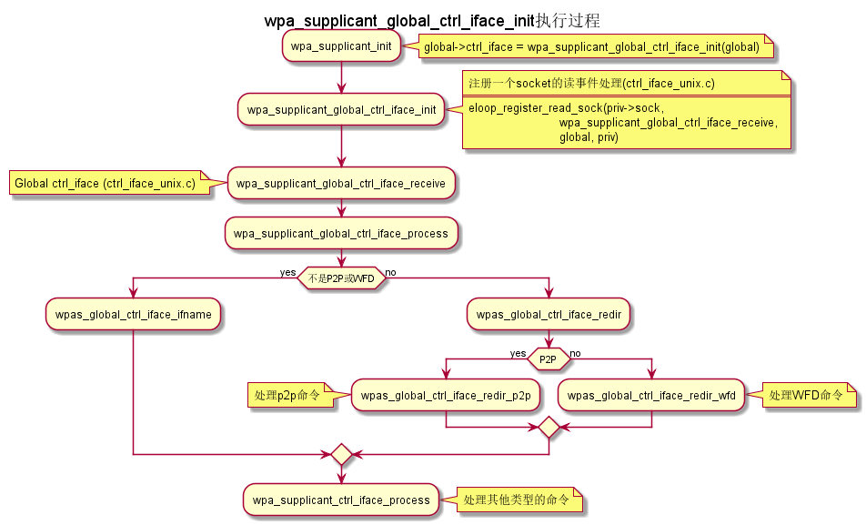
1.4 event loop
1.4.1 eloop data structure
定义了事件循环接口，支持处理注册的超时事件（例如：过多少秒后， 执行某个操作）， socket事件以及信号事件等。
- eloop相关数据结构的关系
Figure 9:
struct eloop_datasocket主要有读、写和异常等三种。
struct eloop_sock_table是 一个表结构，维护了当前所有的socket，针对读、写和异常分别对应一个 表结构。 eloop_sock- eloop sock event type
eloop_register_sock()注册的socket事件类型。typedef enum { EVENT_TYPE_READ = 0, EVENT_TYPE_WRITE, EVENT_TYPE_EXCEPTION } eloop_event_type;event_sock主要的关注的事件是读、写和异常。 - eloop socket event callback type
/** * eloop_sock_handler - eloop socket event callback type */ typedef void (*eloop_sock_handler)(int sock, void *eloop_ctx, void *sock_ctx);
- eloop sock event type
- eloop event
通用事件
- eloop timeout
处理超时事件
- eloop signal
系统信号处理
1.4.2 eloop_init()
初始化一个全局的event loop data。 在其他 eloop_* 前调用。
1.4.3 注册事件处理函数
- register socket读、写，异常等事件
/* * Register a read socket notifier for the given file descriptor. */ int eloop_register_read_sock(int sock, eloop_sock_handler handler, void *eloop_data, void *user_data); /* * Register an event notifier for the given socket's file descriptor. */ int eloop_register_sock(int sock, eloop_event_type type, eloop_sock_handler handler, void *eloop_data, void *user_data); - 注册系统相关事件
int eloop_register_event(void *event, size_t event_size, eloop_event_handler handler, void *eloop_data, void *user_data); - 注册超时处理函数
该函数将会在secs秒后执行。
int eloop_register_timeout(unsigned int secs, unsigned int usecs, eloop_timeout_handler handler, void *eloop_data, void *user_data); - 注册信号处理函数
int eloop_register_signal(int sig, eloop_signal_handler handler, void *user_data); /* * registers handlers for SIGINT and SIGTERM. */ int eloop_register_signal_terminate(eloop_signal_handler handler, void *user_data);
1.4.4 start event loop
1.4.5 其他一些 eloop_* 函数速览
/*
* 监听发生在某个socket的读事件
*/
void eloop_wait_for_read_sock(int sock)
/*
* 注册一个系统信号处理函数
*/
int eloop_register_signal(int sig, eloop_signal_handler handler,
void *user_data)
/*
* 处理目前已经触发的系统信号
*/
static void eloop_process_pending_signals(void)
/*
* 处理某个触发的系统信号
*/
static void eloop_handle_signal(int sig)
/*
* 检查一个timeout处理函数是否已经注册
*/
int eloop_is_timeout_registered(eloop_timeout_handler handler,
void *eloop_data, void *user_data)
/*
*取消一个已经注册的timeout处理函数
*/
int eloop_cancel_timeout_one(eloop_timeout_handler handler,
void *eloop_data, void *user_data,
struct os_time *remaining)
/*
* 取消一个或多个已经注册的timeout处理函数
*/
int eloop_cancel_timeout(eloop_timeout_handler handler,
void *eloop_data, void *user_data)
/*
* 从timeout链表中删除一个eloop_timeout项
*/
static void eloop_remove_timeout(struct eloop_timeout *timeout)
/*
* 注册一个eloop_timeout项，按超时时间的大小，从小
* 到大的顺序排列
*/
int eloop_register_timeout(unsigned int secs, unsigned int usecs,
eloop_timeout_handler handler,
void *eloop_data, void *user_data)
/*
* 注册一个Socket监听对象，添加到相应的监控表中
* (read, write, exception)
*/
int eloop_register_sock(int sock, eloop_event_type type,
eloop_sock_handler handler,
void *eloop_data, void *user_data)
/*
* 注册一个Socket监听对象，监测它的读事件
*/
int eloop_register_read_sock(int sock, eloop_sock_handler handler,
void *eloop_data, void *user_data)
1.5 ctrl interface
1.5.1 概述
wpa_supplicnat 提供了控制接口，可以允许通过外部程序获得
wpa_supplicant 的状态信息，并对其进行管理。相应文件说明如下：
ctrl_iface.c and ctrl_iface.hwpa_supplicant-sideof the control interfacectrl_iface_unix.cUNIX domainsockets-basedcontrol interface backendctrl_iface_udp.cUDPsockets-basedcontrol interface backendctrl_iface_named_pipe.cWindowsnamed pipes-basedcontrol interface backendwpa_ctrl.c and wpa_ctrl.hLibrary functions for external programs to provide access to the wpa_supplicant control interface
外部程序可以通过 ctrl_iface 向 wpa_supplicant 主动发送命令，也
可以被动接收 wpa_supplicant 主动发送过来的一些事件报告。 在
wpa_supplicant_ctrl_iface_init 中调用了 wpa_msg_register_cb 注册了
callback函数 wpa_supplicant_ctrl_iface_msg_cb ， 在该函数中，会主动
将supplicant中发生的一些关键事件发送给上层监听的对端，以便他们能够
了解 wpa_supplicant 的状态变化 。在 wpa_msg , wpa_msg_ctrl ,
wpa_msg_global , wpa_msg_no_global , 中会自动调用该回调函数 。
1.5.2 主要API
主要有两种类型的通信： 命令与底层主动发送的事件消息。 命令由请求和响应组成。 如果要监听底层主动发上来的消息，必须注册监 听器。
- 打开与
wpa_supplicant的一个连接struct wpa_ctrl * wpa_ctrl_open(const char *ctrl_path);
- 发送命令
int wpa_ctrl_request(struct wpa_ctrl *ctrl, const char *cmd, size_t cmd_len, char *reply, size_t *reply_len, void (*msg_cb)(char *msg, size_t len)); - 注册控制接口的事件监听器
int wpa_ctrl_attach(struct wpa_ctrl *ctrl);
- 接收来看控制接口的消息
int wpa_ctrl_recv(struct wpa_ctrl *ctrl, char *reply, size_t *reply_len);
- 检查是否有未决的事件消息
int wpa_ctrl_pending(struct wpa_ctrl *ctrl);
1.5.3 CMMAND
- PING
- MIB
- STATUS
STATUS-verbose- PMKSA
- SET <variable> <valus>
- LOGON
- LOGOFF
- REASSOCIATE
- RECONNECT
- PREAUTH <BSSID>
- ATTACH
- DETACH
- LEVEL <debug level>
- RECONFIGURE
- TERMINATE
- BSSID <network id> <BSSID>
LIST_NETWORKS- DISCONNECT
- SCAN
SCAN流程分析
wpa_supplicant_event–>EVENT_SCAN_RESULTS–>wpa_supplicant_event_scan_results每次扫描结束会，会调用wpas_select_network_from_last_scan来 选择一个网络进行连接。 SCAN_RESULTS- BSS
SELECT_NETWORK<network id>ENABLE_NETWORK<network id>DISABLE_NETWORK<network id>ADD_NETWORKREMOVE_NETWORK<network id>SET_NETWORK<network id> <variable> <value>GET_NETWORK<network id> <variable>SAVE_CONFIG
1.6 configuration
主要数据结构：
struct wpa_config{
};
函数 wpa_config_alloc_empty(...) 定义了所有成员的默认值，一些重要配置
项如下所示：
update_config是否允许
wpa_supplicant覆盖(更新)配置文件（当配置文件发生变化 时）。ctrl_interface这是一个全局配置，指定了该参数后，
wpa_supplicant会打开一个控 制接口，外部程序可以通过此控制接口来管理wpa_supplicant。 字符 串的含义取决于使用的控制接口的机制。 但是，有一点，只要配置了该参 数，就表明启用了控制接口机制。 对于UNIX domain sockets， 这是为Unix domain socket创建的 一个目录，用于监听来自外部程序的请求。 新创建的socket文件会在这个 目录中，如对于接口名称为wlan0的接口，会在ctrl_interface指 定的目录下创建一个socket文件：wlan0。 通过修改wpa_ctrl指定的目录的权限来控制访问wpa_supplicant， 默认情况下，wpa_supplicant默认配置为使用GID为0， 即root权 限。 例如：# DIR=/var/run/wpa_supplicant GROUP=wheel # DIR=/var/run/wpa_supplicant GROUP=0 # (group can be either group name or gid)
对于 UDP连接（Windows默认行为），该值会被忽略。 该值只是用来选择 将被创建的控制接口，该值可被设置为
udp。(control_interfaceudp)对于Windows的命名管道，该值用于设置访问控制接口的安全描述符。如
ctrl_interface=SDDL=D:= 。
eapol_version设置
IEEE 802.1X/EAPOL的版本，wpa_supplicant是基于IEEE 802.1X-2004 EAPOL version 2实现的， 但是为了兼容不支持 version 2的AP，该值默认为设置为1. 当使用MACSec时，该值应该设置 为3，在IEEE Std 802.1X-2010中有定义。ap_scan默认情况下，
wpa_supplicant会请求驱动执行AP扫描，然后使用扫描 结果来选择一个合适的AP。另一种选择就是驱动负责AP扫描并选择一个AP 来关联，wpa_supplicant只是基于驱动给出的关联信息去处理 EAPOL 帧。 有如下一些取值：1:
wpa_supplicantinitiates scanning and AP selection; if no APs matching to the currently enabled networks are found, a new network (IBSS or AP mode operation) may be initialized (if configured) (default)0: driver takes care of scanning, AP selection, and IEEE 802.11 association parameters;
2: like 0, but associate with APs using security policy and SSID (but not BSSID);在这种模式下，驱动会一个一个地尝试关联配置文件中 指定的网络，直到关联成功。另外，每个网络必须显式地配置安全策略。
对于使用
nl80211驱动接口，一般选择ap_scan=1， 在这种模式 下，会先逐一扫描配置文件中的网络，如果没有合适的网络，会创建一个IBSS或 AP模式下的网络 。当使用IBSS或AP模式，使用ap_scan=2可以强制立 即创建新的网络，而不管扫描结果为何。配置连接隐藏AP时，还需要同时指定
ap_scan=1 scan_ssid=1
passive_scan是否强制被动扫描。
0: Do normal scans (allow active scans) (default)
1: Do passive scans.
如果开启被动扫描，则会降低扫描设备的速度，且会导致有些AP扫不到， 如隐藏SSID的AP。
user_mpm默认情况下，
wpa_supplicnat会为一个Open Mesh实现MPM(Mesh Peering Manager)，如果驱动实现了MPM，可以设置些值为0.0: MPM lives in the driver
1:
wpa_supplicantprovides an MPM which handles peering (default)max_peer_linksMaximum number of mesh peering currently maintained by the STA. Maximum number of peer links (0-255; default: 99)
mesh_max_inactivityThis timeout value is used in mesh STA to clean up inactive stations. Timeout in seconds to detect STA inactivity (default: 300 seconds)
cert_in_cbThis controls whether peer certificates for authentication server and its certificate chain are included in EAP peer certificate events. This is enabled by default.
fast_reauth快速重新认证。默认情况下，对于所有支持的EAP方法，快速重新认证是开 启的。
opensc_engine_pathOpenSSL Engine support, 默认情况下，没有加载任何Engine.
openssl_ciphersOpenSSL cipher string
load_dynamic_eapDynamic EAP methods. 当EAP方法是编译成单独的so文件时，需要配置该 项。默认情况下，EAP方法是静态编译到
wpa_supplicant。driver_param驱动接口参数, 在函数
nl80211_set_param中设置。driver_param=use_p2p_group_interface=1
这个参数主要是针对P2P设置的，是否支持 p2p concurrent operation. 每次p2p 协商成功后，会创建一个group interface. 通过这 个接口，来处理p2p相关的管理帧 ，也可以处理非p2p的管理帧，如关联请 求（GC与GO关联时的交互帧）
country国家码
dot11RSNAConfigPMKLifetimePMKSA最大存活时间，默认是43200秒.
dot11RSNAConfigPMKReauthThreshold重新认证的阀值(PMKSA值的百分比), 默认是70.
dot11RSNAConfigSATimeout安全关联的超时，默认是60秒。
uuidUniversally Unique IDentifier, 如果没有配置，会根据MAC地址来产生。
device_name设备名，字符串。
manufacturer设备生产商， 字符串。
model_name设备模式。
model_number模式编号。
serial_number序列号。
device_type主设备类型，格式：<categ>-<OUI>-<subcateg>
os_version操作系统版本号
config_methodsWPS支持的方法。
wps_cred_processing0: process received credentials internally (default)
1: do not process received credentials; just pass them over
ctrl_ifaceto external program(s)2: process received credentials internally and pass them over ctrl_iface to external program(s)
wps_vendor_ext_m1Vendor attribute in WPS M1
wps_priorityPriority for the networks added through WPS
bss_max_countMaximum number of BSS entries to keep in memory
autoscanAutomatic scan
filter_ssids过滤SSID 0： do not filter scan results (default) 1： only include configured SSIDs in scan results/BSS table
ext_password_backendPassword (and passphrase, etc.) backend for external storage
p2p_disabled禁用P2P功能。
p2p_go_max_inactivity检测STA是否活跃的超时值，默认是300秒。
p2p_passphrase_lenGO随机产生的密码的长度，默认是8.
p2p_search_delayExtra delay between concurrent P2P search iterations 默认值为：500ms.
dtim_periodefault value for DTIM period
beacon_intDefault value for Beacon interval
ap_vendor_elementsAdditional vendor specific elements for Beacon and Probe Response frames.
ignore_old_scan_resIgnore scan results older than request
scan_cur_freqWhether to scan only the current frequency 0: Scan all available frequencies. (Default) 1: Scan current operating frequency if another VIF on the same radio is already associated.
mac_addr0 = use permanent MAC address
1 = use random MAC address for each ESS connection
2 = like 1, but maintain OUI (with local admin bit set)
rand_addr_lifetime随机MAC地址的存活时间，默认是60秒。preassoc_mac_addrMAC address policy for pre-association operations
0 = use permanent MAC address
1 = use random MAC address
2 = like 1, but maintain OUI (with local admin bit set)
config_ssid.hDefinition of per network configuration items
config.hDefinition of the
wpa_supplicantconfigurationconfig.cConfiguration parser and common functions
config_file.cConfiguration backend for text files (e.g.,
wpa_supplicant.
1.7 Cryptographic functions
重点看下如何调用这些函数进行加密的
1.8 driver interface
一个新的驱动的注册主要是定义一个 wpa_driver_ops 结构体实例。 硬件
的部分代码会通过这个结构体提供的一些回调函数来控制驱动/无线网卡。
1.8.1 基本机制研究
1.8.2 配置加密方法（TKIP/CCMP）
如果是在Driver中实现的，必须提供一种配置的手段。
1.8.3 漫游和扫描支持
1.8.4 产生WPA IE
WPA IE是在Driver中产生的还是在 wpa_supplicant 中产生的？
1.8.5 rfkill
1.9 l2 packets
1.9.1 链路层套接字 PF_PACKET
Packet套接字用于在MAC层上收发原始数据帧，这样就允许用户在用户空间 完成MAC之上各个层次的实现。 Packet套接字的定义方式与传送层的套接字定义类似，如下：
packet_socket=socket(PF_PACKET,int socket_type,int protocol);
其中 socket_type 有两种类型，一种为 SOCK_RAW,它是包含了MAC层头
部信息的原始分组，当然这种类型的套接字在发送的时候需要自己加上一个
MAC头部（其类型定义在 linux</if_ether.h 中，ethhdr），另一种是
SOCK_DGRAM 类型，它是已经进行了MAC层头部处理的，即收上的帧已经去
掉了头部，而发送时也无须用户添加头部字段。Protocol是指其送交的上层
的协议号，如IP为0x0800，当其为 htons(ETH_P_ALL) （其宏定义为0）
时表示收发所有的协议。创建好套接字后，就可以通过与UDP一样的
recvfrom与sendto函数进行数据的收发，其目的地址结构为 sockaddr_ll
，这与传送层的地址结构定义是不一样的，其长度为20字节（在TCP/IP的链
路层地址中使用了18字节），而传送层的地址结构长度为16字节。
Sockaddr_ll 结构如下：
struct sockaddr_ll
{
unsigned short sll_family; /* 总是 AF_PACKET */
unsigned short sll_protocol; /* 物理层的协议 */
int sll_ifindex; /* 接口号 */
unsigned short sll_hatype; /* 报头类型 */
unsigned char sll_pkttype; /* 分组类型 */
unsigned char sll_halen; /* 地址长度 */
unsigned char sll_addr[8]; /* 物理层地址 */
};
1.9.2 wpa_supplicant 中 l2_packet 的初始化
初始化函数函数在 l2_packet_init ，设置接收不同的LLC层数据包类型。
l2 packets的发送函数： l2_packet_send
驱动接口中接收EAPOL Packet的代码如下：
drv->eapol_sock = socket(PF_PACKET, SOCK_DGRAM, htons(ETH_P_PAE));
if (drv->eapol_sock < 0) {
wpa_printf(MSG_ERROR, "nl80211: socket(PF_PACKET, SOCK_DGRAM, ETH_P_PAE) failed: %s",
strerror(errno));
goto failed;
}
if (eloop_register_read_sock(drv->eapol_sock, handle_eapol, drv, NULL))
{
wpa_printf(MSG_INFO, "nl80211: Could not register read socket for eapol");
goto failed;
}
负责处理的函数是 handle_eapol 。
1.9.3 管理帧发送和接收
初始化RAW Socket，代码如下：
static int hostap_init_sockets(struct hostap_driver_data *drv, u8 *own_addr)
{
struct ifreq ifr;
struct sockaddr_ll addr;
drv->sock = socket(PF_PACKET, SOCK_RAW, htons(ETH_P_ALL));
if (drv->sock < 0) {
wpa_printf(MSG_ERROR, "socket[PF_PACKET,SOCK_RAW]: %s",
strerror(errno));
return -1;
}
...
return linux_get_ifhwaddr(drv->sock, drv->iface, own_addr);
}
(src/drivers/driver_hosap.c)
函数 hostap_send_mlme 发送管理帧，如发送 Probe Response.
handle_frame 用于处理接收到的管理帧或数据帧等。
1.10 hostapd_setup_bss
Initialize Per-BSS data structures.
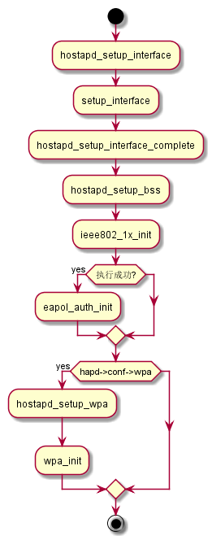
1.11 State Machine
1.11.1 状态机的定义
文件路径 src/utils.h 此文件中定义了一些宏用于实现一个状态机
- 总体说明
首先，需要包含这个头文件，另外在实现文件中，有如下一些要求：
- 必须定义这个宏
STATE_MACHINE_DATA，代表包含状态机变量的数据 结构 - 定义宏
STATE_MACHINE_DEBUG_PREFIX以保证输出该状态机相关的打 印消息时，有相关的前缀信息出来。 - 宏
SM_ENTRY_MA用于定义一组共享一个数据结构的状态机。 - 宏
STATE_MACHINE_ADDR定义到指向在调试输出中的MAC地址 - 宏
SM_ENTRY_M用于定义一组类似的状态机，只是不包含这些额外的 调试信息。
- 必须定义这个宏
- 主要宏
SM_STATE用于声明一个状态机的函数。 当调用SM_ENTER,SM_ENTER_GLOBAL，进入当前状态。#define SM_STATE(machine, state) \ static void sm_ ## machine ## _ ## state ## _Enter(STATE_MACHINE_DATA *sm, \ int global)SM_ENTRY状态机函数入口点，通常位于函数体的开头处。#define SM_ENTRY(machine, state) \ if (!global || sm->machine ## _state != machine ## _ ## state) { \ sm->changed = TRUE; \ wpa_printf(MSG_DEBUG, STATE_MACHINE_DEBUG_PREFIX ": " #machine \ " entering state " #state); \ } \ sm->machine ## _state = machine ## _ ## state;SM_ENTRY_M一组状态机的入口函数，定义与SM_ENTRY一样。SM_ENTRY_MA与SM_ENTRY_M一样，只是在调试信息中加入了MAC地址信息。SM_ENTER将状态机从一个状态转入另一个状态。#define SM_ENTER(machine, state) \ sm_ ## machine ## _ ## state ## _Enter(sm, 0)
SM_ENTER_GLOBAL#define SM_ENTER_GLOBAL(machine, state) \ sm_ ## machine ## _ ## state ## _Enter(sm, 1)
SM_STEP声明一个状态机的step函数#define SM_STEP(machine) \ static void sm_ ## machine ## _Step(STATE_MACHINE_DATA *sm)
SM_STEP_RUN调用一个状态机的step函数#define SM_STEP_RUN(machine) sm_ ## machine ## _Step(sm)
- 程序示例
/** * Copyright (c) 2016 Yajun Fu (fuyajun1983cn@163.com) * * Permission to use, copy, modify, and/or distribute this software for any * purpose with or without fee is hereby granted, provided that the above * copyright notice and this permission notice appear in all copies. * * THE SOFTWARE IS PROVIDED "AS IS" AND THE AUTHOR DISCLAIMS ALL WARRANTIES * WITH REGARD TO THIS SOFTWARE INCLUDING ALL IMPLIED WARRANTIES OF * MERCHANTABILITY AND FITNESS. IN NO EVENT SHALL THE AUTHOR BE LIABLE FOR * ANY SPECIAL, DIRECT, INDIRECT, OR CONSEQUENTIAL DAMAGES OR ANY DAMAGES * WHATSOEVER RESULTING FROM LOSS OF USE, DATA OR PROFITS, WHETHER IN AN * ACTION OF CONTRACT, NEGLIGENCE OR OTHER TORTIOUS ACTION, ARISING OUT OF * OR IN CONNECTION WITH THE USE OR PERFORMANCE OF THIS SOFTWARE. */ #include "includes.h" #include "common.h" #include "wpa_debug.h" #include "state_machine.h" /** * 每个实现状态机的文件都必须定义 * STATE_MACHINE_DATA: * 它包含了一些状态变量。 * STATE_MACHINE_DEBUG_PREFIX: * 打印信息的前缀 */ /** * 状态机API测试 */ #ifdef FALSE #undef FALSE #endif #ifdef TRUE #undef TRUE #endif typedef enum { FALSE = 0, TRUE = 1 } Boolean; static int global = 0; struct fyj_sm { enum { FYJ_INITIALIZE, FYJ_REQUEST, FYJ_RESPONSE, FYJ_FAILURE, FYJ_SUCCESS }FYJ_state; int val; Boolean changed;//必须定义这个域 }; #define STATE_MACHINE_DATA struct fyj_sm #define STATE_MACHINE_DEBUG_PREFIX "FYJ" SM_STATE(FYJ, INITIALIZE) { SM_ENTRY(FYJ, INITIALIZE); sm->val++; } SM_STATE(FYJ, REQUEST) { SM_ENTRY(FYJ, REQUEST); sm->val++; } SM_STATE(FYJ, RESPONSE) { SM_ENTRY(FYJ, RESPONSE); sm->val++; } SM_STATE(FYJ, FAILURE) { SM_ENTRY(FYJ, FAILURE); sm->val++; } SM_STATE(FYJ, SUCCESS) { SM_ENTRY(FYJ, SUCCESS); sm->val++; } /** * 状态机循环中心 */ SM_STEP(FYJ) { switch (sm->FYJ_state) { case FYJ_INITIALIZE: { printf("INITIALIE --> REQUEST\n"); SM_ENTER(FYJ, REQUEST); break; case FYJ_REQUEST: printf("REQUEST --> RESPONSE\n"); SM_ENTER(FYJ, RESPONSE); break; case FYJ_RESPONSE: printf("RESPONSE --> SUCCESS\n"); SM_ENTER(FYJ,SUCCESS); break; case FYJ_SUCCESS: printf("SUCCESS --> FAILURE\n"); SM_ENTER(FYJ, FAILURE); case FYJ_FAILURE: printf("FAILURE --> INITIALIZE\n"); SM_ENTER(FYJ, INITIALIZE); default: break; } } } static int fyj_sm_step(struct fyj_sm *sm) { int res = 0; SM_STEP_RUN(FYJ); if (sm->val > 15) {//after 15 times state transition, stop. res = -1; } return res; } static void fyj_sm_set_state(struct fyj_sm *sm, int state) { sm->FYJ_state = state; } static void fyj_sm_init(struct fyj_sm *sm) { fyj_sm_set_state(sm, FYJ_FAILURE); sm->val = 0; } int main(int argc, char *argv[]) { int res; int select; struct fyj_sm sm; fyj_sm_init(&sm); do { res = fyj_sm_step(&sm); sleep(1); } while (res != -1); return 0; }
1.11.2 L2 Packet (EAPOL包)处理
创建了一个链路层的套接字(driver_nl802.11.c)：
drv->eapol_sock = socket(PF_PACKET, SOCK_DGRAM, htons(ETH_P_PAE));
监听并处理EAPOL链路层数据包
if (eloop_register_read_sock(drv->eapol_sock, handle_eapol, drv, NULL))
{
printf("Could not register read socket for eapol\n");
goto failed;
}
处理流程：

- evnets.c
EVENT_EAPOL_RX在Association之前收到EAPOL包，会先缓存起来，等到Association成 功后，再处理。 wpa_supplicant.c
1.11.3 EAP
EAP Peer State Machine & EAP Server State Machine, RFC4137 & RFC3748
- EAP peer
这个模块是个相对独立的模块，可单独使用。 相关文件说明如下：
eap.c and eap.hEAP状态机和方法接口。eap_defs.h通用的EAP定义eap_i.hEAP状态机和EAP方法的内部定义。eap_sim_common.c and eap_sim_common.hEAP-SIM和EAP-AKA的公用代 码。eap_tls_common.c and eap_tls_common.hEAP-PEAP, EAP-TTLS, and EAP-FAST公用代码eap_tlv.c and eap_tlv.hEAP-PEAP和EAP-FAST的EAP-TLV代码。eap_ttls.c and eap_ttls.hEAP-TTLS代码。eap_pax.c, eap_pax_common.h, eap_pax_common.cEAP-PAX代码eap_psk.c, eap_psk_common.h, eap_psk_common.cEAP-PSK代码eap_sake.c, eap_sake_common.h, eap_sake_common.cEAP-SAKE代 码eap_gpsk.c, eap_gpsk_common.h, eap_gpsk_common.cEAP-GPSK代 码eap_aka.c, eap_fast.c, eap_gtc.c, eap_leap.c, eap_md5.c, eap_mschapv2.c, eap_otp.c, eap_peap.c, eap_-sim.c, eap_tls.c其他EAP方法实现初始化函数：
struct eap_sm * eap_peer_sm_init(void *eapol_ctx, const struct eapol_callbacks *eapol_cb, void *msg_ctx, struct eap_config *conf)相关数据结构：
eapol_ctx基于eap_sm状态机数据结构struct eapol_callbacks与状态机交互的回调函数struct eap_config状态机配置相关的数据
- EAP Server
初始化函数：
struct eap_sm * eap_server_sm_init(void *eapol_ctx, const struct eapol_callbacks *eapol_cb, struct eap_config *conf)相关数据结构：
eapol_ctx服务器端状态机相关数据结构。eapol_callbackseap_config
- EAP Method
1.11.4 EAPOL
IEEE 802.1X-2004 - Supplicant - EAPOL state machines, 处理
EAPOL包的函数： wpa_supplicant_rx_eapol 。
1.11.5 WPA/WPA2
WPA needs to have Supplicant and Authenticator implementations. In case of infrastructure/managed mode, the AP has WPA Authenticator and the client has WPA Supplicant. In case of adhoc/IBSS, all stations need to implement both the Authenticator and Supplicant roles.
WPA: TKIP
WPA2: CCMP
网络配置示例：
network={
ssid="networkname"
key_mgmt=WPA-PSK
psk="longrandompassword"
proto=WPA2
pairwise=CCMP
group=CCMP
}
当关联成功后，会通过 wpa_sm_notify_assoc 来告知WPA
State machine。这个函数会进行一些变量重置。
- wpa Authenticator
在
hostapd_setup_wpa中会初始化wpa_authenticator(wpa_auth_glue.h), 标记为：WPA_PROTO_WPAWPA_PROTO_RSN - WPA supplicant
WPA功能代码如下：
wpa.c and wpa.hWPA state machine and 4-Way/Group Key Handshake processingpreauth.c and preauth.hPMKSA caching and pre-authentication (RSN/WPA2)wpa_i.hInternal definitions for WPA code; not to be included to other modules.在函数
wpa_supplicant_init_wpa中初始化该状态机。
- wpa statemachine状态变化
设置当前状态：
wpa_supplicant_set_state获取当前状态：wpa_supplicant_get_state访问当前状态机的状态(仅供wpa状态机内部调用)：
- 获取当前状态机的状态：
wpa_sm_get_state - 设置当前状态机的状态:
wpa_sm_set_state
- 获取当前状态机的状态：
- 4步握手日志分析
连接AP时，
wpa_supplicant执行4步握手过程的日志：I/wpa_supplicant( 5349): wlan0: Associated with 8c:be:be:2d:3f:27 D/wpa_supplicant( 5349): CTRL_IFACE monitor send - hexdump(len=40): 2f 64 61 74 61 2f 6d 69 73 63 2f 77 69 66 69 2f 73 6f 63 6b 65 74 73 2f 77 70 61 5f 63 74 72 6c ... D/wpa_supplicant( 5349): wlan0: WPA: Association event - clear replay counter D/wpa_supplicant( 5349): wlan0: WPA: Clear old PTK D/wpa_supplicant( 5349): TDLS: Remove peers on association D/wpa_supplicant( 5349): EAPOL: External notification - portEnabled=0 D/wpa_supplicant( 5349): EAPOL: Supplicant port status: Unauthorized D/wpa_supplicant( 5349): nl80211: Set supplicant port unauthorized for 8c:be:be:2d:3f:27 D/wpa_supplicant( 5349): EAPOL: External notification - portValid=0 D/wpa_supplicant( 5349): EAPOL: Supplicant port status: Unauthorized D/wpa_supplicant( 5349): nl80211: Set supplicant port unauthorized for 8c:be:be:2d:3f:27 D/wpa_supplicant( 5349): EAPOL: External notification - EAP success=0 D/wpa_supplicant( 5349): EAPOL: Supplicant port status: Unauthorized D/wpa_supplicant( 5349): nl80211: Set supplicant port unauthorized for 8c:be:be:2d:3f:27 D/wpa_supplicant( 5349): EAPOL: External notification - portEnabled=1 D/wpa_supplicant( 5349): EAPOL: SUPP_PAE entering state CONNECTING D/wpa_supplicant( 5349): EAPOL: enable timer tick D/wpa_supplicant( 5349): EAPOL: SUPP_BE entering state IDLE D/wpa_supplicant( 5349): wlan0: Setting authentication timeout: 10 sec 0 usec D/wpa_supplicant( 5349): wlan0: Cancelling scan request D/wpa_supplicant( 5349): wlan0: P2P: Station mode scan operation not pending anymore (sta_scan_pending=0 p2p_cb_on_scan_complete=0) D/wpa_supplicant( 5349): RTM_NEWLINK: operstate=0 ifi_flags=0x1003 ([UP]) D/wpa_supplicant( 5349): RTM_NEWLINK, IFLA_IFNAME: Interface 'wlan0' added D/wpa_supplicant( 5349): nl80211: if_removed already cleared - ignore event D/wpa_supplicant( 5349): RTM_NEWLINK: operstate=0 ifi_flags=0x11003 ([UP][LOWER_UP]) D/wpa_supplicant( 5349): RTM_NEWLINK, IFLA_IFNAME: Interface 'wlan0' added D/wpa_supplicant( 5349): nl80211: if_removed already cleared - ignore event D/wpa_supplicant( 5349): RTM_NEWLINK: operstate=0 ifi_flags=0x11003 ([UP][LOWER_UP]) D/wpa_supplicant( 5349): RTM_NEWLINK, IFLA_IFNAME: Interface 'wlan0' added D/wpa_supplicant( 5349): nl80211: if_removed already cleared - ignore event D/wpa_supplicant( 5349): RTM_NEWLINK: operstate=0 ifi_flags=0x11003 ([UP][LOWER_UP]) D/wpa_supplicant( 5349): RTM_NEWLINK, IFLA_IFNAME: Interface 'wlan0' added D/wpa_supplicant( 5349): nl80211: if_removed already cleared - ignore event D/wpa_supplicant( 5349): RTM_NEWLINK: operstate=0 ifi_flags=0x11003 ([UP][LOWER_UP]) D/wpa_supplicant( 5349): RTM_NEWLINK, IFLA_IFNAME: Interface 'wlan0' added D/wpa_supplicant( 5349): nl80211: if_removed already cleared - ignore event D/wpa_supplicant( 5349): RX ctrl_iface - hexdump(len=27): 42 53 53 20 52 41 4e 47 45 3d 33 35 38 2d 20 4d 41 53 4b 3d 30 78 32 31 39 38 37 D/wpa_supplicant( 5349): wlan0: Control interface command 'BSS RANGE=358- MASK=0x21987' D/wpa_supplicant( 5349): wlan0: RX EAPOL from 8c:be:be:2d:3f:27 D/wpa_supplicant( 5349): wlan0: Setting authentication timeout: 10 sec 0 usec D/wpa_supplicant( 5349): wlan0: IEEE 802.1X RX: version=2 type=3 length=117 D/wpa_supplicant( 5349): wlan0: EAPOL-Key type=2 D/wpa_supplicant( 5349): wlan0: key_info 0x8a (ver=2 keyidx=0 rsvd=0 Pairwise Ack) D/wpa_supplicant( 5349): wlan0: key_length=16 key_data_length=22 D/wpa_supplicant( 5349): replay_counter - hexdump(len=8): 00 00 00 00 00 00 00 01 D/wpa_supplicant( 5349): key_nonce - hexdump(len=32): 57 fd 7f f5 43 b6 5e 97 0c 1f d9 39 68 12 f0 76 04 07 45 ec ab 86 95 07 01 b6 11 78 ab d2 60 84 D/wpa_supplicant( 5349): key_iv - hexdump(len=16): 00 00 00 00 00 00 00 00 00 00 00 00 00 00 00 00 D/wpa_supplicant( 5349): key_rsc - hexdump(len=8): 00 00 00 00 00 00 00 00 D/wpa_supplicant( 5349): key_id (reserved) - hexdump(len=8): 00 00 00 00 00 00 00 00 D/wpa_supplicant( 5349): key_mic - hexdump(len=16): 00 00 00 00 00 00 00 00 00 00 00 00 00 00 00 00 D/wpa_supplicant( 5349): wlan0: State: ASSOCIATED -> 4WAY_HANDSHAKE D/wpa_supplicant( 5349): CTRL_IFACE monitor send - hexdump(len=40): 2f 64 61 74 61 2f 6d 69 73 63 2f 77 69 66 69 2f 73 6f 63 6b 65 74 73 2f 77 70 61 5f 63 74 72 6c ... D/wpa_supplicant( 5349): wlan0: WPA: RX message 1 of 4-Way Handshake from 8c:be:be:2d:3f:27 (ver=2) D/wpa_supplicant( 5349): RSN: msg 1/4 key data - hexdump(len=22): dd 14 00 0f ac 04 8a dd f5 15 e4 80 52 73 19 66 b0 c0 ab 38 ea 92 D/wpa_supplicant( 5349): WPA: PMKID in EAPOL-Key - hexdump(len=22): dd 14 00 0f ac 04 8a dd f5 15 e4 80 52 73 19 66 b0 c0 ab 38 ea 92 D/wpa_supplicant( 5349): RSN: PMKID from Authenticator - hexdump(len=16): 8a dd f5 15 e4 80 52 73 19 66 b0 c0 ab 38 ea 92 D/wpa_supplicant( 5349): wlan0: RSN: no matching PMKID found D/wpa_supplicant( 5349): WPA: Renewed SNonce - hexdump(len=32): 59 7e 2a ad 8a 1a 8c 1e 2d 67 dc 8a 69 9f 76 08 c7 82 49 eb 5b 94 c0 94 fd cf d5 1d 2e 1a 10 8c D/wpa_supplicant( 5349): WPA: PTK derivation - A1=00:0c:e7:66:32:ae A2=8c:be:be:2d:3f:27 D/wpa_supplicant( 5349): WPA: Nonce1 - hexdump(len=32): 59 7e 2a ad 8a 1a 8c 1e 2d 67 dc 8a 69 9f 76 08 c7 82 49 eb 5b 94 c0 94 fd cf d5 1d 2e 1a 10 8c D/wpa_supplicant( 5349): WPA: Nonce2 - hexdump(len=32): 57 fd 7f f5 43 b6 5e 97 0c 1f d9 39 68 12 f0 76 04 07 45 ec ab 86 95 07 01 b6 11 78 ab d2 60 84 D/wpa_supplicant( 5349): WPA: PMK - hexdump(len=32): [REMOVED] D/wpa_supplicant( 5349): WPA: PTK - hexdump(len=48): [REMOVED] D/wpa_supplicant( 5349): WPA: WPA IE for msg 2/4 - hexdump(len=22): 30 14 01 00 00 0f ac 02 01 00 00 0f ac 04 01 00 00 0f ac 02 00 00 D/wpa_supplicant( 5349): WPA: Replay Counter - hexdump(len=8): 00 00 00 00 00 00 00 01 D/wpa_supplicant( 5349): wlan0: WPA: Sending EAPOL-Key 2/4 D/wpa_supplicant( 5349): WPA: KCK - hexdump(len=16): [REMOVED] D/wpa_supplicant( 5349): WPA: Derived Key MIC - hexdump(len=16): 25 ff 3d 16 51 bc bd 42 fe aa 3f 25 63 8c 65 5e D/wpa_supplicant( 5349): wlan0: RX EAPOL from 8c:be:be:2d:3f:27 D/wpa_supplicant( 5349): wlan0: IEEE 802.1X RX: version=2 type=3 length=175 D/wpa_supplicant( 5349): wlan0: EAPOL-Key type=2 D/wpa_supplicant( 5349): wlan0: key_info 0x13ca (ver=2 keyidx=0 rsvd=0 Pairwise Install Ack MIC Secure Encr) D/wpa_supplicant( 5349): wlan0: key_length=16 key_data_length=80 D/wpa_supplicant( 5349): replay_counter - hexdump(len=8): 00 00 00 00 00 00 00 02 D/wpa_supplicant( 5349): key_nonce - hexdump(len=32): 57 fd 7f f5 43 b6 5e 97 0c 1f d9 39 68 12 f0 76 04 07 45 ec ab 86 95 07 01 b6 11 78 ab d2 60 84 D/wpa_supplicant( 5349): key_iv - hexdump(len=16): 04 07 45 ec ab 86 95 07 01 b6 11 78 ab d2 60 85 D/wpa_supplicant( 5349): key_rsc - hexdump(len=8): 8f 4f 0b 00 00 00 00 00 D/wpa_supplicant( 5349): key_id (reserved) - hexdump(len=8): 00 00 00 00 00 00 00 00 D/wpa_supplicant( 5349): key_mic - hexdump(len=16): 91 bc 81 3d 95 3d a5 c3 93 38 d0 09 9e a7 45 28 D/wpa_supplicant( 5349): RSN: encrypted key data - hexdump(len=80): ca 54 90 ac 17 eb c2 40 63 a0 c5 f8 16 11 5a 96 72 2b 7d fa 80 c9 ca d6 5f 86 b8 f5 70 44 29 e8 ... D/wpa_supplicant( 5349): WPA: decrypted EAPOL-Key key data - hexdump(len=72): [REMOVED] D/wpa_supplicant( 5349): wlan0: State: 4WAY_HANDSHAKE -> 4WAY_HANDSHAKE D/wpa_supplicant( 5349): wlan0: WPA: RX message 3 of 4-Way Handshake from 8c:be:be:2d:3f:27 (ver=2) D/wpa_supplicant( 5349): WPA: IE KeyData - hexdump(len=72): 30 18 01 00 00 0f ac 02 02 00 00 0f ac 04 00 0f ac 02 01 00 00 0f ac 02 0c 00 dd 26 00 0f ac 01 ... D/wpa_supplicant( 5349): WPA: RSN IE in EAPOL-Key - hexdump(len=26): 30 18 01 00 00 0f ac 02 02 00 00 0f ac 04 00 0f ac 02 01 00 00 0f ac 02 0c 00 D/wpa_supplicant( 5349): WPA: GTK in EAPOL-Key - hexdump(len=40): [REMOVED] D/wpa_supplicant( 5349): wlan0: WPA: Sending EAPOL-Key 4/4 D/wpa_supplicant( 5349): WPA: KCK - hexdump(len=16): [REMOVED] D/wpa_supplicant( 5349): WPA: Derived Key MIC - hexdump(len=16): 06 48 d0 6e 3c eb 56 19 6a a6 7c 8d e8 6e cf 2c D/wpa_supplicant( 5349): wlan0: WPA: Installing PTK to the driver D/wpa_supplicant( 5349): wpa_driver_nl80211_set_key: ifindex=6 (wlan0) alg=3 addr=0xab197b84 key_idx=0 set_tx=1 seq_len=6 key_len=16 D/wpa_supplicant( 5349): addr=8c:be:be:2d:3f:27 D/wpa_supplicant( 5349): EAPOL: External notification - portValid=1 D/wpa_supplicant( 5349): wlan0: State: 4WAY_HANDSHAKE -> GROUP_HANDSHAKE D/wpa_supplicant( 5349): CTRL_IFACE monitor send - hexdump(len=40): 2f 64 61 74 61 2f 6d 69 73 63 2f 77 69 66 69 2f 73 6f 63 6b 65 74 73 2f 77 70 61 5f 63 74 72 6c ... D/wpa_supplicant( 5349): RSN: received GTK in pairwise handshake - hexdump(len=34): [REMOVED] D/wpa_supplicant( 5349): WPA: Group Key - hexdump(len=32): [REMOVED] D/wpa_supplicant( 5349): wlan0: WPA: Installing GTK to the driver (keyidx=1 tx=0 len=32) D/wpa_supplicant( 5349): WPA: RSC - hexdump(len=6): 8f 4f 0b 00 00 00 D/wpa_supplicant( 5349): wpa_driver_nl80211_set_key: ifindex=6 (wlan0) alg=2 addr=0xaabaf2cc key_idx=1 set_tx=0 seq_len=6 key_len=32 D/wpa_supplicant( 5349): broadcast key I/wpa_supplicant( 5349): wlan0: WPA: Key negotiation completed with 8c:be:be:2d:3f:27 [PTK=CCMP GTK=TKIP] D/wpa_supplicant( 5349): CTRL_IFACE monitor send - hexdump(len=40): 2f 64 61 74 61 2f 6d 69 73 63 2f 77 69 66 69 2f 73 6f 63 6b 65 74 73 2f 77 70 61 5f 63 74 72 6c ... D/wpa_supplicant( 5349): wlan0: Cancelling authentication timeout D/wpa_supplicant( 5349): wlan0: State: GROUP_HANDSHAKE -> COMPLETED I/wpa_supplicant( 5349): wlan0: CTRL-EVENT-CONNECTED - Connection to 8c:be:be:2d:3f:27 completed (auth) [id=1 id_str=] D/wpa_supplicant( 5349): CTRL_IFACE monitor send - hexdump(len=40): 2f 64 61 74 61 2f 6d 69 73 63 2f 77 69 66 69 2f 73 6f 63 6b 65 74 73 2f 77 70 61 5f 63 74 72 6c ... D/wpa_supplicant( 5349): wpa_driver_nl80211_set_operstate: operstate 0->1 (UP) D/wpa_supplicant( 5349): netlink: Operstate: linkmode=-1, operstate=6 D/wpa_supplicant( 5349): wlan0: P2P: Station mode scan operation not pending anymore (sta_scan_pending=0 p2p_cb_on_scan_complete=0) D/wpa_supplicant( 5349): CTRL_IFACE monitor send - hexdump(len=40): 2f 64 61 74 61 2f 6d 69 73 63 2f 77 69 66 69 2f 73 6f 63 6b 65 74 73 2f 77 70 61 5f 63 74 72 6c ... D/wpa_supplicant( 5349): EAPOL: External notification - portValid=1 D/wpa_supplicant( 5349): EAPOL: External notification - EAP success=1 D/wpa_supplicant( 5349): EAPOL: SUPP_PAE entering state AUTHENTICATING D/wpa_supplicant( 5349): EAPOL: SUPP_BE entering state SUCCESS D/wpa_supplicant( 5349): EAP: EAP entering state DISABLED D/wpa_supplicant( 5349): EAPOL: SUPP_PAE entering state AUTHENTICATED D/wpa_supplicant( 5349): EAPOL: Supplicant port status: Authorized D/wpa_supplicant( 5349): nl80211: Set supplicant port authorized for 8c:be:be:2d:3f:27 D/wpa_supplicant( 5349): EAPOL: SUPP_BE entering state IDLE D/wpa_supplicant( 5349): EAPOL authentication completed successfully
2 功能模块分析
2.1 wlan
当有两个AP的SSID相同，一个有加密，一个没有加密，当我们连接到这个加 密的AP时，重启系统后，有可能会连接到另一个未加密的AP，此时，可以在 网络配置中强制设置bssid的值为某个AP的mac地址进行锁定。
2.2 P2P
2.2.1 数据结构分析与初始化流程
- 主要数据结构
- 配置文件示例
ctrl_interface=/data/misc/wifi/sockets driver_param=use_p2p_group_interface=1 update_config=1 device_name=Android_9bf5 manufacturer=ABC Inc. model_name=ABC Wireless Model model_number=1.0 serial_number=2.0 device_type=10-0050F204-5 os_version=01020300 config_methods=virtual_push_button physical_display keypad p2p_listen_reg_class=81 p2p_listen_channel=1 p2p_oper_reg_class=81 p2p_oper_channel=1 p2p_go_intent=14 p2p_ssid_postfix=-Android_9bf5 persistent_reconnect=1 p2p_no_group_iface=1
其中
update_config选项用于支持实时更新配置信息，比如保存 p2p persistent group。 如果想禁用persistent group，则将该选 项配置为0是一种取巧的办法。 - 初始化流程
当Driver支持一个非网络接口的P2P Device接口时,
/* Driver supports a dedicated interface for P2P Device */ #define WPA_DRIVER_FLAGS_DEDICATED_P2P_DEVICE 0x20000000
先做
wpa_drv_if_add，然后进行wpa_supplicant_add_iface。 否则，则从wpa_supplicant_add_iface开始执行。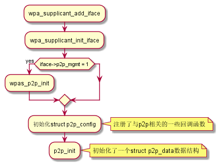
在
p2p_init函数中，同时也注册了一个 循环超时检测函数p2p_expiration_timeout，这个函数会周期性检查当前P2P Peers端是 否处于活跃状态（当我们是GO的时候，需要做这样的检查，以维护peer device list列表）
2.2.2 P2P属性解析
函数 p2p_parse_p2p_ie 分析
2.2.3 基本连接流程
- 一般连接过程
Figure 15: P2P Standard Group Formation
- 首先，P2P设备要能发现对方，会通过扫描来进行：要么在1，6，11信道 上主动发送Probe Request来侦测P2P设备，要么停留在某个信息侦测 Beacon或Probe Reqeust帧。
- 在建立P2P组前，可以询问被发现的P2P设备支持哪些服务。
- 当决定跟被发现的P2P设备连接时，可以邀请一个已经加一个了某个P2P
组的P2P设备加入一个新的P2P组，或与一个未连接的P2P设备通过GO协
商过程形成一个新的P2P组。
会经历GO-NEGOTIATION-REQUEST和GO-NEGOTIATION-RESPONSE两步交互
过程，一旦协商完成，发起方会发送一个
GO-NEGOTIATION-CONFIRMATION，然后两个设备都会切换到协商好的信道
上去进行通信。
GO会不停地发送Beacon帧，携带协商的BSSID信息，且
group formation bit会置为1，因为此时，P2P成组过程还没有结束。 - 然后是
Provisioning阶段开始，P2P Client会连接GO，通过WPS协 议来交换credentials信息，实质上是一些EAP消息的交互（M1~M8） 当加入一个现存的P2P组时，或为了加快provisioning阶段，设备 可以在进行Group协商之前执行Provision Discovery request/response. 如果不这样，GO Negotiation会失败。必须在后 续重新启动协商过程。 - 之后 ，会进行关联，4-way握手过程，以交换密钥。 之后，GC会向GO
请求一个IPv4的地址，GO需要实现DHCP服务器的功能。
为了免掉每次Group创建过程中，需要输入PIN码的麻烦，可以将P2P组 设为
persistent的，这样它会存储credentials信息，并在适 当的时候重新连接 。p2p设备连接测试实例：
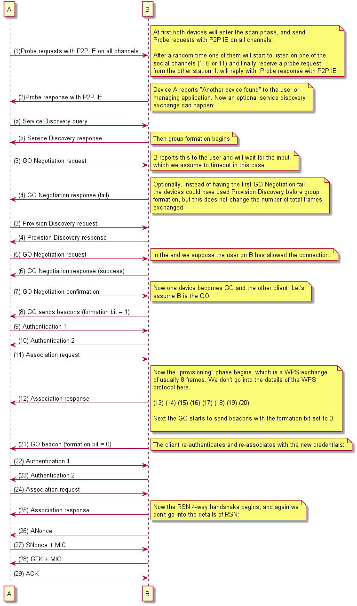
- 收到Invitation Request的交互过程
Figure 17: P2P Persisten Group Formation
- 当前设置处于
P2P_Find阶段时，如果收到Invitation RequestAction帧，即P2P: Received Invitation Request from 86:38:38:b0:ff:ee (freq=2462)，则首先会解析该Action帧携带的一些 信息，然后将该设备添加到设备列表中，并报告有新的设备发现。 - 创建一个p2p接口。
P2P: Create a new interface p2p-p2p0-0 for the groupnl80211: Create interface iftype 9 (P2P_GO) - 准备发送Invitation Response
- 标记当前状态：
p2p->pending_action_state = P2P_PENDING_INVITATION_RESPONSE
- 调用
p2p_send_action发送p2p invitation response 调用wpas_send_action, 也即offchannel_send_action(…), 在该函数中，将会用wpa_s->pending_action_tx标记本次TX Action。 如果TX成功， 驱动会上报TX_STATUS， 此时就会调用offchannel_send_action_tx_staus， 在该函数中会检查wpa_s->pending_action_tx是否为空，如果为空，则会忽略本次事件。 否则，才会调用回调函数wpas_p2p_send_action_tx_status则会进入后面的流程。
- 标记当前状态：
- 如果一切顺利，会回调
p2p_inviation_resp_cb, 它会调用wpas_invitation_received。 - 调用
p2p_stop_find。示例日志：
D/wpa_supplicant( 722): p2p0: Event RX_MGMT (20) received D/wpa_supplicant( 722): p2p0: Received Action frame: SA=16:f6:5a:ac:92:0e Category=4 DataLen=159 freq=2437 MHz D/wpa_supplicant( 722): P2P: RX P2P Public Action from 16:f6:5a:ac:92:0e D/wpa_supplicant( 722): P2P: P2P Public Action contents - hexdump(len=154): 03 02 dd 87 50 6f 9a 09 05 02 00 64 14 12 01 00 01 11 05 00 43 4e 04 7c 95 0b 35 00 43 4e 04 51 ... D/wpa_supplicant( 722): P2P: Received Invitation Request from 16:f6:5a:ac:92:0e (freq=2437) D/wpa_supplicant( 722): P2P: Parsing the received message D/wpa_supplicant( 722): P2P: * Dialog Token: 2 D/wpa_supplicant( 722): P2P: Parsing P2P IE D/wpa_supplicant( 722): P2P: Attribute 5 length 2 D/wpa_supplicant( 722): P2P: * Configuration Timeout D/wpa_supplicant( 722): P2P: Attribute 18 length 1 D/wpa_supplicant( 722): P2P: * Invitation Flags: bitmap 0x1 D/wpa_supplicant( 722): P2P: Attribute 17 length 5 D/wpa_supplicant( 722): P2P: * Operating Channel: Country CN(0x04) Regulatory Class 124 Channel Number 149 D/wpa_supplicant( 722): P2P: Attribute 11 length 53 D/wpa_supplicant( 722): P2P: * Channel List: Country String 'CN(0x04)' D/wpa_supplicant( 722): P2P: Channel List - hexdump(len=53): 43 4e 04 51 0d 01 02 03 04 05 06 07 08 09 0a 0b 0c 0d 73 04 24 28 2c 30 7c 04 95 99 9d a1 7d 05 ... D/wpa_supplicant( 722): P2P: Attribute 15 length 28 D/wpa_supplicant( 722): P2P: * P2P Group ID: Device Address 02:22:13:03:21:3c D/wpa_supplicant( 722): P2P: * P2P Group ID: SSID - hexdump(len=22): 44 49 52 45 43 54 2d 39 4e 2d 41 6e 64 72 6f 69 64 5f 36 39 62 34 D/wpa_supplicant( 722): P2P: Attribute 13 length 24 D/wpa_supplicant( 722): P2P: * Device Info: addr 16:f6:5a:ac:92:0e primary device type 10-0050F204-5 device name 'fyj' config methods 0x188 D/wpa_supplicant( 722): P2P: Peer country - hexdump(len=3): 43 4e 04 D/wpa_supplicant( 722): P2P: Own reg_classes 7 peer reg_classes 8 intersection reg_classes 7 D/wpa_supplicant( 722): P2P: own channels: 81:1,2,3,4,5,6,7,8,9,10,11,12,13 115:36,40,44,48 124:149,153,157,161 116:36,44 117:40,48 126:149,157 127:153,161 D/wpa_supplicant( 722): P2P: peer channels: 81:1,2,3,4,5,6,7,8,9,10,11,12,13 115:36,40,44,48 124:149,153,157,161 125:149,153,157,161,165 116:36,44 117:40,48 126:149,157 127:153,161 D/wpa_supplicant( 722): P2P: intersection: 81:1,2,3,4,5,6,7,8,9,10,11,12,13 115:36,40,44,48 124:149,153,157,161 116:36,44 117:40,48 126:149,157 127:153,161 D/wpa_supplicant( 722): P2P: Create a new interface p2p-p2p0-1 for the group D/wpa_supplicant( 722): nl80211: Create interface iftype 9 (P2P_GO) D/wpa_supplicant( 722): nl80211: New interface p2p-p2p0-1 created: ifindex=11 D/wpa_supplicant( 722): P2P: Created pending virtual interface p2p-p2p0-1 addr 06:22:13:03:21:3c D/wpa_supplicant( 722): P2P: Own frequency preference: 0 MHz D/wpa_supplicant( 722): p2p0: Determining shared radio frequencies (max len 1) D/wpa_supplicant( 722): p2p0: Shared frequencies (len=1): completed iteration D/wpa_supplicant( 722): p2p0: freq[0]: 2437, flags=0x1 D/wpa_supplicant( 722): p2p0: Shared frequencies (len=1): valid for P2P D/wpa_supplicant( 722): p2p0: freq[0]: 2437, flags=0x1 D/wpa_supplicant( 722): P2P: Trying to prefer a channel already used by one of the interfaces D/wpa_supplicant( 722): P2P: Own frequency preference: 2437 MHz D/wpa_supplicant( 722): P2P: No extra channels available - trying to force channel to match a channel already used by one of the interfaces D/wpa_supplicant( 722): P2P: Invitation processing forced frequency 2437 MHz D/wpa_supplicant( 722): P2P: * Dialog Token: 2 D/wpa_supplicant( 722): P2P: * P2P IE header D/wpa_supplicant( 722): P2P: * Status: 0 D/wpa_supplicant( 722): P2P: * Configuration Timeout: GO 0 (*10ms) client 0 (*10ms) D/wpa_supplicant( 722): P2P: * Operating Channel: Regulatory Class 81 Channel 6 D/wpa_supplicant( 722): P2P: * P2P Group BSSID 06:22:13:03:21:3c D/wpa_supplicant( 722): P2P: * Channel List - hexdump(len=46): 58 58 04 51 0d 01 02 03 04 05 06 07 08 09 0a 0b 0c 0d 73 04 24 28 2c 30 7c 04 95 99 9d a1 74 02 ... D/wpa_supplicant( 722): P2P: Schedule new radio work for Action frame TX (listen_freq=-1 send_freq=-1) D/wpa_supplicant( 722): p2p0: Add radio work 'p2p-send-action'@0x7fab01c470 D/wpa_supplicant( 722): p2p0: First radio work item in the queue - schedule start immediately D/wpa_supplicant( 722): p2p0: Starting radio work 'p2p-send-action'@0x7fab01c470 after 0.000113 second wait D/wpa_supplicant( 722): Off-channel: Send action frame: freq=2437 dst=16:f6:5a:ac:92:0e src=02:22:13:03:21:3c bssid=02:22:13:03:21:3c len=104 D/wpa_supplicant( 722): Off-channel: Schedule Action frame to be transmitted once the driver gets to the requested channel D/wpa_supplicant( 722): nl80211: Remain-on-channel cookie 0x4d2 for freq=2437 MHz duration=200 D/wpa_supplicant( 722): nl80211: Ignore RTM_NEWLINK event for foreign ifindex 11 D/wpa_supplicant( 722): nl80211: Event message available D/wpa_supplicant( 722): nl80211: Drv Event 55 (NL80211_CMD_REMAIN_ON_CHANNEL) received for p2p0 D/wpa_supplicant( 722): nl80211: Remain-on-channel event (cancel=0 freq=2437 channel_type=0 duration=200 cookie=0x4d2 (match)) D/wpa_supplicant( 722): p2p0: Event REMAIN_ON_CHANNEL (21) received D/wpa_supplicant( 722): Off-channel: Send Action callback (without_roc=0 pending_action_tx=0x7fab04f420 pending_action_tx_done=0) D/wpa_supplicant( 722): Off-channel: Sending pending Action frame to 16:f6:5a:ac:92:0e using interface p2p0 D/wpa_supplicant( 722): nl80211: Send Action frame (ifindex=9, freq=2437 MHz wait=0 ms no_cck=1) D/wpa_supplicant( 722): nl80211: CMD_FRAME freq=2437 wait=0 no_cck=1 no_ack=0 offchanok=1 D/wpa_supplicant( 722): CMD_FRAME - hexdump(len=128): d0 00 00 00 16 f6 5a ac 92 0e 02 22 13 03 21 3c 02 22 13 03 21 3c 00 00 04 09 50 6f 9a 09 04 02 ... D/wpa_supplicant( 722): nl80211: Frame TX command accepted; cookie 0x1f D/wpa_supplicant( 722): P2P: Ignore remain-on-channel callback (off_channel_freq=2437 pending_listen_freq=0 freq=2437 duration=200) D/wpa_supplicant( 722): nl80211: Event message available D/wpa_supplicant( 722): nl80211: Drv Event 60 (NL80211_CMD_FRAME_TX_STATUS) received for p2p0 D/wpa_supplicant( 722): nl80211: MLME event 60 (NL80211_CMD_FRAME_TX_STATUS) on p2p0(02:22:13:03:21:3c) A1=16:f6:5a:ac:92:0e A2=02:22:13:03:21:3c D/wpa_supplicant( 722): nl80211: MLME event frame - hexdump(len=128): d0 00 00 00 16 f6 5a ac 92 0e 02 22 13 03 21 3c 02 22 13 03 21 3c 00 00 04 09 50 6f 9a 09 04 02 ... D/wpa_supplicant( 722): nl80211: Frame TX status event D/wpa_supplicant( 722): nl80211: Action TX status: cookie=01f (match) (ack=1) D/wpa_supplicant( 722): p2p0: Event TX_STATUS (18) received D/wpa_supplicant( 722): p2p0: EVENT_TX_STATUS dst=16:f6:5a:ac:92:0e type=0 stype=13 D/wpa_supplicant( 722): Off-channel: Delete matching pending action frame D/wpa_supplicant( 722): Off-channel: TX status result=0 cb=0x55817df9a4 D/wpa_supplicant( 722): P2P: Action frame TX callback (state=8 freq=2437 dst=16:f6:5a:ac:92:0e src=02:22:13:03:21:3c bssid=02:22:13:03:21:3c result=0 D/wpa_supplicant( 722): P2P: Invitation Response TX callback: success=1 D/wpa_supplicant( 722): p2p0: Radio work 'p2p-send-action'@0x7fab01c470 done in 0.004818 seconds D/wpa_supplicant( 722): Off-channel: Action frame sequence done notification D/wpa_supplicant( 722): nl80211: Cancel remain-on-channel with cookie 0x4d2 D/wpa_supplicant( 722): P2P: Invitation from peer 16:f6:5a:ac:92:0e was accepted; op_freq=2437 MHz, SSID=DIRECT-9N-Android_69b4 D/wpa_supplicant( 722): P2P: Stopping find D/wpa_supplicant( 722): P2P: Clear timeout (state=SEARCH) I/wpa_supplicant( 722): P2P-FIND-STOPPED D/wpa_supplicant( 722): CTRL_IFACE monitor sent successfully to /data/misc/wifi/sockets/wpa_ctrl_501-2\x00 D/wpa_supplicant( 722): P2P: State SEARCH -> IDLE D/wpa_supplicant( 722): nl80211: Disable Probe Request reporting nl_preq=0x888888f7238a85c9 D/wpa_supplicant( 722): P2P: Set GO freq based on forced frequency 2437 MHz D/wpa_supplicant( 722): p2p0: Determining shared radio frequencies (max len 1) D/wpa_supplicant( 722): p2p0: Shared frequencies (len=1): completed iteration D/wpa_supplicant( 722): p2p0: freq[0]: 2437, flags=0x1 D/wpa_supplicant( 722): p2p0: Shared frequencies (len=1): valid for P2P D/wpa_supplicant( 722): p2p0: freq[0]: 2437, flags=0x1 D/wpa_supplicant( 722): P2P: Pending virtual interface exists - skip creation of a new one D/wpa_supplicant( 722): Override interface parameter: ctrl_interface ('/data/misc/wifi/sockets' -> '/data/misc/wifi/sockets') D/wpa_supplicant( 722): Initializing interface 'p2p-p2p0-1' conf 'N/A' driver 'nl80211' ctrl_interface '/data/misc/wifi/sockets' bridge 'N/A' I/wpa_supplicant( 722): rfkill: Cannot open RFKILL control device D/wpa_supplicant( 722): nl80211: RFKILL status not available D/wpa_supplicant( 722): nl80211: TDLS supported D/wpa_supplicant( 722): nl80211: TDLS external setup D/wpa_supplicant( 722): nl80211: Supported cipher 00-0f-ac:1 D/wpa_supplicant( 722): nl80211: Supported cipher 00-0f-ac:5 D/wpa_supplicant( 722): nl80211: Supported cipher 00-0f-ac:2 D/wpa_supplicant( 722): nl80211: Supported cipher 00-0f-ac:4 D/wpa_supplicant( 722): nl80211: Use separate P2P group interface (driver advertised support) D/wpa_supplicant( 722): nl80211: Disable use_monitor with device_ap_sme since no monitor mode support detected D/wpa_supplicant( 722): nl80211: interface p2p-p2p0-1 in phy phy0 D/wpa_supplicant( 722): nl80211: Set mode ifindex 11 iftype 9 (P2P_GO) D/wpa_supplicant( 722): nl80211: Setup AP(p2p-p2p0-1) - device_ap_sme=1 use_monitor=0 D/wpa_supplicant( 722): nl80211: Subscribe to mgmt frames with AP handle 0x7fab020d40 (device SME) D/wpa_supplicant( 722): nl80211: Register frame type=0xd0 (WLAN_FC_STYPE_ACTION) nl_handle=0x7fab020d40 match= D/wpa_supplicant( 722): nl80211: Enable Probe Request reporting nl_preq=0x7fab020d00 D/wpa_supplicant( 722): nl80211: Register frame type=0x40 (WLAN_FC_STYPE_PROBE_REQ) nl_handle=0x7fab020d00 match= D/wpa_supplicant( 722): netlink: Operstate: ifindex=11 linkmode=1 (userspace-control), operstate=5 (IF_OPER_DORMANT) D/wpa_supplicant( 722): nl80211: driver param='use_p2p_group_interface=1' D/wpa_supplicant( 722): nl80211: Use separate P2P group interface D/wpa_supplicant( 722): Add interface p2p-p2p0-1 to existing radio phy0 D/wpa_supplicant( 722): nl80211: Regulatory information - country=CN D/wpa_supplicant( 722): nl80211: 2402-2482 @ 40 MHz 0 mBm D/wpa_supplicant( 722): nl80211: 5170-5250 @ 80 MHz 0 mBm D/wpa_supplicant( 722): nl80211: 5250-5330 @ 80 MHz 0 mBm D/wpa_supplicant( 722): nl80211: 5735-5835 @ 80 MHz 0 mBm D/wpa_supplicant( 722): nl80211: 57240-59400 @ 2160 MHz 0 mBm D/wpa_supplicant( 722): nl80211: 59400-63720 @ 2160 MHz 0 mBm D/wpa_supplicant( 722): nl80211: 63720-65880 @ 2160 MHz 0 mBm D/wpa_supplicant( 722): nl80211: Added 802.11b mode based on 802.11g information D/wpa_supplicant( 722): p2p-p2p0-1: Own MAC address: 06:22:13:03:21:3c D/wpa_supplicant( 722): wpa_driver_nl80211_set_key: ifindex=11 (p2p-p2p0-1) alg=0 addr=0x0 key_idx=0 set_tx=0 seq_len=0 key_len=0 D/wpa_supplicant( 722): wpa_driver_nl80211_set_key: ifindex=11 (p2p-p2p0-1) alg=0 addr=0x0 key_idx=1 set_tx=0 seq_len=0 key_len=0 D/wpa_supplicant( 722): wpa_driver_nl80211_set_key: ifindex=11 (p2p-p2p0-1) alg=0 addr=0x0 key_idx=2 set_tx=0 seq_len=0 key_len=0 D/wpa_supplicant( 722): wpa_driver_nl80211_set_key: ifindex=11 (p2p-p2p0-1) alg=0 addr=0x0 key_idx=3 set_tx=0 seq_len=0 key_len=0 D/wpa_supplicant( 722): wpa_driver_nl80211_set_key: ifindex=11 (p2p-p2p0-1) alg=0 addr=0x0 key_idx=4 set_tx=0 seq_len=0 key_len=0 D/wpa_supplicant( 722): wpa_driver_nl80211_set_key: ifindex=11 (p2p-p2p0-1) alg=0 addr=0x0 key_idx=5 set_tx=0 seq_len=0 key_len=0 D/wpa_supplicant( 722): p2p-p2p0-1: RSN: flushing PMKID list in the driver D/wpa_supplicant( 722): nl80211: Flush PMKIDs D/wpa_supplicant( 722): p2p-p2p0-1: State: DISCONNECTED -> INACTIVE D/wpa_supplicant( 722): CTRL_IFACE monitor sent successfully to /data/misc/wifi/sockets/wpa_ctrl_501-2\x00 D/wpa_supplicant( 722): TDLS: TDLS operation supported by driver D/wpa_supplicant( 722): TDLS: Driver uses external link setup D/wpa_supplicant( 722): p2p-p2p0-1: WPS: UUID from the first interface: f4e2daaf-c657-5753-8c74-4603f22eafc0 D/wpa_supplicant( 722): EAPOL: SUPP_PAE entering state DISCONNECTED D/wpa_supplicant( 722): EAPOL: Supplicant port status: Unauthorized D/wpa_supplicant( 722): nl80211: Skip set_supp_port(unauthorized) while not associated D/wpa_supplicant( 722): EAPOL: KEY_RX entering state NO_KEY_RECEIVE D/wpa_supplicant( 722): EAPOL: SUPP_BE entering state INITIALIZE D/wpa_supplicant( 722): EAP: EAP entering state DISABLED D/wpa_supplicant( 722): Using existing control interface directory. D/wpa_supplicant( 722): p2p-p2p0-1: Added interface p2p-p2p0-1 D/wpa_supplicant( 722): p2p-p2p0-1: State: INACTIVE -> DISCONNECTED D/wpa_supplicant( 722): nl80211: Set p2p-p2p0-1 operstate 0->0 (DORMANT) D/wpa_supplicant( 722): netlink: Operstate: ifindex=11 linkmode=-1 (no change), operstate=5 (IF_OPER_DORMANT) D/wpa_supplicant( 722): CTRL_IFACE monitor sent successfully to /data/misc/wifi/sockets/wpa_ctrl_501-2\x00 D/wpa_supplicant( 722): p2p0: P2P: Use separate group interface p2p-p2p0-1 D/wpa_supplicant( 722): p2p-p2p0-1: P2P: Starting GO D/wpa_supplicant( 722): p2p-p2p0-1: P2P: Request scan (that will be skipped) to start GO) D/wpa_supplicant( 722): p2p-p2p0-1: Setting scan request: 0.000000 sec D/wpa_supplicant( 722): p2p-p2p0-1: State: DISCONNECTED -> SCANNING D/wpa_supplicant( 722): CTRL_IFACE monitor sent successfully to /data/misc/wifi/sockets/wpa_ctrl_501-2\x00 D/wpa_supplicant( 722): Start a pre-selected network without scan step D/wpa_supplicant( 722): Setting up AP (SSID='DIRECT-9N-Android_69b4') D/wpa_supplicant( 722): nl80211: Setup AP operations for P2P group (GO) D/wpa_supplicant( 722): nl80211: Set mode ifindex 11 iftype 9 (P2P_GO) D/wpa_supplicant( 722): nl80211: Unsubscribe mgmt frames handle 0x888888f7238a85c9 (start AP) D/wpa_supplicant( 722): nl80211: Setup AP(p2p-p2p0-1) - device_ap_sme=1 use_monitor=0 D/wpa_supplicant( 722): nl80211: Subscribe to mgmt frames with AP handle 0x7fab020d40 (device SME) D/wpa_supplicant( 722): nl80211: Register frame type=0xd0 (WLAN_FC_STYPE_ACTION) nl_handle=0x7fab020d40 match= D/wpa_supplicant( 722): nl80211: Probe Request reporting already on! nl_preq=0x888888f7238a8589 D/wpa_supplicant( 722): nl80211: Set freq 2437 (ht_enabled=0, vht_enabled=0, bandwidth=0 MHz, cf1=0 MHz, cf2=0 MHz) D/wpa_supplicant( 722): P2P: * Capability dev=25 group=eb D/wpa_supplicant( 722): P2P: * Device Info D/wpa_supplicant( 722): P2P: Update GO Probe Response P2P IE - hexdump(len=62): dd 0d 50 6f 9a 0a 00 00 06 01 10 1c 44 00 32 dd 2d 50 6f 9a 09 02 02 00 25 eb 0d 21 00 02 22 13 ... D/wpa_supplicant( 722): P2P: * P2P IE header D/wpa_supplicant( 722): P2P: * Capability dev=25 group=eb D/wpa_supplicant( 722): P2P: * Device ID: 02:22:13:03:21:3c D/wpa_supplicant( 722): P2P: Update GO Beacon P2P IE - hexdump(len=35): dd 0d 50 6f 9a 0a 00 00 06 01 10 1c 44 00 32 dd 12 50 6f 9a 09 02 02 00 25 eb 03 06 00 02 22 13 ... D/wpa_supplicant( 722): P2P: GO - group idle D/wpa_supplicant( 722): P2P: * Capability dev=25 group=ab D/wpa_supplicant( 722): P2P: * Device Info D/wpa_supplicant( 722): P2P: Update GO Probe Response P2P IE - hexdump(len=62): dd 0d 50 6f 9a 0a 00 00 06 01 10 1c 44 00 32 dd 2d 50 6f 9a 09 02 02 00 25 ab 0d 21 00 02 22 13 ... D/wpa_supplicant( 722): P2P: * P2P IE header D/wpa_supplicant( 722): P2P: * Capability dev=25 group=ab D/wpa_supplicant( 722): P2P: * Device ID: 02:22:13:03:21:3c D/wpa_supplicant( 722): P2P: Update GO Beacon P2P IE - hexdump(len=35): dd 0d 50 6f 9a 0a 00 00 06 01 10 1c 44 00 32 dd 12 50 6f 9a 09 02 02 00 25 ab 03 06 00 02 22 13 ... D/wpa_supplicant( 722): phy: phy0 D/wpa_supplicant( 722): BSS count 1, BSSID mask 00:00:00:00:00:00 (0 bits) D/wpa_supplicant( 722): nl80211: Regulatory information - country=CN D/wpa_supplicant( 722): nl80211: 2402-2482 @ 40 MHz 0 mBm D/wpa_supplicant( 722): nl80211: 5170-5250 @ 80 MHz 0 mBm D/wpa_supplicant( 722): nl80211: 5250-5330 @ 80 MHz 0 mBm D/wpa_supplicant( 722): nl80211: 5735-5835 @ 80 MHz 0 mBm D/wpa_supplicant( 722): nl80211: 57240-59400 @ 2160 MHz 0 mBm D/wpa_supplicant( 722): nl80211: 59400-63720 @ 2160 MHz 0 mBm D/wpa_supplicant( 722): nl80211: 63720-65880 @ 2160 MHz 0 mBm D/wpa_supplicant( 722): nl80211: Added 802.11b mode based on 802.11g information D/wpa_supplicant( 722): Allowed channel: mode=1 chan=1 freq=2412 MHz max_tx_power=0 dBm D/wpa_supplicant( 722): Allowed channel: mode=1 chan=2 freq=2417 MHz max_tx_power=0 dBm D/wpa_supplicant( 722): Allowed channel: mode=1 chan=3 freq=2422 MHz max_tx_power=0 dBm D/wpa_supplicant( 722): Allowed channel: mode=1 chan=4 freq=2427 MHz max_tx_power=0 dBm D/wpa_supplicant( 722): Allowed channel: mode=1 chan=5 freq=2432 MHz max_tx_power=0 dBm D/wpa_supplicant( 722): Allowed channel: mode=1 chan=6 freq=2437 MHz max_tx_power=0 dBm D/wpa_supplicant( 722): Allowed channel: mode=1 chan=7 freq=2442 MHz max_tx_power=0 dBm D/wpa_supplicant( 722): Allowed channel: mode=1 chan=8 freq=2447 MHz max_tx_power=0 dBm D/wpa_supplicant( 722): Allowed channel: mode=1 chan=9 freq=2452 MHz max_tx_power=0 dBm D/wpa_supplicant( 722): Allowed channel: mode=1 chan=10 freq=2457 MHz max_tx_power=0 dBm D/wpa_supplicant( 722): Allowed channel: mode=1 chan=11 freq=2462 MHz max_tx_power=0 dBm D/wpa_supplicant( 722): Allowed channel: mode=1 chan=12 freq=2467 MHz max_tx_power=0 dBm D/wpa_supplicant( 722): Allowed channel: mode=1 chan=13 freq=2472 MHz max_tx_power=0 dBm D/wpa_supplicant( 722): Allowed channel: mode=2 chan=36 freq=5180 MHz max_tx_power=0 dBm D/wpa_supplicant( 722): Allowed channel: mode=2 chan=38 freq=5190 MHz max_tx_power=0 dBm D/wpa_supplicant( 722): Allowed channel: mode=2 chan=40 freq=5200 MHz max_tx_power=0 dBm D/wpa_supplicant( 722): Allowed channel: mode=2 chan=44 freq=5220 MHz max_tx_power=0 dBm D/wpa_supplicant( 722): Allowed channel: mode=2 chan=46 freq=5230 MHz max_tx_power=0 dBm D/wpa_supplicant( 722): Allowed channel: mode=2 chan=48 freq=5240 MHz max_tx_power=0 dBm D/wpa_supplicant( 722): Allowed channel: mode=2 chan=149 freq=5745 MHz max_tx_power=0 dBm D/wpa_supplicant( 722): Allowed channel: mode=2 chan=151 freq=5755 MHz max_tx_power=0 dBm D/wpa_supplicant( 722): Allowed channel: mode=2 chan=153 freq=5765 MHz max_tx_power=0 dBm D/wpa_supplicant( 722): Allowed channel: mode=2 chan=157 freq=5785 MHz max_tx_power=0 dBm D/wpa_supplicant( 722): Allowed channel: mode=2 chan=159 freq=5795 MHz max_tx_power=0 dBm D/wpa_supplicant( 722): Allowed channel: mode=2 chan=161 freq=5805 MHz max_tx_power=0 dBm D/wpa_supplicant( 722): Allowed channel: mode=2 chan=165 freq=5825 MHz max_tx_power=0 dBm D/wpa_supplicant( 722): Allowed channel: mode=0 chan=1 freq=2412 MHz max_tx_power=0 dBm D/wpa_supplicant( 722): Allowed channel: mode=0 chan=2 freq=2417 MHz max_tx_power=0 dBm D/wpa_supplicant( 722): Allowed channel: mode=0 chan=3 freq=2422 MHz max_tx_power=0 dBm D/wpa_supplicant( 722): Allowed channel: mode=0 chan=4 freq=2427 MHz max_tx_power=0 dBm D/wpa_supplicant( 722): Allowed channel: mode=0 chan=5 freq=2432 MHz max_tx_power=0 dBm D/wpa_supplicant( 722): Allowed channel: mode=0 chan=6 freq=2437 MHz max_tx_power=0 dBm D/wpa_supplicant( 722): Allowed channel: mode=0 chan=7 freq=2442 MHz max_tx_power=0 dBm D/wpa_supplicant( 722): Allowed channel: mode=0 chan=8 freq=2447 MHz max_tx_power=0 dBm D/wpa_supplicant( 722): Allowed channel: mode=0 chan=9 freq=2452 MHz max_tx_power=0 dBm D/wpa_supplicant( 722): Allowed channel: mode=0 chan=10 freq=2457 MHz max_tx_power=0 dBm D/wpa_supplicant( 722): Allowed channel: mode=0 chan=11 freq=2462 MHz max_tx_power=0 dBm D/wpa_supplicant( 722): Allowed channel: mode=0 chan=12 freq=2467 MHz max_tx_power=0 dBm D/wpa_supplicant( 722): Allowed channel: mode=0 chan=13 freq=2472 MHz max_tx_power=0 dBm D/wpa_supplicant( 722): Completing interface initialization D/wpa_supplicant( 722): Mode: IEEE 802.11g Channel: 6 Frequency: 2437 MHz D/wpa_supplicant( 722): DFS 0 channels required radar detection D/wpa_supplicant( 722): nl80211: Set freq 2437 (ht_enabled=1, vht_enabled=0, bandwidth=20 MHz, cf1=2437 MHz, cf2=0 MHz) D/wpa_supplicant( 722): RATE[0] rate=60 flags=0x1 D/wpa_supplicant( 722): RATE[1] rate=90 flags=0x0 D/wpa_supplicant( 722): RATE[2] rate=120 flags=0x1 D/wpa_supplicant( 722): RATE[3] rate=180 flags=0x0 D/wpa_supplicant( 722): RATE[4] rate=240 flags=0x1 D/wpa_supplicant( 722): RATE[5] rate=360 flags=0x0 D/wpa_supplicant( 722): RATE[6] rate=480 flags=0x0 D/wpa_supplicant( 722): RATE[7] rate=540 flags=0x0 D/wpa_supplicant( 722): hostapd_setup_bss(hapd=0x7fab0c4c00 (p2p-p2p0-1), first=1) D/wpa_supplicant( 722): p2p-p2p0-1: Flushing old station entries D/wpa_supplicant( 722): nl80211: flush -> DEL_STATION p2p-p2p0-1 (all) D/wpa_supplicant( 722): p2p-p2p0-1: Deauthenticate all stations D/wpa_supplicant( 722): nl80211: sta_remove -> DEL_STATION p2p-p2p0-1 ff:ff:ff:ff:ff:ff --> 0 (Success) D/wpa_supplicant( 722): wpa_driver_nl80211_set_key: ifindex=11 (p2p-p2p0-1) alg=0 addr=0x0 key_idx=0 set_tx=0 seq_len=0 key_len=0 D/wpa_supplicant( 722): wpa_driver_nl80211_set_key: ifindex=11 (p2p-p2p0-1) alg=0 addr=0x0 key_idx=1 set_tx=0 seq_len=0 key_len=0 D/wpa_supplicant( 722): wpa_driver_nl80211_set_key: ifindex=11 (p2p-p2p0-1) alg=0 addr=0x0 key_idx=2 set_tx=0 seq_len=0 key_len=0 D/wpa_supplicant( 722): wpa_driver_nl80211_set_key: ifindex=11 (p2p-p2p0-1) alg=0 addr=0x0 key_idx=3 set_tx=0 seq_len=0 key_len=0 E/wpa_supplicant( 722): Using interface p2p-p2p0-1 with hwaddr 06:22:13:03:21:3c and ssid "DIRECT-9N-Android_69b4" D/wpa_supplicant( 722): WPS: Use configured UUID - hexdump(len=16): f4 e2 da af c6 57 57 53 8c 74 46 03 f2 2e af c0 D/wpa_supplicant( 722): WPS: Build Beacon IEs D/wpa_supplicant( 722): WPS: * Version (hardcoded 0x10) D/wpa_supplicant( 722): WPS: * Wi-Fi Protected Setup State (2) D/wpa_supplicant( 722): WPS: * Version2 (0x20) D/wpa_supplicant( 722): WPS: * Device Name D/wpa_supplicant( 722): WPS: * Primary Device Type D/wpa_supplicant( 722): WPS: Build Probe Response IEs D/wpa_supplicant( 722): WPS: * Version (hardcoded 0x10) D/wpa_supplicant( 722): WPS: * Wi-Fi Protected Setup State (2) D/wpa_supplicant( 722): WPS: * Response Type (3) D/wpa_supplicant( 722): WPS: * UUID-E D/wpa_supplicant( 722): WPS: * Manufacturer D/wpa_supplicant( 722): WPS: * Model Name D/wpa_supplicant( 722): WPS: * Model Number D/wpa_supplicant( 722): WPS: * Serial Number D/wpa_supplicant( 722): WPS: * Primary Device Type D/wpa_supplicant( 722): WPS: * Device Name D/wpa_supplicant( 722): WPS: * Config Methods (4108) D/wpa_supplicant( 722): WPS: * Version2 (0x20) D/wpa_supplicant( 722): WPS: Building WPS IE for (Re)Association Response D/wpa_supplicant( 722): WPS: * Version (hardcoded 0x10) D/wpa_supplicant( 722): WPS: * Response Type (3) D/wpa_supplicant( 722): WPS: * Version2 (0x20) D/wpa_supplicant( 722): P2P: * P2P IE header D/wpa_supplicant( 722): Get randomness: len=32 entropy=857 D/wpa_supplicant( 722): random from os_get_random - hexdump(len=32): [REMOVED] D/wpa_supplicant( 722): random_mix_pool - hexdump(len=20): [REMOVED] D/wpa_supplicant( 722): random from internal pool - hexdump(len=16): [REMOVED] D/wpa_supplicant( 722): random_mix_pool - hexdump(len=20): [REMOVED] D/wpa_supplicant( 722): random from internal pool - hexdump(len=16): [REMOVED] D/wpa_supplicant( 722): mixed random - hexdump(len=32): [REMOVED] D/wpa_supplicant( 722): GMK - hexdump(len=32): [REMOVED] D/wpa_supplicant( 722): Get randomness: len=32 entropy=825 D/wpa_supplicant( 722): random from os_get_random - hexdump(len=32): [REMOVED] D/wpa_supplicant( 722): random_mix_pool - hexdump(len=20): [REMOVED] D/wpa_supplicant( 722): random from internal pool - hexdump(len=16): [REMOVED] D/wpa_supplicant( 722): random_mix_pool - hexdump(len=20): [REMOVED] D/wpa_supplicant( 722): random from internal pool - hexdump(len=16): [REMOVED] D/wpa_supplicant( 722): mixed random - hexdump(len=32): [REMOVED] D/wpa_supplicant( 722): Key Counter - hexdump(len=32): [REMOVED] D/wpa_supplicant( 722): WPA: Delay group state machine start until Beacon frames have been configured D/wpa_supplicant( 722): WPS: Building WPS IE for (Re)Association Response D/wpa_supplicant( 722): WPS: * Version (hardcoded 0x10) D/wpa_supplicant( 722): WPS: * Response Type (3) D/wpa_supplicant( 722): WPS: * Version2 (0x20) D/wpa_supplicant( 722): P2P: * P2P IE header D/wpa_supplicant( 722): nl80211: Set beacon (beacon_set=0) D/wpa_supplicant( 722): nl80211: Beacon head - hexdump(len=73): 80 00 00 00 ff ff ff ff ff ff 06 22 13 03 21 3c 06 22 13 03 21 3c 00 00 00 00 00 00 00 00 00 00 ... D/wpa_supplicant( 722): nl80211: Beacon tail - hexdump(len=198): 2a 01 04 30 14 01 00 00 0f ac 04 01 00 00 0f ac 04 01 00 00 0f ac 02 0c 00 2d 1a 6c 00 1f ff ff ... D/wpa_supplicant( 722): nl80211: ifindex=11 D/wpa_supplicant( 722): nl80211: beacon_int=100 D/wpa_supplicant( 722): nl80211: dtim_period=2 D/wpa_supplicant( 722): nl80211: ssid - hexdump(len=22): 44 49 52 45 43 54 2d 39 4e 2d 41 6e 64 72 6f 69 64 5f 36 39 62 34 D/wpa_supplicant( 722): nl80211: hidden SSID not in use D/wpa_supplicant( 722): nl80211: privacy=1 D/wpa_supplicant( 722): nl80211: auth_algs=0x1 D/wpa_supplicant( 722): nl80211: wpa_version=0x2 D/wpa_supplicant( 722): nl80211: key_mgmt_suites=0x2 D/wpa_supplicant( 722): nl80211: pairwise_ciphers=0x10 D/wpa_supplicant( 722): nl80211: group_cipher=0x10 D/wpa_supplicant( 722): nl80211: beacon_ies - hexdump(len=95): 7f 04 00 00 00 02 dd 34 00 50 f2 04 10 4a 00 01 10 10 44 00 01 02 10 49 00 06 00 37 2a 00 01 20 ... D/wpa_supplicant( 722): nl80211: proberesp_ies - hexdump(len=206): 7f 04 00 00 00 02 dd 88 00 50 f2 04 10 4a 00 01 10 10 44 00 01 02 10 3b 00 01 03 10 47 00 10 f4 ... D/wpa_supplicant( 722): nl80211: assocresp_ies - hexdump(len=53): 7f 04 00 00 00 02 dd 18 00 50 f2 04 10 4a 00 01 10 10 3b 00 01 03 10 49 00 06 00 37 2a 00 01 20 ... D/wpa_supplicant( 722): nl80211: ap_max_inactivity=300 D/wpa_supplicant( 722): WPA: Start group state machine to set initial keys D/wpa_supplicant( 722): WPA: group state machine entering state GTK_INIT (VLAN-ID 0) D/wpa_supplicant( 722): Get randomness: len=16 entropy=793 D/wpa_supplicant( 722): random from os_get_random - hexdump(len=16): [REMOVED] D/wpa_supplicant( 722): random_mix_pool - hexdump(len=20): [REMOVED] D/wpa_supplicant( 722): random from internal pool - hexdump(len=16): [REMOVED] D/wpa_supplicant( 722): mixed random - hexdump(len=16): [REMOVED] D/wpa_supplicant( 722): GTK - hexdump(len=16): [REMOVED] D/wpa_supplicant( 722): WPA: group state machine entering state SETKEYSDONE (VLAN-ID 0) D/wpa_supplicant( 722): wpa_driver_nl80211_set_key: ifindex=11 (p2p-p2p0-1) alg=3 addr=0x55818a3338 key_idx=1 set_tx=1 seq_len=0 key_len=16 D/wpa_supplicant( 722): nl80211: KEY_DATA - hexdump(len=16): [REMOVED] D/wpa_supplicant( 722): broadcast key D/wpa_supplicant( 722): nl80211: Set p2p-p2p0-1 operstate 0->1 (UP) D/wpa_supplicant( 722): netlink: Operstate: ifindex=11 linkmode=-1 (no change), operstate=6 (IF_OPER_UP) D/wpa_supplicant( 722): Failed to set TX queue parameters for queue 0. D/wpa_supplicant( 722): Failed to set TX queue parameters for queue 1. D/wpa_supplicant( 722): Failed to set TX queue parameters for queue 2. D/wpa_supplicant( 722): Failed to set TX queue parameters for queue 3. I/wpa_supplicant( 722): p2p-p2p0-1: interface state UNINITIALIZED->ENABLED I/wpa_supplicant( 722): p2p-p2p0-1: AP-ENABLED D/wpa_supplicant( 722): CTRL_IFACE monitor sent successfully to /data/misc/wifi/sockets/wpa_ctrl_501-2\x00 D/wpa_supplicant( 722): p2p-p2p0-1: State: SCANNING -> COMPLETED I/wpa_supplicant( 722): p2p-p2p0-1: CTRL-EVENT-CONNECTED - Connection to 06:22:13:03:21:3c completed [id=0 id_str=] D/wpa_supplicant( 722): CTRL_IFACE monitor sent successfully to /data/misc/wifi/sockets/wpa_ctrl_501-2\x00 D/wpa_supplicant( 722): nl80211: Set p2p-p2p0-1 operstate 1->1 (UP) D/wpa_supplicant( 722): netlink: Operstate: ifindex=11 linkmode=-1 (no change), operstate=6 (IF_OPER_UP) D/wpa_supplicant( 722): CTRL_IFACE monitor sent successfully to /data/misc/wifi/sockets/wpa_ctrl_501-2\x00 D/wpa_supplicant( 722): P2P: Group setup without provisioning D/wpa_supplicant( 722): CTRL_IFACE monitor sent successfully to /data/misc/wifi/sockets/wpa_ctrl_501-2\x00 I/wpa_supplicant( 722): P2P-GROUP-STARTED p2p-p2p0-1 GO ssid="DIRECT-9N-Android_69b4" freq=2437 passphrase="pBwxz1h5" go_dev_addr=02:22:13:03:21:3c [PERSISTENT] D/wpa_supplicant( 722): P2P: Storing credentials for a persistent group (GO Dev Addr 02:22:13:03:21:3c) D/wpa_supplicant( 722): P2P: Update existing persistent group entry D/wpa_supplicant( 722): p2p-p2p0-1: P2P: Start group formation timeout of 30 seconds until first data connection on GO D/wpa_supplicant( 722): p2p-p2p0-1: Setup of interface done. D/wpa_supplicant( 722): RTM_NEWLINK: ifi_index=11 ifname=p2p-p2p0-1 operstate=0 linkmode=0 ifi_family=0 ifi_flags=0x11043 ([UP][RUNNING][LOWER_UP]) D/wpa_supplicant( 722): RTM_NEWLINK: ifi_index=11 ifname=p2p-p2p0-1 operstate=5 linkmode=0 ifi_family=0 ifi_flags=0x11003 ([UP][LOWER_UP])
- 当前设置处于
- Action帧的接收
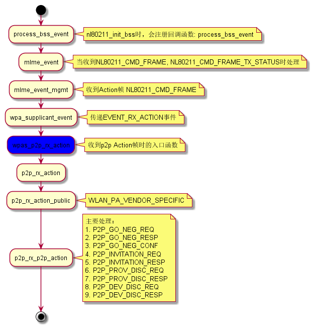
- Action帧的发送
Action帧发送后，Driver会反馈发送的状态，即发送成功与否。
通过
struct p2p_cfg的回调接口：send_action， 实际注册的 函数为：wpas_send_action, 该函数会调用wpas_send_action_work或offchannel_send_action，并注册了回调函数 :wpas_p2p_send_action_tx_status， 通过该接口，将发送Action帧 的结果反馈上来。底层是通过EVENT_TX_STATUS消息来通知的，通 过调用offchannel_send_action_tx_status来回调注册的函数。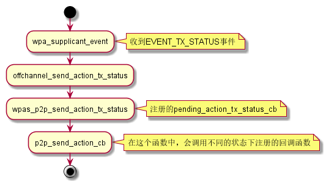
- p2p协商时信道的选择
- 在获取peer信息前，选择oper Channel
p2p_prepare_channel
- 在获取peer信息后， 调用如下函数进行优化
p2p_reselect_channel
- 在获取peer信息前，选择oper Channel
- 处理Probe Request
在p2p过程中，Probe Request是在上层处理的，处理函数有：
wpas_p2p_probe_req_rx
当p2p停止listen的时候，进入p2p find阶段会临时禁用probe request reporting.
2.2.4 p2p管理
当 wpa_s->drv_flags & WPA_DRIVER_FLAGS_P2P_MGMT 为真时，代表相关的P2P
管理操作会由Driver去实现。上层对P2P的一些操作，最终会透过netlink发
送给Driver。
当然，如果Driver并没有实现p2p管理的相关工作，则会在
wpa_supplicant 这层来做。目前从代码看来，p2p管理相关的工作没有放到Driver中去做。
wpa_supplicant 在文件 p2p_supplicant.c 这个文件中注册了许多p2p管理相关
的函数接口。
2.2.5 Go创建
入口函数： wpa_driver_nl80211_set_ap
Ignore deauth event in AP mode
两个相关的NL80211命令：
NL80211_CMD_NEW_BEACONNL80211_CMD_SET_BSS
2.2.6 socket control interface
p2p_findCommand Description p2p_find[timeout (seconds)] [type <social \ progressive>] [dev_id=] [delay=]Enables discovery – start sending probe request frames p2p_find默认的行为是开始做一次全信道扫描，然后扫描特定的信道。 参数说明如下：
- 当type=social时，只会扫描社会信息，会跳过第一次全信道扫描。
- 当type=progressive时，行为类似默认情况下的行为，只不过在每一次 Search状态的回合中，依次扫描一个信道。
- dev_id : 可以指定单个要扫描的对端设备。
- delay: 是一个延时值。
当接受到 p2p_find 命令时，会进入入口函数： p2p_ctrl_find ，
此时会决定两个参数：
- 扫描的类型
- 延时扫描的时间，即等待多久后，进行p2p find的动作。
接下来会进入 wpas_p2p_find 函数，如果当前的SSID的模式为
WPAS_MODE_P2P_GO 或 WPAS_MODE_P2P_GROUP_FORMATION ， 会停止
p2p find的动作。
然后，会清掉一些未决的Action帧的传输动作。 如果P2P管理的功能实现
在 driver 层，则直接进入 函数： wpa_drv_p2p_find ， 通过
NL80211触发Driver直接 p2p find动作。 否则，则会进入 p2p_find
， 在此之前，会取消规划的扫描动作。
这些函数会准备执行 p2p find 所需要的一些参数 ，然后调用到 p2p->cfg->p2p_scan 回调接口。 它有三种返回值：
- 0: 扫描请求发送成功，设置扫描超时时间。
- 1: 扫描请求失败，会等待上一个扫描动作完成后，再进行尝试，当前
P2P状态机置为：
P2P_SEARCH_WHEN_READY, 表示有个未决的扫描动 作。相关函数：p2p_search_pendingp2p_other_scan_completed - 其他值： 扫描请求失败。
在 p2p_supplicant.c 文件中，定义了p2p 初始化的函数，里面有定义
对应的回调接口： wpas_p2p_scan 。 在该函数中，会通过
wpa_drv_scan 将扫描请求发送给Driver， 并指定扫描结果的处理回回
调接口： wpas_p2p_scan_res_handler
p2p_stop_findCommand Description p2p_stop_findStops discovery, or whatever you are doing (listen mode, connection process etc.) p2p_connectCommand Description GO_intent– initiate connection to another device (using entered group intent)p2p_connect<device address> <PBC \ PIN> [GO_intent=<0-15> \ auth \ join]Auth – WPS authorize incoming connection Join – connect to an existing GO No input – initiate connection using default GO intent P2P_CONNECT 56:8c:a0:91:0f:23 pbc persistent join
这个命令直接会入口函数是
p2p_ctrl_connect， 在解析p2p_connect命令的参数后， 会进入wpas_p2p_connect，里面会 执行一些重要的步骤：wpas_p2p_add_group_interface创建P2P虚拟接口wpas_p2p_auth_go_neg只确认协商时使用的信息wpas_p2p_start_go_neg开始 GO NEGOTIATION。
在wps完成后，会启动重新关联过程,标记所有网络为禁用状态，从而触发 Roaming过程：
wpas_wps_temp_disable(wpa_s, selected); wpa_s->reassociate = 1;
当一个设备(GC))发出 p2p connect连接请求后， 另一个设备(GO)会弹出一个对话 框出来，在没有接受之前， GC不能与GO进行关联，
wpa_supplicant会出现“ skip - WPS AP without active PBC Registrar”这个日志， 即GO作为WPS Registar的角色还未被激活，当用户接受后，则会激活WPS Registar的角色， 最终是通过wps_registrar_button_pushed来激活 的。p2p_listenCommand Description P2p_listen[timeout (seconds)]Enable listen mode Listen状态可能不会立即开始，因为可能会有其他未决的操作正在进行， 一旦进入Listen状态，会调用p2p_listen_cb()函数通知P2P模块。一旦退 出Listen状态，会调用p2p_listen_end()函数通知P2P模块已经不再处于 Listen状态了。
p2p_listen流程分析： 应用程序进入Miracast后，一般会调用p2p_listen命令，监听附近的 WFD Source设备， 大致流程如下：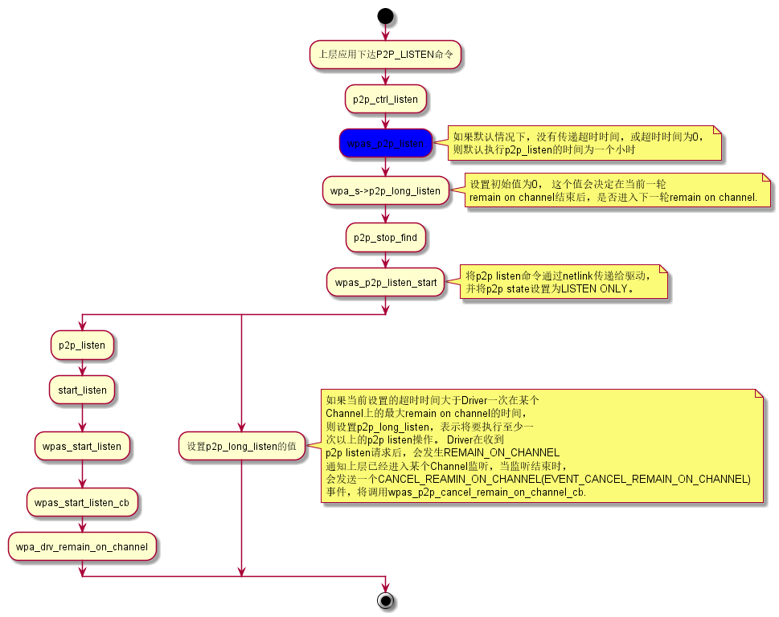
在监听的过程，当驱动收到Probe Request请求后，会通过
cfg80211_rx_mgmt上报给内核，并最终通知给wpa_supplicant， 调用路径为：p2p_group_removeCommand Description P2p_group_remove<interface>Remove device from group, return to device mode if acting as GO or autonomous GO p2p_group_addCommand Description P2p_group_addBecome an autonomous GO P2p_group_remove<interface>Remove device from group, return to device mode if acting as GO or autonomous GO p2p_prov_discP2P_PROV_DISC 12:bf:48:cd:ab:7d pbc
p2p_get_passphrasep2p_serv_disc_reqp2p_serv_disc_cancel_reqp2p_serv_disc_respp2p_service_updatep2p_serv_disc_externalp2p_service_flushp2p_service_addp2p_service_delp2p_rejectp2p_inviteCommand Description p2p_invite<cmd> [address]Send invitation to device p2p_peersCommand Description P2p_peers[discovered]Shows list of discovered peers (with ‘discovered’ – shows only fully discovered peers) p2p_peerCommand Description P2p_peer<address>Show detailed information about discovered peers p2p_setp2p_flushCommand Description P2p_flushFlush p2p_state, and clears the discovered peer list p2p_presence_reqp2p_ext_listenp2p_group_idleMaximum idle time in seconds for P2P group 当一个p2p group建立起来后，GO等待GC连接的最大等待时间，或GC发现 GO的最大超时时间。/* * How many seconds to try to reconnect to the GO when connection in P2P client * role has been lost. */ #define P2P_MAX_CLIENT_IDLE 10
group timeout相关Log：
05-25 10:42:50.650 D/wpa_supplicant( 2963): P2P: Group idle timeout reached - terminate group 05-25 10:42:50.650 D/wpa_supplicant( 2963): p2p0: Request to deauthenticate - bssid=00:00:00:00:00:00 pending_bssid=00:00:00:00:00:00 reason=3 state=SCANNING 05-25 10:42:50.651 D/wpa_supplicant( 2963): TDLS: Tear down peers 05-25 10:42:50.651 D/wpa_supplicant( 2963): p2p0: State: SCANNING -> DISCONNECTED 05-25 10:42:50.651 D/wpa_supplicant( 2963): nl80211: Set p2p0 operstate 0->0 (DORMANT) 05-25 10:42:50.651 D/wpa_supplicant( 2963): netlink: Operstate: ifindex=5 linkmode=-1 (no change), operstate=5 (IF_OPER_DORMANT) 05-25 10:42:50.651 D/wpa_supplicant( 2963): CTRL_IFACE monitor sent successfully to /data/misc/wifi/sockets/wpa_ctrl_624-2\x00 05-25 10:42:50.651 D/wpa_supplicant( 2963): EAPOL: External notification - portEnabled=0 05-25 10:42:50.651 D/wpa_supplicant( 2963): EAPOL: External notification - portValid=0 05-25 10:42:50.651 I/wpa_supplicant( 2963): P2P-GROUP-REMOVED p2p0 client reason=IDLE D/wpa_supplicant( 7409 7409): nl80211: Set supplicant port unauthorized for 00:00:00:00:00:00 I/wpa_supplicant( 7409 7409): P2P-GROUP-REMOVED p2p-p2p0-0 client reason=GO_ENDING_SESSION D/wpa_supplicant( 7409 7409): CTRL_IFACE monitor send - hexdump(len=21): 2f 74 6d 70 2f 77 70 61 5f 63 74 72 6c 5f 37 36 32 2d 32 34 00 D/wpa_supplicant( 7409 7409): P2P: Cancelled P2P group idle timeout D/wpa_supplicant( 7409 7409): P2P: Remove group interface p2p-p2p0-0
2.2.7 nl80211 (p2p)
NL80211_CMD_REMAIN_ON_CHANNELNL80211_CMD_CANCEL_REMAIN_ON_CHANNELThis indicates to the device that it should stay on a given channel for a given time, to implement a P2P listen phase. Can also be canceled, since it is also used to implement off-channel TX for group negotiation or invitation
NL80211_CMD_FRAME (previously NL80211_CMD_ACTION)传输一个管理帧。
NL80211_CMD_REGISTER_FRAME通过nl80211，用户程序可以注册接收指定类型的管理帧。
2.2.8 p2p VHT速率
p2p过程中使用VHT：
- 双方设备物理网卡要支持VHT
- p2p GO在启动时，需要配置VHT Enabled, 配置时是通过
wpa_supplicant从上层下参数到driver的。(p2p_go_vht=1,可以在配置文件中明确指定) - p2p GC在与GO连接时，需要带vht参数，即显式表明希望GO和GC关联成功后，
以VHT的速率进行数据传输（
p2p_group_add,p2p_connect,p2p_invite三个接口都可以带下来)。
函数 nl80211_set_channel 会设置Channel相关信息：HT, Channel Width
2.2.9 问题调试
- P2p Standard Group Formation
- Could not find peer or be found by peer
- Check if framework triggered p2p find phase by
P2P_FIND - If so, check if probe request/response handshake works ok(sniffer if possible)
- Check if framework triggered p2p find phase by
- Scan issues
- Check if has GO beacons and probe request from box and probe response from GO when acts as GC
- Check if box has tx beacon and RX probe request from peer when acts as GO(sniffer if possible)
- WPS handshake issues
- Check if WPS EAP handshake work ok in tcpdump log
- Need sniffer if WPS handshake not complete
- 4-way handshake issues
- Check if 4-way handshake work ok in tcpdump log
- Need sniffer if 4-way handshake not complete
- DHCP issues
- Check if DHCP handshake work OK in tcpdump log
- Need sniffer
- Could not find peer or be found by peer
- P2P persistent Group Formation
- Invitation request/response handshake work ok(need sniffer)
- 4-way handshake issues
- DHCP issues
- P2P Negotiation Failed, status = -1
在进行p2p连接测试时，出现协商失败，状态码为-1 对应信息为："FAILED; Information is currently unavailable"
表明对方还会准备好GO协商。
This code 1 is expected behavior when you have not accepted the connection on the recipient.
在Android设备，一般会弹出对话框，需要点击确认。
当状态码-1时，此时先主动发起协商的设备要等待对方发起协商请 求，当然如果在一定时间内未收到对方的协商请求，则本次协商过程将会 判定为失败。
2.3 bgscan (roaming) IAPP(Inter Access Point Protocol)
WPA_Supplicant has a module that is called 'bgscan' which features
a mode called 'simple'. This module can be configured to perform
periodic background scans when the signal level drops under a
certain level and when it finds a stronger AP during the scan it
can 'roam' when the difference between the AP's is significant
enough.
I also found that this module was compiled, present and functioning by default. The only missing piece is that the configuration line in the wpa_supplicant.conf is missing preventing the bgscan module from loading. I added the line into the section for the relevant network:
bgscan="simple:120:-75:600"
The syntax for the configuration line is as follows and it should be placed in the network section rather than the global section:
bgscan="simple:<short bgscan interval in seconds>:<signal strength threshold>:<long interval>"
My bgscan simple line implies that if the signal is stronger/better than -75db it will perform a bgscan every 10 minutes, if the signal is worse it will perform a scan every 2 minutes.
This is what a successful 'roam' looks like:
D/wpa_supplicant( 716): bgscan simple: Request a background scan D/wpa_supplicant( 716): Scan requested (ret=0) - scan timeout 30 seconds D/wpa_supplicant( 716): nl80211: Event message available D/wpa_supplicant( 716): nl80211: Scan trigger D/wpa_supplicant( 716): nl80211: Event message available D/wpa_supplicant( 716): nl80211: Scan aborted D/wpa_supplicant( 716): wlan0: Event SCAN_RESULTS (3) received D/wpa_supplicant( 716): nl80211: Associated on 2412 MHz D/wpa_supplicant( 716): nl80211: Associated with 68:7f:74:75:1c:7e D/wpa_supplicant( 716): nl80211: Received scan results (2 BSSes) D/wpa_supplicant( 716): nl80211: Survey data missing D/wpa_supplicant( 716): nl80211: Scan results indicate BSS status with 68:7f:74:75:1c:7e as associated D/wpa_supplicant( 716): wlan0: BSS: Start scan result update 527 D/wpa_supplicant( 716): wlan0: BSS: Add new id 97 BSSID 00:1e:2a:21:f7:3d SSID 'pakjebakmeel24' D/wpa_supplicant( 716): CTRL_IFACE monitor send - hexdump(len=39): 2f 64 61 74 61 2f 6d 69 73 63 2f 77 69 66 69 2f 73 6f 63 6b 65 74 73 2f 77 70 61 5f 63 74 72 6c ... D/wpa_supplicant( 716): wlan0: New scan results available D/wpa_supplicant( 716): CTRL_IFACE monitor send - hexdump(len=39): 2f 64 61 74 61 2f 6d 69 73 63 2f 77 69 66 69 2f 73 6f 63 6b 65 74 73 2f 77 70 61 5f 63 74 72 6c ... D/wpa_supplicant( 716): bgscan simple: scan result notification D/wpa_supplicant( 716): wlan0: Selecting BSS from priority group 2 D/wpa_supplicant( 716): wlan0: 0: 00:1e:2a:21:f7:3d ssid='pakjebakmeel24' wpa_ie_len=0 rsn_ie_len=20 caps=0x431 level=-71 D/wpa_supplicant( 716): wlan0: selected based on RSN IE D/wpa_supplicant( 716): wlan0: selected BSS 00:1e:2a:21:f7:3d ssid='pakjebakmeel24' D/wpa_supplicant( 716): wlan0: Considering within-ESS reassociation D/wpa_supplicant( 716): wlan0: Current BSS: 68:7f:74:75:1c:7e level=-79 D/wpa_supplicant( 716): wlan0: Selected BSS: 00:1e:2a:21:f7:3d level=-71 D/wpa_supplicant( 716): wlan0: Saving prev AP info for roaming recovery - SSID ID: 1 BSSID: 68:7f:74:75:1c:7e D/wpa_supplicant( 716): wlan0: Request association: reassociate: 0 selected: 00:1e:2a:21:f7:3d bssid: 68:7f:74:75:1c:7e pending: 00:00:00:00:00:00 wpa_state: COMPLETED I/wpa_supplicant( 716): wlan0: EPBUG: Going to authenticate
2.4 WPS
在P2P GO与GC第一次关联后，会进行WPS交互过程，成功后，会打印 "WPS-REG-SUCCESS", 之后才会有"P2P-GROUP-FORMATION-SUCCESS", "P2P-GROUP-STARTED"消息，产生的passphrase或psk作为后面的4步握手过程密 钥产生时所需要的PMK. 交互时的一些信息会透过 Association Request携带的IE信息来提供，如果底层驱动上报的 Association Request中相关的IE信息为空，则WPS过程将会终止。 在GO协议完成后，会开始WPS协商的过程。
WPS过程结束后，会调用 wpa_supplicant_eapol_cb 。
配置项 wps_strict_check 选项开启后，会严格按照WPS规范检查WPS数据
格式。
2.4.1 Enrollee
此时双方会通过 P2P 接口地址进行交互。WPS具体使用的方式有PBC或者PIN 的方式。
下面我们主要看下WPS的交互过程：
wpas_wps_add_network添加一个新的SSID， 设置其key_mgmt的值为 WPS，eap值为WSC，identity为WSC_ID_ENROLLEE。wpa_config_set(ssid, "phase1", "\"pbc=1\"", 0)设置网络参数： phase1的值。- 注册WPS协商超时处理函数 WPS超时时间为120秒。
wpas_wps_reassoc它会执行如下几个重要动作：- 如果当前有连接到某个SSID，则断开。
- 标记所有其他的网络为禁用状态，以触发重新关联动作。
- 请求一次扫描， 专门扫描GO所在的频率。 会构建WPS IE携带上Probe Request中。
- 等待扫描结果
获得扫描结果后，会通过
wpas_select_network_from_last_scan连 接GO对应的SSID。 向GO发送关联请求。 wpa_supplicant_associate向Driver发送Association Request的命令。然后调用wpa_supplicant_rsn_supp_set_config通知wpa_sm状态机配置已 经发生更改。 最后调用wpa_supplicant_initiate_eapol初始化eapol_sm配置。- 收到到Associate Response信息，
wpa_supplicant_event_assoc成功关联上GO后，开始了WPS的交互过程。 GC首先发一笔：eapol_sm_txStart将IEEE802_1X_TYPE_EAPOL_START包发出去。
2.4.2 Registar
首先看下 wpas_start_wps_go 几个主要的过程：
wpas_copy_go_neg_results复制协商后的参数信息。wpa_config_add_network添加一个网络SSID.- 配置新建的网络SSID的基本信息。
- 设置wpa_supplicant实例相关信息。
设置回调接口：
p2p_go_configured wpa_supplicant_req_scan该函数并不是要进行一次扫描，而是通过如下调用流程启动AP/GO
2.5 SME
SME was designed to be used when the driver does provide the separate authentication and association commands.
/* Driver provides separate commands for authentication and association (SME in * wpa_supplicant). */ #define WPA_DRIVER_FLAGS_SME 0x00000020
一旦 WPA_DRIVER_FLAGS_SME 这个能力项打开（前提是驱动要分别注册
cfg80211_ops 的auth/assoc回调函数 ）， 则auth/assoc组包发送的逻辑会移到wpa_supplicant这
一层来做 。
2.6 SoftAp
hostapd是一个用户空间程序，实现了AP和认证服务器的功能。通过配置文件 hostapd.conf 来修改一些Wifi参数。
2.6.1 软件构架图
interface=wlan0 driver=nl80211 ssid=woody_hostap hw_mode=g channel=6 ieee80211n=1 auth_algs=3 wpa=0 wpa_passphrase=12345678 wpa_key_mgmt=WPA-PSK wpa_pairwise=TKIP CCMP wpa_ptk_rekey=600 ##### hostapd configuration file ############################################## # Empty lines and lines starting with # are ignored # AP netdevice name (without 'ap' postfix, i.e., wlan0 uses wlan0ap for # management frames); ath0 for madwifi interface=wlan0 # In case of madwifi and nl80211 driver interfaces, an additional configuration # parameter, bridge, must be used to notify hostapd if the interface is # included in a bridge. This parameter is not used with Host AP driver. #bridge=br0 # Driver interface type (hostap/wired/madwifi/prism54/test/nl80211/bsd); # default: hostap) # Use driver=test if building hostapd as a standalone RADIUS server that does # not control any wireless/wired driver. driver=nl80211 # hostapd event logger configuration # # Two output method: syslog and stdout (only usable if not forking to # background). # # Module bitfield (ORed bitfield of modules that will be logged; -1 = all # modules): # bit 0 (1) = IEEE 802.11 # bit 1 (2) = IEEE 802.1X # bit 2 (4) = RADIUS # bit 3 (8) = WPA # bit 4 (16) = driver interface # bit 5 (32) = IAPP # bit 6 (64) = MLME # # Levels (minimum value for logged events): # 0 = verbose debugging # 1 = debugging # 2 = informational messages # 3 = notification # 4 = warning # logger_syslog=-1 logger_syslog_level=2 logger_stdout=-1 logger_stdout_level=2 # Dump file for state information (on SIGUSR1) dump_file=/tmp/hostapd.dump # Interface for separate control program. If this is specified, hostapd # will create this directory and a UNIX domain socket for listening to requests # from external programs (CLI/GUI, etc.) for status information and # configuration. The socket file will be named based on the interface name, so # multiple hostapd processes/interfaces can be run at the same time if more # than one interface is used. # /var/run/hostapd is the recommended directory for sockets and by default, # hostapd_cli will use it when trying to connect with hostapd. ctrl_interface=/var/run/hostapd # Access control for the control interface can be configured by setting the # directory to allow only members of a group to use sockets. This way, it is # possible to run hostapd as root (since it needs to change network # configuration and open raw sockets) and still allow GUI/CLI components to be # run as non-root users. However, since the control interface can be used to # change the network configuration, this access needs to be protected in many # cases. By default, hostapd is configured to use gid 0 (root). If you # want to allow non-root users to use the contron interface, add a new group # and change this value to match with that group. Add users that should have # control interface access to this group. # # This variable can be a group name or gid. #ctrl_interface_group=wheel ctrl_interface_group=0 ##### IEEE 802.11 related configuration ####################################### # SSID to be used in IEEE 802.11 management frames ssid=test # Country code (ISO/IEC 3166-1). Used to set regulatory domain. # Modify as needed to indicate country in which device is operating. # This can limit available channels and transmit power. # (default: US) #country_code=US # Enable IEEE 802.11d. This advertises the country_code and the set of allowed # channels and transmit power levels based on the regulatory limits. The # country_code setting must be configured with the correct country for # IEEE 802.11d functions. # (default: 0 = disabled) #ieee80211d=1 # Enable IEEE 802.11h. This enables the TPC and DFS services when operating # in a regulatory domain which requires them. Once enabled it will be # operational only when working in hw_mode a and in countries where it is # required. The end user should not be allowed to disable this. # The country_code setting must be configured with the correct country for # IEEE 802.11h to function. # When IEEE 802.11h is operational, the channel_policy and configured channel # settings will be ignored but will behave as though the channel_policy is # set to "3" (automatic channel selection). When IEEE 802.11h is enabled but # not operational (for example, if the radio mode is changed from "a" to "b") # the channel_policy and channel settings take effect again. # (default: 1 = enabled) #ieee80211h=1 # Operation mode (a = IEEE 802.11a, b = IEEE 802.11b, g = IEEE 802.11g, # Default: IEEE 802.11b hw_mode=g # Channel number (IEEE 802.11) # (default: 0, i.e., not set, used with channel_policy=2) channel=1 # Beacon interval in kus (1.024 ms) (default: 100; range 15..65535) beacon_int=100 # DTIM (delivery trafic information message) period (range 1..255): # number of beacons between DTIMs (1 = every beacon includes DTIM element) # (default: 2) dtim_period=2 # Maximum number of stations allowed in station table. New stations will be # rejected after the station table is full. IEEE 802.11 has a limit of 2007 # different association IDs, so this number should not be larger than that. # (default: 2007) max_num_sta=255 # RTS/CTS threshold; 2347 = disabled (default); range 0..2347 # If this field is not included in hostapd.conf, hostapd will not control # RTS threshold and 'iwconfig wlan# rts <val>' can be used to set it. rts_threshold=2347 # Fragmentation threshold; 2346 = disabled (default); range 256..2346 # If this field is not included in hostapd.conf, hostapd will not control # fragmentation threshold and 'iwconfig wlan# frag <val>' can be used to set # it. fragm_threshold=2346 # Rate configuration # Default is to enable all rates supported by the hardware. This configuration # item allows this list be filtered so that only the listed rates will be left # in the list. If the list is empty, all rates are used. This list can have # entries that are not in the list of rates the hardware supports (such entries # are ignored). The entries in this list are in 100 kbps, i.e., 11 Mbps = 110. # If this item is present, at least one rate have to be matching with the rates # hardware supports. # default: use the most common supported rate setting for the selected # hw_mode (i.e., this line can be removed from configuration file in most # cases) #supported_rates=10 20 55 110 60 90 120 180 240 360 480 540 # Basic rate set configuration # List of rates (in 100 kbps) that are included in the basic rate set. # If this item is not included, usually reasonable default set is used. #basic_rates=10 20 #basic_rates=10 20 55 110 #basic_rates=60 120 240 # Station MAC address -based authentication # Please note that this kind of access control requires a driver that uses # hostapd to take care of management frame processing and as such, this can be # used with driver=hostap or driver=nl80211, but not with driver=madwifi. # 0 = accept unless in deny list # 1 = deny unless in accept list # 2 = use external RADIUS server (accept/deny lists are searched first) macaddr_acl=0 # Accept/deny lists are read from separate files (containing list of # MAC addresses, one per line). Use absolute path name to make sure that the # files can be read on SIGHUP configuration reloads. #accept_mac_file=/etc/hostapd.accept #deny_mac_file=/etc/hostapd.deny # IEEE 802.11 specifies two authentication algorithms. hostapd can be # configured to allow both of these or only one. Open system authentication # should be used with IEEE 802.1X. # Bit fields of allowed authentication algorithms: # bit 0 = Open System Authentication # bit 1 = Shared Key Authentication (requires WEP) auth_algs=3 # Send empty SSID in beacons and ignore probe request frames that do not # specify full SSID, i.e., require stations to know SSID. # default: disabled (0) # 1 = send empty (length=0) SSID in beacon and ignore probe request for # broadcast SSID # 2 = clear SSID (ASCII 0), but keep the original length (this may be required # with some clients that do not support empty SSID) and ignore probe # requests for broadcast SSID ignore_broadcast_ssid=0 # TX queue parameters (EDCF / bursting) # default for all these fields: not set, use hardware defaults # tx_queue_<queue name>_<param> # queues: data0, data1, data2, data3, after_beacon, beacon # (data0 is the highest priority queue) # parameters: # aifs: AIFS (default 2) # cwmin: cwMin (1, 3, 7, 15, 31, 63, 127, 255, 511, 1023) # cwmax: cwMax (1, 3, 7, 15, 31, 63, 127, 255, 511, 1023); cwMax >= cwMin # burst: maximum length (in milliseconds with precision of up to 0.1 ms) for # bursting # # Default WMM parameters (IEEE 802.11 draft; 11-03-0504-03-000e): # These parameters are used by the access point when transmitting frames # to the clients. # # Low priority / AC_BK = background #tx_queue_data3_aifs=7 #tx_queue_data3_cwmin=15 #tx_queue_data3_cwmax=1023 #tx_queue_data3_burst=0 # Note: for IEEE 802.11b mode: cWmin=31 cWmax=1023 burst=0 # # Normal priority / AC_BE = best effort #tx_queue_data2_aifs=3 #tx_queue_data2_cwmin=15 #tx_queue_data2_cwmax=63 #tx_queue_data2_burst=0 # Note: for IEEE 802.11b mode: cWmin=31 cWmax=127 burst=0 # # High priority / AC_VI = video #tx_queue_data1_aifs=1 #tx_queue_data1_cwmin=7 #tx_queue_data1_cwmax=15 #tx_queue_data1_burst=3.0 # Note: for IEEE 802.11b mode: cWmin=15 cWmax=31 burst=6.0 # # Highest priority / AC_VO = voice #tx_queue_data0_aifs=1 #tx_queue_data0_cwmin=3 #tx_queue_data0_cwmax=7 #tx_queue_data0_burst=1.5 # Note: for IEEE 802.11b mode: cWmin=7 cWmax=15 burst=3.3 # # Special queues; normally not user configurable # #tx_queue_after_beacon_aifs=2 #tx_queue_after_beacon_cwmin=15 #tx_queue_after_beacon_cwmax=1023 #tx_queue_after_beacon_burst=0 # #tx_queue_beacon_aifs=2 #tx_queue_beacon_cwmin=3 #tx_queue_beacon_cwmax=7 #tx_queue_beacon_burst=1.5 # 802.1D Tag to AC mappings # WMM specifies following mapping of data frames to different ACs. This mapping # can be configured using Linux QoS/tc and sch_pktpri.o module. # 802.1D Tag 802.1D Designation Access Category WMM Designation # 1 BK AC_BK Background # 2 - AC_BK Background # 0 BE AC_BE Best Effort # 3 EE AC_VI Video # 4 CL AC_VI Video # 5 VI AC_VI Video # 6 VO AC_VO Voice # 7 NC AC_VO Voice # Data frames with no priority information: AC_BE # Management frames: AC_VO # PS-Poll frames: AC_BE # Default WMM parameters (IEEE 802.11 draft; 11-03-0504-03-000e): # for 802.11a or 802.11g networks # These parameters are sent to WMM clients when they associate. # The parameters will be used by WMM clients for frames transmitted to the # access point. # # note - txop_limit is in units of 32microseconds # note - acm is admission control mandatory flag. 0 = admission control not # required, 1 = mandatory # note - here cwMin and cmMax are in exponent form. the actual cw value used # will be (2^n)-1 where n is the value given here # wme_enabled=1 # # Low priority / AC_BK = background wme_ac_bk_cwmin=4 wme_ac_bk_cwmax=10 wme_ac_bk_aifs=7 wme_ac_bk_txop_limit=0 wme_ac_bk_acm=0 # Note: for IEEE 802.11b mode: cWmin=5 cWmax=10 # # Normal priority / AC_BE = best effort wme_ac_be_aifs=3 wme_ac_be_cwmin=4 wme_ac_be_cwmax=10 wme_ac_be_txop_limit=0 wme_ac_be_acm=0 # Note: for IEEE 802.11b mode: cWmin=5 cWmax=7 # # High priority / AC_VI = video wme_ac_vi_aifs=2 wme_ac_vi_cwmin=3 wme_ac_vi_cwmax=4 wme_ac_vi_txop_limit=94 wme_ac_vi_acm=0 # Note: for IEEE 802.11b mode: cWmin=4 cWmax=5 txop_limit=188 # # Highest priority / AC_VO = voice wme_ac_vo_aifs=2 wme_ac_vo_cwmin=2 wme_ac_vo_cwmax=3 wme_ac_vo_txop_limit=47 wme_ac_vo_acm=0 # Note: for IEEE 802.11b mode: cWmin=3 cWmax=4 burst=102 # Associate as a station to another AP while still acting as an AP on the same # channel. #assoc_ap_addr=00:12:34:56:78:9a # Static WEP key configuration # # The key number to use when transmitting. # It must be between 0 and 3, and the corresponding key must be set. # default: not set #wep_default_key=0 # The WEP keys to use. # A key may be a quoted string or unquoted hexadecimal digits. # The key length should be 5, 13, or 16 characters, or 10, 26, or 32 # digits, depending on whether 40-bit (64-bit), 104-bit (128-bit), or # 128-bit (152-bit) WEP is used. # Only the default key must be supplied; the others are optional. # default: not set #wep_key0=123456789a #wep_key1="vwxyz" #wep_key2=0102030405060708090a0b0c0d #wep_key3=".2.4.6.8.0.23" # Station inactivity limit # # If a station does not send anything in ap_max_inactivity seconds, an # empty data frame is sent to it in order to verify whether it is # still in range. If this frame is not ACKed, the station will be # disassociated and then deauthenticated. This feature is used to # clear station table of old entries when the STAs move out of the # range. # # The station can associate again with the AP if it is still in range; # this inactivity poll is just used as a nicer way of verifying # inactivity; i.e., client will not report broken connection because # disassociation frame is not sent immediately without first polling # the STA with a data frame. # default: 300 (i.e., 5 minutes) #ap_max_inactivity=300 # Enable/disable internal bridge for packets between associated stations. # # When IEEE 802.11 is used in managed mode, packets are usually send through # the AP even if they are from a wireless station to another wireless station. # This functionality requires that the AP has a bridge functionality that sends # frames back to the same interface if their destination is another associated # station. In addition, broadcast/multicast frames from wireless stations will # be sent both to the host system net stack (e.g., to eventually wired network) # and back to the wireless interface. # # The internal bridge is implemented within the wireless kernel module and it # bypasses kernel filtering (netfilter/iptables/ebtables). If direct # communication between the stations needs to be prevented, the internal # bridge can be disabled by setting bridge_packets=0. # # Note: If this variable is not included in hostapd.conf, hostapd does not # change the configuration and iwpriv can be used to set the value with # 'iwpriv wlan# param 10 0' command. If the variable is in hostapd.conf, # hostapd will override possible iwpriv configuration whenever configuration # file is reloaded. # # default: do not control from hostapd (80211.o defaults to 1=enabled) #bridge_packets=1 # Maximum allowed Listen Interval (how many Beacon periods STAs are allowed to # remain asleep). Default: 65535 (no limit apart from field size) #max_listen_interval=100 ##### IEEE 802.1X-2004 related configuration ################################## # Require IEEE 802.1X authorization #ieee8021x=1 # IEEE 802.1X/EAPOL version # hostapd is implemented based on IEEE Std 802.1X-2004 which defines EAPOL # version 2. However, there are many client implementations that do not handle # the new version number correctly (they seem to drop the frames completely). # In order to make hostapd interoperate with these clients, the version number # can be set to the older version (1) with this configuration value. #eapol_version=2 # Optional displayable message sent with EAP Request-Identity. The first \0 # in this string will be converted to ASCII-0 (nul). This can be used to # separate network info (comma separated list of attribute=value pairs); see, # e.g., RFC 4284. #eap_message=hello #eap_message=hello\0networkid=netw,nasid=foo,portid=0,NAIRealms=example.com # WEP rekeying (disabled if key lengths are not set or are set to 0) # Key lengths for default/broadcast and individual/unicast keys: # 5 = 40-bit WEP (also known as 64-bit WEP with 40 secret bits) # 13 = 104-bit WEP (also known as 128-bit WEP with 104 secret bits) #wep_key_len_broadcast=5 #wep_key_len_unicast=5 # Rekeying period in seconds. 0 = do not rekey (i.e., set keys only once) #wep_rekey_period=300 # EAPOL-Key index workaround (set bit7) for WinXP Supplicant (needed only if # only broadcast keys are used) eapol_key_index_workaround=0 # EAP reauthentication period in seconds (default: 3600 seconds; 0 = disable # reauthentication). #eap_reauth_period=3600 # Use PAE group address (01:80:c2:00:00:03) instead of individual target # address when sending EAPOL frames with driver=wired. This is the most common # mechanism used in wired authentication, but it also requires that the port # is only used by one station. #use_pae_group_addr=1 ##### Integrated EAP server ################################################### # Optionally, hostapd can be configured to use an integrated EAP server # to process EAP authentication locally without need for an external RADIUS # server. This functionality can be used both as a local authentication server # for IEEE 802.1X/EAPOL and as a RADIUS server for other devices. # Use integrated EAP server instead of external RADIUS authentication # server. This is also needed if hostapd is configured to act as a RADIUS # authentication server. eap_server=0 # Path for EAP server user database #eap_user_file=/etc/hostapd.eap_user # CA certificate (PEM or DER file) for EAP-TLS/PEAP/TTLS #ca_cert=/etc/hostapd.ca.pem # Server certificate (PEM or DER file) for EAP-TLS/PEAP/TTLS #server_cert=/etc/hostapd.server.pem # Private key matching with the server certificate for EAP-TLS/PEAP/TTLS # This may point to the same file as server_cert if both certificate and key # are included in a single file. PKCS#12 (PFX) file (.p12/.pfx) can also be # used by commenting out server_cert and specifying the PFX file as the # private_key. #private_key=/etc/hostapd.server.prv # Passphrase for private key #private_key_passwd=secret passphrase # Enable CRL verification. # Note: hostapd does not yet support CRL downloading based on CDP. Thus, a # valid CRL signed by the CA is required to be included in the ca_cert file. # This can be done by using PEM format for CA certificate and CRL and # concatenating these into one file. Whenever CRL changes, hostapd needs to be # restarted to take the new CRL into use. # 0 = do not verify CRLs (default) # 1 = check the CRL of the user certificate # 2 = check all CRLs in the certificate path #check_crl=1 # dh_file: File path to DH/DSA parameters file (in PEM format) # This is an optional configuration file for setting parameters for an # ephemeral DH key exchange. In most cases, the default RSA authentication does # not use this configuration. However, it is possible setup RSA to use # ephemeral DH key exchange. In addition, ciphers with DSA keys always use # ephemeral DH keys. This can be used to achieve forward secrecy. If the file # is in DSA parameters format, it will be automatically converted into DH # params. This parameter is required if anonymous EAP-FAST is used. # You can generate DH parameters file with OpenSSL, e.g., # "openssl dhparam -out /etc/hostapd.dh.pem 1024" #dh_file=/etc/hostapd.dh.pem # Configuration data for EAP-SIM database/authentication gateway interface. # This is a text string in implementation specific format. The example # implementation in eap_sim_db.c uses this as the UNIX domain socket name for # the HLR/AuC gateway (e.g., hlr_auc_gw). In this case, the path uses "unix:" # prefix. #eap_sim_db=unix:/tmp/hlr_auc_gw.sock # Encryption key for EAP-FAST PAC-Opaque values. This key must be a secret, # random value. It is configured as a 16-octet value in hex format. It can be # generated, e.g., with the following command: # od -tx1 -v -N16 /dev/random | colrm 1 8 | tr -d ' ' #pac_opaque_encr_key=000102030405060708090a0b0c0d0e0f # EAP-FAST authority identity (A-ID) #eap_fast_a_id=test server # EAP-SIM and EAP-AKA protected success/failure indication using AT_RESULT_IND # (default: 0 = disabled). #eap_sim_aka_result_ind=1 # Trusted Network Connect (TNC) # If enabled, TNC validation will be required before the peer is allowed to # connect. Note: This is only used with EAP-TTLS and EAP-FAST. If any other # EAP method is enabled, the peer will be allowed to connect without TNC. #tnc=1 ##### IEEE 802.11f - Inter-Access Point Protocol (IAPP) ####################### # Interface to be used for IAPP broadcast packets #iapp_interface=eth0 ##### RADIUS client configuration ############################################# # for IEEE 802.1X with external Authentication Server, IEEE 802.11 # authentication with external ACL for MAC addresses, and accounting # The own IP address of the access point (used as NAS-IP-Address) own_ip_addr=127.0.0.1 # Optional NAS-Identifier string for RADIUS messages. When used, this should be # a unique to the NAS within the scope of the RADIUS server. For example, a # fully qualified domain name can be used here. # When using IEEE 802.11r, nas_identifier must be set and must be between 1 and # 48 octets long. #nas_identifier=ap.example.com # RADIUS authentication server #auth_server_addr=127.0.0.1 #auth_server_port=1812 #auth_server_shared_secret=secret # RADIUS accounting server #acct_server_addr=127.0.0.1 #acct_server_port=1813 #acct_server_shared_secret=secret # Secondary RADIUS servers; to be used if primary one does not reply to # RADIUS packets. These are optional and there can be more than one secondary # server listed. #auth_server_addr=127.0.0.2 #auth_server_port=1812 #auth_server_shared_secret=secret2 # #acct_server_addr=127.0.0.2 #acct_server_port=1813 #acct_server_shared_secret=secret2 # Retry interval for trying to return to the primary RADIUS server (in # seconds). RADIUS client code will automatically try to use the next server # when the current server is not replying to requests. If this interval is set, # primary server will be retried after configured amount of time even if the # currently used secondary server is still working. #radius_retry_primary_interval=600 # Interim accounting update interval # If this is set (larger than 0) and acct_server is configured, hostapd will # send interim accounting updates every N seconds. Note: if set, this overrides # possible Acct-Interim-Interval attribute in Access-Accept message. Thus, this # value should not be configured in hostapd.conf, if RADIUS server is used to # control the interim interval. # This value should not be less 600 (10 minutes) and must not be less than # 60 (1 minute). #radius_acct_interim_interval=600 # Dynamic VLAN mode; allow RADIUS authentication server to decide which VLAN # is used for the stations. This information is parsed from following RADIUS # attributes based on RFC 3580 and RFC 2868: Tunnel-Type (value 13 = VLAN), # Tunnel-Medium-Type (value 6 = IEEE 802), Tunnel-Private-Group-ID (value # VLANID as a string). vlan_file option below must be configured if dynamic # VLANs are used. # 0 = disabled (default) # 1 = option; use default interface if RADIUS server does not include VLAN ID # 2 = required; reject authentication if RADIUS server does not include VLAN ID #dynamic_vlan=0 # VLAN interface list for dynamic VLAN mode is read from a separate text file. # This list is used to map VLAN ID from the RADIUS server to a network # interface. Each station is bound to one interface in the same way as with # multiple BSSIDs or SSIDs. Each line in this text file is defining a new # interface and the line must include VLAN ID and interface name separated by # white space (space or tab). #vlan_file=/etc/hostapd.vlan # Interface where 802.1q tagged packets should appear when a RADIUS server is # used to determine which VLAN a station is on. hostapd creates a bridge for # each VLAN. Then hostapd adds a VLAN interface (associated with the interface # indicated by 'vlan_tagged_interface') and the appropriate wireless interface # to the bridge. #vlan_tagged_interface=eth0 ##### RADIUS authentication server configuration ############################## # hostapd can be used as a RADIUS authentication server for other hosts. This # requires that the integrated EAP server is also enabled and both # authentication services are sharing the same configuration. # File name of the RADIUS clients configuration for the RADIUS server. If this # commented out, RADIUS server is disabled. #radius_server_clients=/etc/hostapd.radius_clients # The UDP port number for the RADIUS authentication server #radius_server_auth_port=1812 # Use IPv6 with RADIUS server (IPv4 will also be supported using IPv6 API) #radius_server_ipv6=1 ##### WPA/IEEE 802.11i configuration ########################################## # Enable WPA. Setting this variable configures the AP to require WPA (either # WPA-PSK or WPA-RADIUS/EAP based on other configuration). For WPA-PSK, either # wpa_psk or wpa_passphrase must be set and wpa_key_mgmt must include WPA-PSK. # For WPA-RADIUS/EAP, ieee8021x must be set (but without dynamic WEP keys), # RADIUS authentication server must be configured, and WPA-EAP must be included # in wpa_key_mgmt. # This field is a bit field that can be used to enable WPA (IEEE 802.11i/D3.0) # and/or WPA2 (full IEEE 802.11i/RSN): # bit0 = WPA # bit1 = IEEE 802.11i/RSN (WPA2) (dot11RSNAEnabled) #wpa=1 # WPA pre-shared keys for WPA-PSK. This can be either entered as a 256-bit # secret in hex format (64 hex digits), wpa_psk, or as an ASCII passphrase # (8..63 characters) that will be converted to PSK. This conversion uses SSID # so the PSK changes when ASCII passphrase is used and the SSID is changed. # wpa_psk (dot11RSNAConfigPSKValue) # wpa_passphrase (dot11RSNAConfigPSKPassPhrase) #wpa_psk=0123456789abcdef0123456789abcdef0123456789abcdef0123456789abcdef #wpa_passphrase=secret passphrase # Optionally, WPA PSKs can be read from a separate text file (containing list # of (PSK,MAC address) pairs. This allows more than one PSK to be configured. # Use absolute path name to make sure that the files can be read on SIGHUP # configuration reloads. #wpa_psk_file=/etc/hostapd.wpa_psk # Set of accepted key management algorithms (WPA-PSK, WPA-EAP, or both). The # entries are separated with a space. # (dot11RSNAConfigAuthenticationSuitesTable) #wpa_key_mgmt=WPA-PSK WPA-EAP # Set of accepted cipher suites (encryption algorithms) for pairwise keys # (unicast packets). This is a space separated list of algorithms: # CCMP = AES in Counter mode with CBC-MAC [RFC 3610, IEEE 802.11i/D7.0] # TKIP = Temporal Key Integrity Protocol [IEEE 802.11i/D7.0] # Group cipher suite (encryption algorithm for broadcast and multicast frames) # is automatically selected based on this configuration. If only CCMP is # allowed as the pairwise cipher, group cipher will also be CCMP. Otherwise, # TKIP will be used as the group cipher. # (dot11RSNAConfigPairwiseCiphersTable) # Pairwise cipher for WPA (v1) (default: TKIP) #wpa_pairwise=TKIP CCMP # Pairwise cipher for RSN/WPA2 (default: use wpa_pairwise value) #rsn_pairwise=CCMP # Time interval for rekeying GTK (broadcast/multicast encryption keys) in # seconds. (dot11RSNAConfigGroupRekeyTime) #wpa_group_rekey=600 # Rekey GTK when any STA that possesses the current GTK is leaving the BSS. # (dot11RSNAConfigGroupRekeyStrict) #wpa_strict_rekey=1 # Time interval for rekeying GMK (master key used internally to generate GTKs # (in seconds). #wpa_gmk_rekey=86400 # Enable IEEE 802.11i/RSN/WPA2 pre-authentication. This is used to speed up # roaming be pre-authenticating IEEE 802.1X/EAP part of the full RSN # authentication and key handshake before actually associating with a new AP. # (dot11RSNAPreauthenticationEnabled) #rsn_preauth=1 # # Space separated list of interfaces from which pre-authentication frames are # accepted (e.g., 'eth0' or 'eth0 wlan0wds0'. This list should include all # interface that are used for connections to other APs. This could include # wired interfaces and WDS links. The normal wireless data interface towards # associated stations (e.g., wlan0) should not be added, since # pre-authentication is only used with APs other than the currently associated # one. #rsn_preauth_interfaces=eth0 # peerkey: Whether PeerKey negotiation for direct links (IEEE 802.11e) is # allowed. This is only used with RSN/WPA2. # 0 = disabled (default) # 1 = enabled #peerkey=1 # ieee80211w: Whether management frame protection is enabled # 0 = disabled (default) # 1 = optional # 2 = required #ieee80211w=0 ##### IEEE 802.11r configuration ############################################## # Mobility Domain identifier (dot11FTMobilityDomainID, MDID) # MDID is used to indicate a group of APs (within an ESS, i.e., sharing the # same SSID) between which a STA can use Fast BSS Transition. # 2-octet identifier as a hex string. #mobility_domain=a1b2 # PMK-R0 Key Holder identifier (dot11FTR0KeyHolderID) # 1 to 48 octet identifier. # This is configured with nas_identifier (see RADIUS client section above). # Default lifetime of the PMK-RO in minutes; range 1..65535 # (dot11FTR0KeyLifetime) #r0_key_lifetime=10000 # PMK-R1 Key Holder identifier (dot11FTR1KeyHolderID) # 6-octet identifier as a hex string. #r1_key_holder=000102030405 # Reassociation deadline in time units (TUs / 1.024 ms; range 1000..65535) # (dot11FTReassociationDeadline) #reassociation_deadline=1000 # List of R0KHs in the same Mobility Domain # format: <MAC address> <NAS Identifier> <128-bit key as hex string> # This list is used to map R0KH-ID (NAS Identifier) to a destination MAC # address when requesting PMK-R1 key from the R0KH that the STA used during the # Initial Mobility Domain Association. #r0kh=02:01:02:03:04:05 r0kh-1.example.com 000102030405060708090a0b0c0d0e0f #r0kh=02:01:02:03:04:06 r0kh-2.example.com 00112233445566778899aabbccddeeff # And so on.. One line per R0KH. # List of R1KHs in the same Mobility Domain # format: <MAC address> <R0KH-ID> <128-bit key as hex string> # This list is used to map R1KH-ID to a destination MAC address when sending # PMK-R1 key from the R0KH. This is also the list of authorized R1KHs in the MD # that can request PMK-R1 keys. #r1kh=02:01:02:03:04:05 02:11:22:33:44:55 000102030405060708090a0b0c0d0e0f #r1kh=02:01:02:03:04:06 02:11:22:33:44:66 00112233445566778899aabbccddeeff # And so on.. One line per R1KH. # Whether PMK-R1 push is enabled at R0KH # 0 = do not push PMK-R1 to all configured R1KHs (default) # 1 = push PMK-R1 to all configured R1KHs whenever a new PMK-R0 is derived #pmk_r1_push=1 ##### Passive scanning ######################################################## # Scan different channels every N seconds. 0 = disable passive scanning. #passive_scan_interval=60 # Listen N usecs on each channel when doing passive scanning. # This value plus the time needed for changing channels should be less than # 32 milliseconds (i.e. 32000 usec) to avoid interruptions to normal # operations. Time needed for channel changing varies based on the used wlan # hardware. # default: disabled (0) #passive_scan_listen=10000 # Passive scanning mode: # 0 = scan all supported modes (802.11a/b/g/Turbo) (default) # 1 = scan only the mode that is currently used for normal operations #passive_scan_mode=1 # Maximum number of entries kept in AP table (either for passive scanning or # for detecting Overlapping Legacy BSS Condition). The oldest entry will be # removed when adding a new entry that would make the list grow over this # limit. Note! Wi-Fi certification for IEEE 802.11g requires that OLBC is # enabled, so this field should not be set to 0 when using IEEE 802.11g. # default: 255 #ap_table_max_size=255 # Number of seconds of no frames received after which entries may be deleted # from the AP table. Since passive scanning is not usually performed frequently # this should not be set to very small value. In addition, there is no # guarantee that every scan cycle will receive beacon frames from the # neighboring APs. # default: 60 #ap_table_expiration_time=3600 ##### Multiple BSSID support ################################################## # # Above configuration is using the default interface (wlan#, or multi-SSID VLAN # interfaces). Other BSSIDs can be added by using separator 'bss' with # default interface name to be allocated for the data packets of the new BSS. # # hostapd will generate BSSID mask based on the BSSIDs that are # configured. hostapd will verify that dev_addr & MASK == dev_addr. If this is # not the case, the MAC address of the radio must be changed before starting # hostapd (ifconfig wlan0 hw ether <MAC addr>). # # BSSIDs are assigned in order to each BSS, unless an explicit BSSID is # specified using the 'bssid' parameter. # If an explicit BSSID is specified, it must be chosen such that it: # - results in a valid MASK that covers it and the dev_addr # - is not the same as the MAC address of the radio # - is not the same as any other explicitly specified BSSID # # Please note that hostapd uses some of the values configured for the first BSS # as the defaults for the following BSSes. However, it is recommended that all # BSSes include explicit configuration of all relevant configuration items. # #bss=wlan0_0 #ssid=test2 # most of the above items can be used here (apart from radio interface specific # items, like channel) #bss=wlan0_1 #bssid=00:13:10:95:fe:0b # ...
If you want to use the preconfigure passphrase, set the AP into
configured state instead ( wps_state=2 ).
hostapd does not touch almost any of the Data frames going through the AP. The only Data frames it uses are related to authentication and key setup (EAPOL frames, RSN pre-authentication) and if ProxyARP is enabled, some of ARP/NS/NA frames.
IEEE 802.11 functions:
- authentication (and deauthentication)
- association (reassociation, and disassociation)
- data transmission between two wireless stations
- power saving (PS) mode signaling
- frame buffering for PS stations
2.6.2 数据结构

- A
hostapd_interfaceshas at least onehostapd_iface. - A
hostapd_ifacehas at least one bss(hostapd_data) struct hapd_interfaces全局数据结构，定义了一系列公共回调函数，并统计了当前实际虚拟接 口的数量与引用。
struct hapd_interfaces { int (*reload_config)(struct hostapd_iface *iface); struct hostapd_config * (*config_read_cb)(const char *config_fname); int (*ctrl_iface_init)(struct hostapd_data *hapd); void (*ctrl_iface_deinit)(struct hostapd_data *hapd); int (*for_each_interface)(struct hapd_interfaces *interfaces, int (*cb)(struct hostapd_iface *iface, void *ctx), void *ctx); int (*driver_init)(struct hostapd_iface *iface); size_t count; int global_ctrl_sock; struct wpa_ctrl_dst *global_ctrl_dst; char *global_iface_path; char *global_iface_name; #ifndef CONFIG_NATIVE_WINDOWS gid_t ctrl_iface_group; #endif /* CONFIG_NATIVE_WINDOWS */ struct hostapd_iface **iface; size_t terminate_on_error; #ifndef CONFIG_NO_VLAN struct dynamic_iface *vlan_priv; #endif /* CONFIG_NO_VLAN */ };struct hostapd_ifaceper-interface data structure.
struct hostapd_config/** * struct hostapd_config - Per-radio interface configuration */ struct hostapd_config { struct hostapd_bss_config **bss, *last_bss; size_t num_bss; u16 beacon_int; int rts_threshold; int fragm_threshold; u8 send_probe_response; u8 channel; u8 acs; struct wpa_freq_range_list acs_ch_list; enum hostapd_hw_mode hw_mode; /* HOSTAPD_MODE_IEEE80211A, .. */ enum { LONG_PREAMBLE = 0, SHORT_PREAMBLE = 1 } preamble; int *supported_rates; int *basic_rates; const struct wpa_driver_ops *driver; char *driver_params; int ap_table_max_size; int ap_table_expiration_time; unsigned int track_sta_max_num; unsigned int track_sta_max_age; char country[3]; /* first two octets: country code as described in * ISO/IEC 3166-1. Third octet: * ' ' (ascii 32): all environments * 'O': Outdoor environemnt only * 'I': Indoor environment only */ int ieee80211d; int ieee80211h; /* DFS */ /* * Local power constraint is an octet encoded as an unsigned integer in * units of decibels. Invalid value -1 indicates that Power Constraint * element will not be added. */ int local_pwr_constraint; /* Control Spectrum Management bit */ int spectrum_mgmt_required; struct hostapd_tx_queue_params tx_queue[NUM_TX_QUEUES]; /* * WMM AC parameters, in same order as 802.1D, i.e. * 0 = BE (best effort) * 1 = BK (background) * 2 = VI (video) * 3 = VO (voice) */ struct hostapd_wmm_ac_params wmm_ac_params[4]; int ht_op_mode_fixed; u16 ht_capab; int ieee80211n; int secondary_channel; int no_pri_sec_switch; int require_ht; int obss_interval; u32 vht_capab; int ieee80211ac; int require_vht; u8 vht_oper_chwidth; u8 vht_oper_centr_freq_seg0_idx; u8 vht_oper_centr_freq_seg1_idx; #ifdef CONFIG_FST struct fst_iface_cfg fst_cfg; #endif /* CONFIG_FST */ #ifdef CONFIG_P2P u8 p2p_go_ctwindow; #endif /* CONFIG_P2P */ #ifdef CONFIG_TESTING_OPTIONS double ignore_probe_probability; double ignore_auth_probability; double ignore_assoc_probability; double ignore_reassoc_probability; double corrupt_gtk_rekey_mic_probability; int ecsa_ie_only; #endif /* CONFIG_TESTING_OPTIONS */ #ifdef CONFIG_ACS unsigned int acs_num_scans; struct acs_bias { int channel; double bias; } *acs_chan_bias; unsigned int num_acs_chan_bias; #endif /* CONFIG_ACS */ };struct hostapd_bss_config/** * struct hostapd_bss_config - Per-BSS configuration */ struct hostapd_bss_config { char iface[IFNAMSIZ + 1]; char bridge[IFNAMSIZ + 1]; char vlan_bridge[IFNAMSIZ + 1]; char wds_bridge[IFNAMSIZ + 1]; enum hostapd_logger_level logger_syslog_level, logger_stdout_level; unsigned int logger_syslog; /* module bitfield */ unsigned int logger_stdout; /* module bitfield */ int max_num_sta; /* maximum number of STAs in station table */ int dtim_period; int bss_load_update_period; int ieee802_1x; /* use IEEE 802.1X */ int eapol_version; int eap_server; /* Use internal EAP server instead of external * RADIUS server */ struct hostapd_eap_user *eap_user; char *eap_user_sqlite; char *eap_sim_db; unsigned int eap_sim_db_timeout; int eap_server_erp; /* Whether ERP is enabled on internal EAP server */ struct hostapd_ip_addr own_ip_addr; char *nas_identifier; struct hostapd_radius_servers *radius; int acct_interim_interval; int radius_request_cui; struct hostapd_radius_attr *radius_auth_req_attr; struct hostapd_radius_attr *radius_acct_req_attr; int radius_das_port; unsigned int radius_das_time_window; int radius_das_require_event_timestamp; struct hostapd_ip_addr radius_das_client_addr; u8 *radius_das_shared_secret; size_t radius_das_shared_secret_len; struct hostapd_ssid ssid; char *eap_req_id_text; /* optional displayable message sent with * EAP Request-Identity */ size_t eap_req_id_text_len; int eapol_key_index_workaround; size_t default_wep_key_len; int individual_wep_key_len; int wep_rekeying_period; int broadcast_key_idx_min, broadcast_key_idx_max; int eap_reauth_period; int erp_send_reauth_start; char *erp_domain; int ieee802_11f; /* use IEEE 802.11f (IAPP) */ char iapp_iface[IFNAMSIZ + 1]; /* interface used with IAPP broadcast * frames */ enum { ACCEPT_UNLESS_DENIED = 0, DENY_UNLESS_ACCEPTED = 1, USE_EXTERNAL_RADIUS_AUTH = 2 } macaddr_acl; struct mac_acl_entry *accept_mac; int num_accept_mac; struct mac_acl_entry *deny_mac; int num_deny_mac; int wds_sta; int isolate; int start_disabled; int auth_algs; /* bitfield of allowed IEEE 802.11 authentication * algorithms, WPA_AUTH_ALG_{OPEN,SHARED,LEAP} */ int wpa; /* bitfield of WPA_PROTO_WPA, WPA_PROTO_RSN */ int wpa_key_mgmt; #ifdef CONFIG_IEEE80211W enum mfp_options ieee80211w; int group_mgmt_cipher; /* dot11AssociationSAQueryMaximumTimeout (in TUs) */ unsigned int assoc_sa_query_max_timeout; /* dot11AssociationSAQueryRetryTimeout (in TUs) */ int assoc_sa_query_retry_timeout; #endif /* CONFIG_IEEE80211W */ enum { PSK_RADIUS_IGNORED = 0, PSK_RADIUS_ACCEPTED = 1, PSK_RADIUS_REQUIRED = 2 } wpa_psk_radius; int wpa_pairwise; int wpa_group; int wpa_group_rekey; int wpa_strict_rekey; int wpa_gmk_rekey; int wpa_ptk_rekey; int rsn_pairwise; int rsn_preauth; char *rsn_preauth_interfaces; int peerkey; #ifdef CONFIG_IEEE80211R /* IEEE 802.11r - Fast BSS Transition */ u8 mobility_domain[MOBILITY_DOMAIN_ID_LEN]; u8 r1_key_holder[FT_R1KH_ID_LEN]; u32 r0_key_lifetime; u32 reassociation_deadline; struct ft_remote_r0kh *r0kh_list; struct ft_remote_r1kh *r1kh_list; int pmk_r1_push; int ft_over_ds; #endif /* CONFIG_IEEE80211R */ char *ctrl_interface; /* directory for UNIX domain sockets */ #ifndef CONFIG_NATIVE_WINDOWS gid_t ctrl_interface_gid; #endif /* CONFIG_NATIVE_WINDOWS */ int ctrl_interface_gid_set; char *ca_cert; char *server_cert; char *private_key; char *private_key_passwd; int check_crl; unsigned int tls_session_lifetime; char *ocsp_stapling_response; char *ocsp_stapling_response_multi; char *dh_file; char *openssl_ciphers; u8 *pac_opaque_encr_key; u8 *eap_fast_a_id; size_t eap_fast_a_id_len; char *eap_fast_a_id_info; int eap_fast_prov; int pac_key_lifetime; int pac_key_refresh_time; int eap_sim_aka_result_ind; int tnc; int fragment_size; u16 pwd_group; char *radius_server_clients; int radius_server_auth_port; int radius_server_acct_port; int radius_server_ipv6; int use_pae_group_addr; /* Whether to send EAPOL frames to PAE group * address instead of individual address * (for driver_wired.c). */ int ap_max_inactivity; int ignore_broadcast_ssid; int no_probe_resp_if_max_sta; int wmm_enabled; int wmm_uapsd; struct hostapd_vlan *vlan; macaddr bssid; /* * Maximum listen interval that STAs can use when associating with this * BSS. If a STA tries to use larger value, the association will be * denied with status code 51. */ u16 max_listen_interval; int disable_pmksa_caching; int okc; /* Opportunistic Key Caching */ int wps_state; #ifdef CONFIG_WPS int wps_independent; int ap_setup_locked; u8 uuid[16]; char *wps_pin_requests; char *device_name; char *manufacturer; char *model_name; char *model_number; char *serial_number; u8 device_type[WPS_DEV_TYPE_LEN]; char *config_methods; u8 os_version[4]; char *ap_pin; int skip_cred_build; u8 *extra_cred; size_t extra_cred_len; int wps_cred_processing; int force_per_enrollee_psk; u8 *ap_settings; size_t ap_settings_len; char *upnp_iface; char *friendly_name; char *manufacturer_url; char *model_description; char *model_url; char *upc; struct wpabuf *wps_vendor_ext[MAX_WPS_VENDOR_EXTENSIONS]; int wps_nfc_pw_from_config; int wps_nfc_dev_pw_id; struct wpabuf *wps_nfc_dh_pubkey; struct wpabuf *wps_nfc_dh_privkey; struct wpabuf *wps_nfc_dev_pw; #endif /* CONFIG_WPS */ int pbc_in_m1; char *server_id; #define P2P_ENABLED BIT(0) #define P2P_GROUP_OWNER BIT(1) #define P2P_GROUP_FORMATION BIT(2) #define P2P_MANAGE BIT(3) #define P2P_ALLOW_CROSS_CONNECTION BIT(4) int p2p; #ifdef CONFIG_P2P u8 ip_addr_go[4]; u8 ip_addr_mask[4]; u8 ip_addr_start[4]; u8 ip_addr_end[4]; #endif /* CONFIG_P2P */ int disassoc_low_ack; int skip_inactivity_poll; #define TDLS_PROHIBIT BIT(0) #define TDLS_PROHIBIT_CHAN_SWITCH BIT(1) int tdls; int disable_11n; int disable_11ac; /* IEEE 802.11v */ int time_advertisement; char *time_zone; int wnm_sleep_mode; int bss_transition; /* IEEE 802.11u - Interworking */ int interworking; int access_network_type; int internet; int asra; int esr; int uesa; int venue_info_set; u8 venue_group; u8 venue_type; u8 hessid[ETH_ALEN]; /* IEEE 802.11u - Roaming Consortium list */ unsigned int roaming_consortium_count; struct hostapd_roaming_consortium *roaming_consortium; /* IEEE 802.11u - Venue Name duples */ unsigned int venue_name_count; struct hostapd_lang_string *venue_name; /* IEEE 802.11u - Network Authentication Type */ u8 *network_auth_type; size_t network_auth_type_len; /* IEEE 802.11u - IP Address Type Availability */ u8 ipaddr_type_availability; u8 ipaddr_type_configured; /* IEEE 802.11u - 3GPP Cellular Network */ u8 *anqp_3gpp_cell_net; size_t anqp_3gpp_cell_net_len; /* IEEE 802.11u - Domain Name */ u8 *domain_name; size_t domain_name_len; unsigned int nai_realm_count; struct hostapd_nai_realm_data *nai_realm_data; struct dl_list anqp_elem; /* list of struct anqp_element */ u16 gas_comeback_delay; int gas_frag_limit; u8 qos_map_set[16 + 2 * 21]; unsigned int qos_map_set_len; int osen; int proxy_arp; int na_mcast_to_ucast; #ifdef CONFIG_HS20 int hs20; int disable_dgaf; u16 anqp_domain_id; unsigned int hs20_oper_friendly_name_count; struct hostapd_lang_string *hs20_oper_friendly_name; u8 *hs20_wan_metrics; u8 *hs20_connection_capability; size_t hs20_connection_capability_len; u8 *hs20_operating_class; u8 hs20_operating_class_len; struct hs20_icon { u16 width; u16 height; char language[3]; char type[256]; char name[256]; char file[256]; } *hs20_icons; size_t hs20_icons_count; u8 osu_ssid[SSID_MAX_LEN]; size_t osu_ssid_len; struct hs20_osu_provider { unsigned int friendly_name_count; struct hostapd_lang_string *friendly_name; char *server_uri; int *method_list; char **icons; size_t icons_count; char *osu_nai; unsigned int service_desc_count; struct hostapd_lang_string *service_desc; } *hs20_osu_providers, *last_osu; size_t hs20_osu_providers_count; unsigned int hs20_deauth_req_timeout; char *subscr_remediation_url; u8 subscr_remediation_method; #endif /* CONFIG_HS20 */ u8 wps_rf_bands; /* RF bands for WPS (WPS_RF_*) */ #ifdef CONFIG_RADIUS_TEST char *dump_msk_file; #endif /* CONFIG_RADIUS_TEST */ struct wpabuf *vendor_elements; unsigned int sae_anti_clogging_threshold; int *sae_groups; char *wowlan_triggers; /* Wake-on-WLAN triggers */ #ifdef CONFIG_TESTING_OPTIONS u8 bss_load_test[5]; u8 bss_load_test_set; struct wpabuf *own_ie_override; #endif /* CONFIG_TESTING_OPTIONS */ #define MESH_ENABLED BIT(0) int mesh; int radio_measurements; int vendor_vht; char *no_probe_resp_if_seen_on; char *no_auth_if_seen_on; };struct hostapd_data/** * struct hostapd_data - hostapd per-BSS data structure */ struct hostapd_data { struct hostapd_iface *iface; struct hostapd_config *iconf; struct hostapd_bss_config *conf; int interface_added; /* virtual interface added for this BSS */ unsigned int started:1; unsigned int disabled:1; unsigned int reenable_beacon:1; u8 own_addr[ETH_ALEN]; int num_sta; /* number of entries in sta_list */ struct sta_info *sta_list; /* STA info list head */ #define STA_HASH_SIZE 256 #define STA_HASH(sta) (sta[5]) struct sta_info *sta_hash[STA_HASH_SIZE]; /* * Bitfield for indicating which AIDs are allocated. Only AID values * 1-2007 are used and as such, the bit at index 0 corresponds to AID * 1. */ #define AID_WORDS ((2008 + 31) / 32) u32 sta_aid[AID_WORDS]; const struct wpa_driver_ops *driver; void *drv_priv; void (*new_assoc_sta_cb)(struct hostapd_data *hapd, struct sta_info *sta, int reassoc); void *msg_ctx; /* ctx for wpa_msg() calls */ void *msg_ctx_parent; /* parent interface ctx for wpa_msg() calls */ struct radius_client_data *radius; u32 acct_session_id_hi, acct_session_id_lo; struct radius_das_data *radius_das; struct iapp_data *iapp; struct hostapd_cached_radius_acl *acl_cache; struct hostapd_acl_query_data *acl_queries; struct wpa_authenticator *wpa_auth; struct eapol_authenticator *eapol_auth; struct rsn_preauth_interface *preauth_iface; struct os_reltime michael_mic_failure; int michael_mic_failures; int tkip_countermeasures; int ctrl_sock; struct wpa_ctrl_dst *ctrl_dst; void *ssl_ctx; void *eap_sim_db_priv; struct radius_server_data *radius_srv; struct dl_list erp_keys; /* struct eap_server_erp_key */ int parameter_set_count; /* Time Advertisement */ u8 time_update_counter; struct wpabuf *time_adv; #ifdef CONFIG_FULL_DYNAMIC_VLAN struct full_dynamic_vlan *full_dynamic_vlan; #endif /* CONFIG_FULL_DYNAMIC_VLAN */ struct l2_packet_data *l2; struct wps_context *wps; int beacon_set_done; struct wpabuf *wps_beacon_ie; struct wpabuf *wps_probe_resp_ie; #ifdef CONFIG_WPS unsigned int ap_pin_failures; unsigned int ap_pin_failures_consecutive; struct upnp_wps_device_sm *wps_upnp; unsigned int ap_pin_lockout_time; struct wps_stat wps_stats; #endif /* CONFIG_WPS */ struct hostapd_probereq_cb *probereq_cb; size_t num_probereq_cb; void (*public_action_cb)(void *ctx, const u8 *buf, size_t len, int freq); void *public_action_cb_ctx; void (*public_action_cb2)(void *ctx, const u8 *buf, size_t len, int freq); void *public_action_cb2_ctx; int (*vendor_action_cb)(void *ctx, const u8 *buf, size_t len, int freq); void *vendor_action_cb_ctx; void (*wps_reg_success_cb)(void *ctx, const u8 *mac_addr, const u8 *uuid_e); void *wps_reg_success_cb_ctx; void (*wps_event_cb)(void *ctx, enum wps_event event, union wps_event_data *data); void *wps_event_cb_ctx; void (*sta_authorized_cb)(void *ctx, const u8 *mac_addr, int authorized, const u8 *p2p_dev_addr); void *sta_authorized_cb_ctx; void (*setup_complete_cb)(void *ctx); void *setup_complete_cb_ctx; void (*new_psk_cb)(void *ctx, const u8 *mac_addr, const u8 *p2p_dev_addr, const u8 *psk, size_t psk_len); void *new_psk_cb_ctx; /* channel switch parameters */ struct hostapd_freq_params cs_freq_params; u8 cs_count; int cs_block_tx; unsigned int cs_c_off_beacon; unsigned int cs_c_off_proberesp; int csa_in_progress; unsigned int cs_c_off_ecsa_beacon; unsigned int cs_c_off_ecsa_proberesp; /* BSS Load */ unsigned int bss_load_update_timeout; #ifdef CONFIG_P2P struct p2p_data *p2p; struct p2p_group *p2p_group; struct wpabuf *p2p_beacon_ie; struct wpabuf *p2p_probe_resp_ie; /* Number of non-P2P association stations */ int num_sta_no_p2p; /* Periodic NoA (used only when no non-P2P clients in the group) */ int noa_enabled; int noa_start; int noa_duration; #endif /* CONFIG_P2P */ #ifdef CONFIG_INTERWORKING size_t gas_frag_limit; #endif /* CONFIG_INTERWORKING */ #ifdef CONFIG_PROXYARP struct l2_packet_data *sock_dhcp; struct l2_packet_data *sock_ndisc; #endif /* CONFIG_PROXYARP */ #ifdef CONFIG_MESH int num_plinks; int max_plinks; void (*mesh_sta_free_cb)(struct sta_info *sta); struct wpabuf *mesh_pending_auth; struct os_reltime mesh_pending_auth_time; #endif /* CONFIG_MESH */ #ifdef CONFIG_SQLITE struct hostapd_eap_user tmp_eap_user; #endif /* CONFIG_SQLITE */ #ifdef CONFIG_SAE /** Key used for generating SAE anti-clogging tokens */ u8 sae_token_key[8]; struct os_reltime last_sae_token_key_update; int dot11RSNASAERetransPeriod; /* msec */ #endif /* CONFIG_SAE */ #ifdef CONFIG_TESTING_OPTIONS unsigned int ext_mgmt_frame_handling:1; unsigned int ext_eapol_frame_io:1; struct l2_packet_data *l2_test; #endif /* CONFIG_TESTING_OPTIONS */ };WifiStateMachine: (Initial State) CMD_START_AP –> setWifiApState
SoftApStartingState: CMD_TETHER_STATE_CHANGE
01-01 00:06:05.374 E/hostapd ( 1638): Configuration file: /data/misc/wifi/hostapd.conf 01-01 00:06:05.374 E/hostapd ( 1638): Configuration file: /data/misc/wifi/hostapd.conf 01-01 00:06:05.376 I/hostapd ( 1638): rfkill: Cannot open RFKILL control device 01-01 00:06:05.966 E/hostapd ( 1638): Using interface wlan0 with hwaddr 00:22:13:03:21:3c and ssid "AndroidAP" 01-01 00:06:06.271 I/hostapd ( 1638): wlan0: interface state UNINITIALIZED->ENABLED 01-01 00:06:06.271 I/hostapd ( 1638): wlan0: AP-ENABLED
wifi.tethering.interface
2.6.3 主要流程分析
- hostapd初始化过程
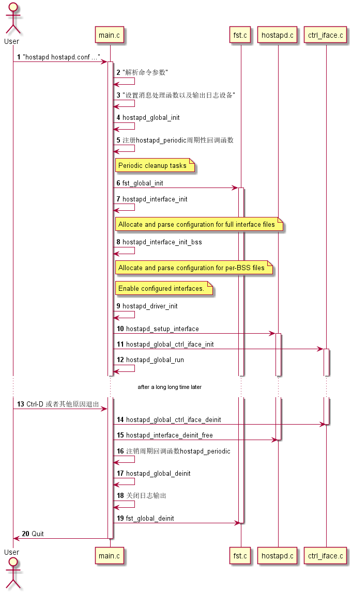
hostapd_global_init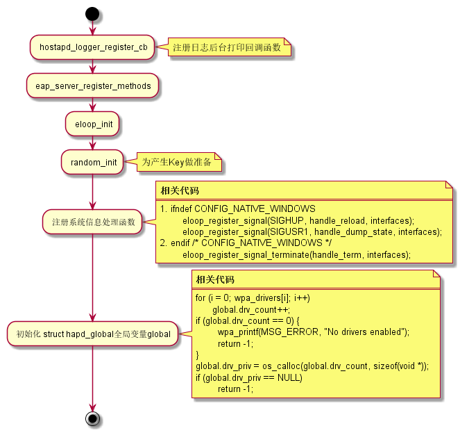
hostapd_interface_inithostapd_init: 读取配置文件的参数设置， 初始化BSS数据，返回struct hostapd_iface数据结构。hostapd_interface_init_bssRead configuration file and init BSS data
This is similar to
hostapd_interface_init(), but for a case where the configuration is used to add a single BSS instead of all BSSes for a radio.hostapd_driver_init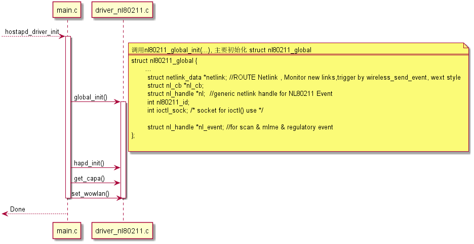
- 注册bss事件处理函数 。
- 设置接口模式为AP模式，并将接口启动。
- 注册EAPOL包的监听处理函数（发送状态以及处理接收到的 EAPOL数据包）
hostapd_setup_interface函数调用流程
在
hostapd_setup_bss函数中， 比较重要的初始化过程有：hostapd_setup_wpa_pskhostapd_set_ssidhostapd_init_wpsieee802_1x_inithostapd_setup_wpaieee802_11_set_beaconwpa_init_keys
hostapd_global_ctrl_iface_init创建control socket, 以便外部程序可以与hostapd之间进行通信， 处理外部程序发送过来的命令，向外部程序回报事件。
hostapd_global_run
- 注册管理帧
hostapd与
wpa_supplicant的一个明显的区别就是需要在用户空 间处理管理帧，默认情况下，管理帧是不会上报到用户空间的，为 止，需要向内核请求注册感兴趣的管理帧。这样，driver才会将管 理帧上报给用户空间。driver上报的管理帧通过
NL80211_CMD_FRAME命令通知，在 hostapd接口初始化时，通过nl80211_register_frame函数向内 核注册需要自己处理的管理帧： 具体的调用流程如下： - 管理帧的处理
当driver将注册的管理帧送上来时，hostapd会进行相应的处理
响应的Action帧通过
NL80211_CMD_FRAME命令传递给driver去处理。- TX
- RX
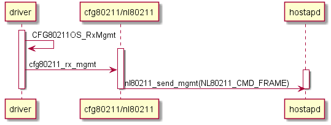
- 处理Auth Req
nl80211: RX frame freq=2412 ssi_signal=-30 stype=11 len=30 wlan1: Event RX_MGMT (20) received mgmt::auth authentication: STA=02:00:00:00:01:00 auth_alg=0 auth_transaction=1 status_code=0 wep=0 New STA ap_sta_add: register ap_handle_timer timeout for 02:00:00:00:01:00 (300 seconds - ap_max_inactivity) wlan1: STA 02:00:00:00:01:00 IEEE 802.11: authentication OK (open system) wlan1: STA 02:00:00:00:01:00 MLME: MLME-AUTHENTICATE.indication(02:00:00:00:01:00, OPEN_SYSTEM) wlan1: STA 02:00:00:00:01:00 MLME: MLME-DELETEKEYS.request(02:00:00:00:01:00) authentication reply: STA=02:00:00:00:01:00 auth_alg=0 auth_transaction=2 resp=0 (IE len=0) nl80211: send_mlme - noack=0 freq=0 no_cck=0 offchanok=0 wait_time=0 fc=0xb0 nlmode=3 nl80211: send_mlme -> send_frame nl80211: send_frame - Use bss->freq=2412 nl80211: send_frame -> send_frame_cmd nl80211: CMD_FRAME freq=2412 wait=0 no_cck=0 no_ack=0 offchanok=0 CMD_FRAME - hexdump(len=30): b0 00 00 00 02 00 00 00 01 00 02 00 00 00 00 00 02 00 00 00 00 00 00 00 00 00 02 00 00 00 nl80211: Frame TX command accepted; cookie 0xf055a180 nl80211: Event message available nl80211: Drv Event 60 (NL80211_CMD_FRAME_TX_STATUS) received for wlan1 nl80211: MLME event 60 (NL80211_CMD_FRAME_TX_STATUS) on wlan1(02:00:00:00:00:00) A1=02:00:00:00:01:00 A2=02:00:00:00:00:00 nl80211: MLME event frame - hexdump(len=30): b0 00 3a 01 02 00 00 00 01 00 02 00 00 00 00 00 02 00 00 00 00 00 50 04 00 00 02 00 00 00 nl80211: Frame TX status event wlan1: Event TX_STATUS (18) received mgmt::auth cb wlan1: STA 02:00:00:00:01:00 IEEE 802.11: authenticated
- TX
- DFS
DFS处理的入口函数为：
hostapd_handle_dfs
如果DFS处理的逻辑放在驱动里面，则入口函数为：
hostapd_handle_dfs_offload
2.6.4 VLAN client
vlan_init
2.6.5 问题拾遗(仅供参考)
- Query regarding nl80211 support in hostapd(about
NEED_AP_MLME)问题描述：
We are planning to add AP support in open source mwifiex driver and use hostapd application.
We want the compilation flag "
NEED_AP_MLME" in hostapd to be disabled because our FW takes care of MLME.I observed that "
NEED_AP_MLME" flag is by default getting enabled when we sayCONFIG_DRIVER_NL80211=yin configuration file. Can we use NL80211 support in hostapd with "NEED_AP_MLME" flag disabled?问题回答（Jouni Malinen at the year of 2011）
This needs to be done at run time, not compile time.. In other words, the driver will somehow need to advertise over nl80211 that is implement MLME/SME for AP mode.
Currently, nl80211 implementation in hostapd assumes that the driver does not implement MLME/SME. This needs to be extended to check driver capabilities (the information mentioned above) and make hostapd decide at run time whether to use the internal MLME/SME or not.
2.7 WDS
Wireless Distribution System.
NOTES:Same channel, Encryption KEY of WDS link
帧格式：
WDS Modes:
- Bridge (Ap without beacon sending)
- Repeater (Ap with beacon sending)
No Loop Topology:
2.7.1 Setting up a WDS peer
WDS是IEEE 802.11的一个非标准扩展。 由于它是一个非标准扩展，各家芯 片厂商的驱动和固件实现都不一样，无法做到兼容，所以为了使用WDS， AP 和Repeater等无线设备的硬件和软件必须相同，以保证兼容。（不能是AP属 于一个厂商，Repeater来自另外一个厂商）。
创建一个WDS Peer的命令如下：
iw phy phy0 interface add wds0 type wds iw dev wds0 set peer <MAC address>
为了能让WDS功能正常工作， 驱动必须实现cfg80211的一个回调函数：
set_wds_peer() 。 由于mac80211已经实现了该回调函数，所以对应的基
于mac80211的驱动只需要支持创建WDS类型的接口即可。 当WDS功能启用时，
TX数据时，会将802.11帧的头部的第一个地址换成peer的地址。
2.7.2 Using 4-address for AP and client mode
In some situations it might be useful to run a network with an Access Point and multiple clients, but with each client bridged to a network behind it. For this to work, both the client and the AP need to transmit 4-address frames, containing both source and destination MAC addresses.
Linux wireless has support for 4-address mode for AP and STAs but each driver needs to define this capability explicitly. All mac80211 drivers support 4-address mode if AP or STA modes of operation are supported respectively.
On the AP side you can enable 4-address frames for individual clients by isolating them in separate AP VLANs which are configured in 4-address mode. Such an AP VLAN will be limited to one client only, and this client will be used as the destination for all traffic on its interface, regardless of the destination MAC address in the packet headers.
hostapd启动时， wds_sta 必须置为1. 对于AP端时，驱动必须支持
NL80211_IFTYPE_AP_VLAN 接口类型，以及 wiphy flag
WIPHY_FLAG_4ADDR_AP 必须置起。 对于Client端，驱动必须支持
NL80211_IFTYPE_STATION 以及wiphy flag WIPHY_FLAG_4ADDR_STATION
必须置起。
2.7.3 Setting Up WDS
- On AP side, when writing hostapd configuration file, make sure
to add:
wds_sta=1 wds_bridge=br0
When
4-addressenabled WDS client connects, an interface appears with a name ofwlan0.sta1(I am assuming additional interfaces will appear aswlan0.sta2and so on if more 4-address enabled clients connect).The
wds_bridgeline in the hostapd configuration file will automatically add the wlan0.sta to your nominated bridge, e.g. br0. Alternatively, you can always dobrctl addifand so on.As one would hope, non 4-address clients continue to work as normal and co-exist with 4-address clients.
- On STA side, as specified in documentation, the interface has
to be brought up with 4addr on option, e.g.
iw phy phy0 interface add wlan_sta0 type station 4addr on
Bridge the 4-addr mode client interface (which is now connected to AP side) wlan_sta0 to AP, e.g.
brctl addif br0 wlan_sta0 wlan0
Make sure you disable DHCP on this device as DHCP is already enabled on AP side and remember STA is simply a layer 2 device now.
Reference:
- Simple WDS without security between WDS peers, use recommendations on https://wireless.wiki.kernel.org/en/users/documentation/iw#setting_up_a_wds_peer
- Not-so simple WDS, where WDS link is secured by the fact that it is really a modified STA-AP link (with all supported authentication options available), use recommendations on https://wireless.wiki.kernel.org/en/users/documentation/iw#using_4-address_for_ap_and_client_mode .
3 测试框架
wpa_supplicant 自带了一套测试框架，用于测试不同的CASE， 依赖于一个
虚拟的基于mac80211网络驱动 mac80211_hwsim ，它可以虚拟出一些无线网
络设备出来供模拟测试使用。
3.1 环境准备
- 首先确保
mac80211_hwsim网络驱动有编译进内核CONFIG_MAC80211_HWSIM=m
- 加载驱动，测试模块能否正常加载
sudo modprobe mac80211_hwsim
- 按如下步骤编译相关文件
测试框架的代码在 tests/hwsim/ 目录下，在当前目录下执行如下操作：
cd ../../wpa_supplicant cp ../tests/hwsim/example-wpa_supplicant.config .config make clean make cd ../hostapd cp ../tests/hwsim/example-hostapd.config .config make clean make hostapd hlr_auc_gw cd ../wlantest make clean make
- 按照该目录下的
example_setup.txt文件描述的步骤验证测试环境是否 OK。cd hostap/tests/hwsim ./build.sh # load mac80211_hwsim and start test software sudo ./start.sh # run a single test case ap_open sudo ./run-tests.py ap_open
- 执行测试
- 编写一个测试程序
文件名必须以
test_*开头# wpa_supplicant control interface # Copyright (c) 2014, Qualcomm Atheros, Inc. # # This software may be distributed under the terms of the BSD license. # See README for more details. import logging logger = logging.getLogger() import os import socket import subprocess import time import thread import hostapd import hwsim_utils from hwsim import HWSimRadio from wpasupplicant import WpaSupplicant from utils import alloc_fail from test_wpas_ap import wait_ap_ready # ## Test wpasupplicant # def test_fyj_test1(dev): """wpa_supplicant: a simple test """ wpas = WpaSupplicant("wlan0") wpas.request("SCAN_RESULTS") wpas.dump_monitor() logger.info("Test Finished!!") def test_fyj_test2(dev, apdev): hapd = hostapd.add_ap(apdev[0]['ifname'], { "ssid": "open" }) dev[0].connect("open", key_mgmt="NONE", scan_freq="2412", bg_scan_period="0") # ev = hapd.wait_event([ "AP-STA-CONNECTED" ], timeout=5) # if ev is None: # raise Exception("No connection event received from hostapd") #hwsim_utils.test_connectivity(dev[0], hapd) - 运行一个测试
可以通过如下命令执行一个测试程序：
sudo ./run_tests fyj_test1 sudo ./run_tests fyj_test2
- 编写一个测试程序
3.2 p2p问题分析常见函数
wpas_p2p_send_action_tx_statusAction帧发送出去后，从驱动反馈发送状态时的回调函数。p2p_send_action_cb由上述标记的函数调用。
3.3 一般网络连接问题常见函数
wpa_supplicant_associatewpa_s->connect_work = work;
3.4 wpa_supplicant 使用回调的两个函数
bss->nl_cbprocess_bss_event
global->nl_cbprocess_global_event
4 代码修改参考
4.1 add a conf parameter to start a GO as HT40 if allowed
When specified in the conf file this parameter will make all invocations of p2p_group_add and p2p_connect behave as if "ht40" has been specified on the command line. This shouldn't do harm since regulatory constraints and driver capabilities are consulted anyway before starting HT40 mode.
---
wpa_supplicant/config.c | 1 +
wpa_supplicant/config.h | 10 ++++++++++
wpa_supplicant/config_file.c | 2 ++
wpa_supplicant/ctrl_iface.c | 4 ++--
4 files changed, 15 insertions(+), 2 deletions(-)
diff --git a/wpa_supplicant/config.c b/wpa_supplicant/config.c
index be21029..3f64b03 100644
--- a/wpa_supplicant/config.c
+++ b/wpa_supplicant/config.c
@@ -3000,6 +3000,7 @@ static const struct global_parse_data global_fields[] = {
{ INT_RANGE(p2p_intra_bss, 0, 1), CFG_CHANGED_P2P_INTRA_BSS },
{ INT(p2p_group_idle), 0 },
{ FUNC(p2p_pref_chan), CFG_CHANGED_P2P_PREF_CHAN },
+ { INT(p2p_go_ht40), 0 },
#endif /* CONFIG_P2P */
{ FUNC(country), CFG_CHANGED_COUNTRY },
{ INT(bss_max_count), 0 },
diff --git a/wpa_supplicant/config.h b/wpa_supplicant/config.h
index b889ab8..9cf5468 100644
--- a/wpa_supplicant/config.h
+++ b/wpa_supplicant/config.h
@@ -747,6 +747,16 @@ struct wpa_config {
* matching network block
*/
int auto_interworking;
+
+ /**
+ * p2p_go_ht40 - Default mode for HT40 enable when operating as GO.
+ *
+ * This will take effect for p2p_group_add and p2p_connect. Note that
+ * regulatory constraints and driver capabilities are consulted anyway,
+ * so setting it to 1 can't do real harm
+ * By default: 0 (disabled)
+ */
+ int p2p_go_ht40;
};
diff --git a/wpa_supplicant/config_file.c b/wpa_supplicant/config_file.c
index 531957a..bd9c17f 100644
--- a/wpa_supplicant/config_file.c
+++ b/wpa_supplicant/config_file.c
@@ -868,6 +868,8 @@ static void wpa_config_write_global(FILE *f, struct wpa_config *config)
}
fprintf(f, "\n");
}
+ if (config->p2p_go_ht40)
+ fprintf(f, "p2p_go_ht40=%u\n", config->p2p_go_ht40);
#endif /* CONFIG_P2P */
if (config->country[0] && config->country[1]) {
fprintf(f, "country=%c%c\n",
diff --git a/wpa_supplicant/ctrl_iface.c b/wpa_supplicant/ctrl_iface.c
index ba2edff..c9c6826 100644
--- a/wpa_supplicant/ctrl_iface.c
+++ b/wpa_supplicant/ctrl_iface.c
@@ -3117,7 +3117,7 @@ static int p2p_ctrl_connect(struct wpa_supplicant *wpa_s, char *cmd,
auth = os_strstr(pos, " auth") != NULL;
automatic = os_strstr(pos, " auto") != NULL;
pd = os_strstr(pos, " provdisc") != NULL;
- ht40 = os_strstr(pos, " ht40") != NULL;
+ ht40 = (os_strstr(cmd, "ht40") != NULL) || wpa_s->conf->p2p_go_ht40;
pos2 = os_strstr(pos, " go_intent=");
if (pos2) {
@@ -3624,7 +3624,7 @@ static int p2p_ctrl_group_add(struct wpa_supplicant *wpa_s, char *cmd)
if (pos)
freq = atoi(pos + 5);
- ht40 = os_strstr(cmd, "ht40") != NULL;
+ ht40 = (os_strstr(cmd, "ht40") != NULL) || wpa_s->conf->p2p_go_ht40;
if (os_strncmp(cmd, "persistent=", 11) == 0)
return p2p_ctrl_group_add_persistent(wpa_s, cmd + 11, freq,
--
4.2 add 165和169信道支持
Channels 165 and 169 are part of operating class 125. Add support for these channels. 主要修改两个地方：
ieee802_11_common.cstatic int ieee80211_chan_to_freq_global(u8 op_class, u8 chan) { /* Table E-4 in IEEE Std 802.11-2012 - Global operating classes */ switch (op_class) { ... case 125: /* channels 149,153,157,161,165,169 */ if (chan < 149 || chan > 169) return -1; return 5000 + 5 * chan; ... return -1; }p2p_supplicant.cstatic const struct p2p_oper_class_map op_class[] = { ... { HOSTAPD_MODE_IEEE80211A, 125, 149, 169, 4, BW20 }, ... };
4.3 P2P: Clear the discovery state incase of deffered GO Neg response
diff --git a/src/p2p/p2p.c b/src/p2p/p2p.c
index 767706c..5d6abe3 100644
--- a/src/p2p/p2p.c
+++ b/src/p2p/p2p.c
@@ -3572,8 +3572,17 @@ static void p2p_go_neg_resp_failure_cb(struct p2p_data *p2p, int success,
struct p2p_device *dev;
dev = p2p_get_device(p2p, addr);
if (dev &&
- dev->status == P2P_SC_FAIL_INFO_CURRENTLY_UNAVAILABLE)
+ dev->status == P2P_SC_FAIL_INFO_CURRENTLY_UNAVAILABLE) {
dev->flags |= P2P_DEV_PEER_WAITING_RESPONSE;
+ if ((p2p->state == P2P_SEARCH) ||
+ (p2p->state == P2P_LISTEN_ONLY)) {
+ /* Clear our search state or Listen state since
+ * now peer is awaiting response from our side.
+ */
+ p2p_dbg(p2p, "Clear the P2P discovery state");
+ p2p_stop_find(p2p);
+ }
+ }
}
if (p2p->state == P2P_SEARCH || p2p->state == P2P_SD_DURING_FIND)
4.4 Android: P2P: Fix restriction of GO channels on A-band
diff --git a/src/p2p/p2p_go_neg.c b/src/p2p/p2p_go_neg.c
index 17fb329..bd583be 100644
--- a/src/p2p/p2p_go_neg.c
+++ b/src/p2p/p2p_go_neg.c
@@ -418,7 +418,13 @@ void p2p_reselect_channel(struct p2p_data *p2p,
/* Prefer a 5 GHz channel */
for (i = 0; i < intersection->reg_classes; i++) {
+#ifdef ANDROID_P2P
+ struct p2p_reg_class prc;
+ struct p2p_reg_class *c = &prc;
+ p2p_copy_reg_class(c, &intersection->reg_class[i]);
+#else
struct p2p_reg_class *c = &intersection->reg_class[i];
+#endif
if ((c->reg_class == 115 || c->reg_class == 124) &&
c->channels) {
unsigned int r;
diff --git a/src/p2p/p2p_i.h b/src/p2p/p2p_i.h
index d28aae9..81e521e 100644
--- a/src/p2p/p2p_i.h
+++ b/src/p2p/p2p_i.h
@@ -572,6 +572,9 @@ void p2p_channels_intersect(const struct p2p_channels *a,
struct p2p_channels *res);
int p2p_channels_includes(const struct p2p_channels *channels, u8 reg_class,
u8 channel);
+#ifdef ANDROID_P2P
+size_t p2p_copy_reg_class(struct p2p_reg_class *dc, struct p2p_reg_class *sc);
+#endif
/* p2p_parse.c */
int p2p_parse_p2p_ie(const struct wpabuf *buf, struct p2p_message *msg);
diff --git a/src/p2p/p2p_utils.c b/src/p2p/p2p_utils.c
index 0769ede..a4c48f6 100644
--- a/src/p2p/p2p_utils.c
+++ b/src/p2p/p2p_utils.c
@@ -244,12 +244,37 @@ int p2p_channels_includes_freq(const struct p2p_channels *channels,
}
+#ifdef ANDROID_P2P
+static int p2p_block_op_freq(unsigned int freq)
+{
+ return (freq >= 5170 && freq < 5745);
+}
+
+
+size_t p2p_copy_reg_class(struct p2p_reg_class *dc, struct p2p_reg_class *sc)
+{
+ unsigned int i;
+
+ dc->reg_class = sc->reg_class;
+ dc->channels = 0;
+ for (i=0; i < sc->channels; i++) {
+ if (!p2p_block_op_freq(p2p_channel_to_freq(sc->reg_class,
+ sc->channel[i]))) {
+ dc->channel[dc->channels] = sc->channel[i];
+ dc->channels++;
+ }
+ }
+ return dc->channels;
+}
+#endif
+
+
int p2p_supported_freq(struct p2p_data *p2p, unsigned int freq)
{
u8 op_reg_class, op_channel;
#ifdef ANDROID_P2P
- if (freq >= 5170 && freq < 5745)
+ if (p2p_block_op_freq(freq))
return 0;
#endif
if (p2p_freq_to_channel(freq, &op_reg_class, &op_channel) < 0)
4.5 add vht param to p2p operations
Add the option to ask for vht operation similarly to the way ht40
is configured - either by adding 'vht' param to the relevant p2p_*
commands, or by configuring p2p_go_vht=1 in the conf file.
---
src/p2p/p2p.h | 2 ++
wpa_supplicant/config.c | 1 +
wpa_supplicant/config.h | 10 +++++++
wpa_supplicant/config_file.c | 2 ++
wpa_supplicant/config_ssid.h | 2 ++
wpa_supplicant/ctrl_iface.c | 43 ++++++++++++++++-----------
wpa_supplicant/dbus/dbus_new_handlers_p2p.c | 9 +++---
wpa_supplicant/p2p_supplicant.c | 32 +++++++++++++-------
wpa_supplicant/p2p_supplicant.h | 8 ++---
wpa_supplicant/wpa_cli.c | 1 +
wpa_supplicant/wpa_supplicant_i.h | 1 +
11 files changed, 75 insertions(+), 36 deletions(-)
diff --git a/src/p2p/p2p.h b/src/p2p/p2p.h
index 9b6921e..e02c20c 100644
--- a/src/p2p/p2p.h
+++ b/src/p2p/p2p.h
@@ -77,6 +77,8 @@ struct p2p_go_neg_results {
int ht40;
+ int vht;
+
/**
* ssid - SSID of the group
*/
diff --git a/wpa_supplicant/config.c b/wpa_supplicant/config.c
index 2b17365..757ed1a 100644
--- a/wpa_supplicant/config.c
+++ b/wpa_supplicant/config.c
@@ -3190,6 +3190,7 @@ static const struct global_parse_data global_fields[] = {
{ INT(p2p_group_idle), 0 },
{ FUNC(p2p_pref_chan), CFG_CHANGED_P2P_PREF_CHAN },
{ INT(p2p_go_ht40), 0 },
+ { INT(p2p_go_vht), 0 },
{ INT(p2p_disabled), 0 },
{ INT(p2p_no_group_iface), 0 },
{ INT_RANGE(p2p_ignore_shared_freq, 0, 1), 0 },
diff --git a/wpa_supplicant/config.h b/wpa_supplicant/config.h
index 1748cf3..64329f5 100644
--- a/wpa_supplicant/config.h
+++ b/wpa_supplicant/config.h
@@ -793,6 +793,16 @@ struct wpa_config {
int p2p_go_ht40;
/**
+ * p2p_go_vht - Default mode for VHT enable when operating as GO.
+ *
+ * This will take effect for p2p_group_add, p2p_connect, and p2p_invite.
+ * Note that regulatory constraints and driver capabilities are
+ * consulted anyway, so setting it to 1 can't do real harm.
+ * By default: 0 (disabled)
+ */
+ int p2p_go_vht;
+
+ /**
* p2p_disabled - Whether P2P operations are disabled for this interface
*/
int p2p_disabled;
diff --git a/wpa_supplicant/config_file.c b/wpa_supplicant/config_file.c
index 0d2bd8c..4cb76bf 100644
--- a/wpa_supplicant/config_file.c
+++ b/wpa_supplicant/config_file.c
@@ -937,6 +937,8 @@ static void wpa_config_write_global(FILE *f, struct wpa_config *config)
}
if (config->p2p_go_ht40)
fprintf(f, "p2p_go_ht40=%u\n", config->p2p_go_ht40);
+ if (config->p2p_go_vht)
+ fprintf(f, "p2p_go_vht=%u\n", config->p2p_go_vht);
if (config->p2p_disabled)
fprintf(f, "p2p_disabled=%u\n", config->p2p_disabled);
if (config->p2p_no_group_iface)
diff --git a/wpa_supplicant/config_ssid.h b/wpa_supplicant/config_ssid.h
index 3a44272..2a8be6b 100644
--- a/wpa_supplicant/config_ssid.h
+++ b/wpa_supplicant/config_ssid.h
@@ -394,6 +394,8 @@ struct wpa_ssid {
int ht40;
+ int vht;
+
/**
* wpa_ptk_rekey - Maximum lifetime for PTK in seconds
*
diff --git a/wpa_supplicant/ctrl_iface.c b/wpa_supplicant/ctrl_iface.c
index 0f893f7..14b95b7 100644
--- a/wpa_supplicant/ctrl_iface.c
+++ b/wpa_supplicant/ctrl_iface.c
@@ -3676,12 +3676,12 @@ static int p2p_ctrl_connect(struct wpa_supplicant *wpa_s, char *cmd,
int go_intent = -1;
int freq = 0;
int pd;
- int ht40;
+ int ht40, vht;
/* <addr> <"pbc" | "pin" | PIN> [label|display|keypad]
* [persistent|persistent=<network id>]
* [join] [auth] [go_intent=<0..15>] [freq=<in MHz>] [provdisc]
- * [ht40] */
+ * [ht40] [vht] */
if (hwaddr_aton(cmd, addr))
return -1;
@@ -3709,7 +3709,10 @@ static int p2p_ctrl_connect(struct wpa_supplicant *wpa_s, char *cmd,
auth = os_strstr(pos, " auth") != NULL;
automatic = os_strstr(pos, " auto") != NULL;
pd = os_strstr(pos, " provdisc") != NULL;
- ht40 = (os_strstr(cmd, " ht40") != NULL) || wpa_s->conf->p2p_go_ht40;
+ vht = (os_strstr(cmd, " vht") != NULL) || wpa_s->conf->p2p_go_vht;
+ ht40 = (os_strstr(cmd, " ht40") != NULL) || wpa_s->conf->p2p_go_ht40 ||
+ vht;
+
pos2 = os_strstr(pos, " go_intent=");
if (pos2) {
@@ -3750,7 +3753,7 @@ static int p2p_ctrl_connect(struct wpa_supplicant *wpa_s, char *cmd,
new_pin = wpas_p2p_connect(wpa_s, addr, pin, wps_method,
persistent_group, automatic, join,
auth, go_intent, freq, persistent_id, pd,
- ht40);
+ ht40, vht);
if (new_pin == -2) {
os_memcpy(buf, "FAIL-CHANNEL-UNAVAILABLE\n", 25);
return 25;
@@ -4114,7 +4117,7 @@ static int p2p_ctrl_invite_persistent(struct wpa_supplicant *wpa_s, char *cmd)
struct wpa_ssid *ssid;
u8 *_peer = NULL, peer[ETH_ALEN];
int freq = 0, pref_freq = 0;
- int ht40;
+ int ht40, vht;
id = atoi(cmd);
pos = os_strstr(cmd, " peer=");
@@ -4148,9 +4151,12 @@ static int p2p_ctrl_invite_persistent(struct wpa_supplicant *wpa_s, char *cmd)
return -1;
}
- ht40 = (os_strstr(cmd, " ht40") != NULL) || wpa_s->conf->p2p_go_ht40;
+ vht = (os_strstr(cmd, " vht") != NULL) || wpa_s->conf->p2p_go_vht;
+ ht40 = (os_strstr(cmd, " ht40") != NULL) || wpa_s->conf->p2p_go_ht40 ||
+ vht;
- return wpas_p2p_invite(wpa_s, _peer, ssid, NULL, freq, ht40, pref_freq);
+ return wpas_p2p_invite(wpa_s, _peer, ssid, NULL, freq, ht40, vht,
+ pref_freq);
}
@@ -4197,7 +4203,8 @@ static int p2p_ctrl_invite(struct wpa_supplicant *wpa_s, char *cmd)
static int p2p_ctrl_group_add_persistent(struct wpa_supplicant *wpa_s,
- char *cmd, int freq, int ht40)
+ char *cmd, int freq, int ht40,
+ int vht)
{
int id;
struct wpa_ssid *ssid;
@@ -4211,32 +4218,34 @@ static int p2p_ctrl_group_add_persistent(struct wpa_supplicant *wpa_s,
return -1;
}
- return wpas_p2p_group_add_persistent(wpa_s, ssid, 0, freq, ht40, NULL,
- 0);
+ return wpas_p2p_group_add_persistent(wpa_s, ssid, 0, freq, ht40, vht,
+ NULL, 0);
}
static int p2p_ctrl_group_add(struct wpa_supplicant *wpa_s, char *cmd)
{
- int freq = 0, ht40;
+ int freq = 0, ht40, vht;
char *pos;
pos = os_strstr(cmd, "freq=");
if (pos)
freq = atoi(pos + 5);
- ht40 = (os_strstr(cmd, "ht40") != NULL) || wpa_s->conf->p2p_go_ht40;
+ vht = (os_strstr(cmd, "vht") != NULL) || wpa_s->conf->p2p_go_vht;
+ ht40 = (os_strstr(cmd, "ht40") != NULL) || wpa_s->conf->p2p_go_ht40 ||
+ vht;
if (os_strncmp(cmd, "persistent=", 11) == 0)
return p2p_ctrl_group_add_persistent(wpa_s, cmd + 11, freq,
- ht40);
+ ht40, vht);
if (os_strcmp(cmd, "persistent") == 0 ||
os_strncmp(cmd, "persistent ", 11) == 0)
- return wpas_p2p_group_add(wpa_s, 1, freq, ht40);
+ return wpas_p2p_group_add(wpa_s, 1, freq, ht40, vht);
if (os_strncmp(cmd, "freq=", 5) == 0)
- return wpas_p2p_group_add(wpa_s, 0, freq, ht40);
+ return wpas_p2p_group_add(wpa_s, 0, freq, ht40, vht);
if (ht40)
- return wpas_p2p_group_add(wpa_s, 0, freq, ht40);
+ return wpas_p2p_group_add(wpa_s, 0, freq, ht40, vht);
wpa_printf(MSG_DEBUG, "CTRL: Invalid P2P_GROUP_ADD parameters '%s'",
cmd);
@@ -5417,7 +5426,7 @@ char * wpa_supplicant_ctrl_iface_process(struct wpa_supplicant *wpa_s,
if (wpas_p2p_group_remove(wpa_s, buf + 17))
reply_len = -1;
} else if (os_strcmp(buf, "P2P_GROUP_ADD") == 0) {
- if (wpas_p2p_group_add(wpa_s, 0, 0, 0))
+ if (wpas_p2p_group_add(wpa_s, 0, 0, 0, 0))
reply_len = -1;
} else if (os_strncmp(buf, "P2P_GROUP_ADD ", 14) == 0) {
if (p2p_ctrl_group_add(wpa_s, buf + 14))
diff --git a/wpa_supplicant/dbus/dbus_new_handlers_p2p.c b/wpa_supplicant/dbus/dbus_new_handlers_p2p.c
index 52b36b4..ae98309 100644
--- a/wpa_supplicant/dbus/dbus_new_handlers_p2p.c
+++ b/wpa_supplicant/dbus/dbus_new_handlers_p2p.c
@@ -346,14 +346,14 @@ DBusMessage * wpas_dbus_handler_p2p_group_add(DBusMessage *message,
if (ssid == NULL || ssid->disabled != 2)
goto inv_args;
- if (wpas_p2p_group_add_persistent(wpa_s, ssid, 0, freq, 0,
+ if (wpas_p2p_group_add_persistent(wpa_s, ssid, 0, freq, 0, 0,
NULL, 0)) {
reply = wpas_dbus_error_unknown_error(
message,
"Failed to reinvoke a persistent group");
goto out;
}
- } else if (wpas_p2p_group_add(wpa_s, persistent_group, freq, 0))
+ } else if (wpas_p2p_group_add(wpa_s, persistent_group, freq, 0, 0))
goto inv_args;
out:
@@ -505,7 +505,7 @@ DBusMessage * wpas_dbus_handler_p2p_connect(DBusMessage *message,
new_pin = wpas_p2p_connect(wpa_s, addr, pin, wps_method,
persistent_group, 0, join, authorize_only,
- go_intent, freq, -1, 0, 0);
+ go_intent, freq, -1, 0, 0, 0);
if (new_pin >= 0) {
char npin[9];
@@ -631,7 +631,8 @@ DBusMessage * wpas_dbus_handler_p2p_invite(DBusMessage *message,
if (ssid == NULL || ssid->disabled != 2)
goto err;
- if (wpas_p2p_invite(wpa_s, peer_addr, ssid, NULL, 0, 0, 0) < 0)
+ if (wpas_p2p_invite(wpa_s, peer_addr, ssid, NULL, 0, 0, 0,
+ 0) < 0)
{
reply = wpas_dbus_error_unknown_error(
message,
diff --git a/wpa_supplicant/p2p_supplicant.c b/wpa_supplicant/p2p_supplicant.c
index 027caef..60a549c 100644
--- a/wpa_supplicant/p2p_supplicant.c
+++ b/wpa_supplicant/p2p_supplicant.c
@@ -1088,6 +1088,7 @@ static void wpas_start_wps_go(struct wpa_supplicant *wpa_s,
WPAS_MODE_P2P_GO;
ssid->frequency = params->freq;
ssid->ht40 = params->ht40;
+ ssid->vht = params->vht;
ssid->ssid = os_zalloc(params->ssid_len + 1);
if (ssid->ssid) {
os_memcpy(ssid->ssid, params->ssid, params->ssid_len);
@@ -1348,6 +1349,8 @@ void wpas_go_neg_completed(void *ctx, struct p2p_go_neg_results *res)
if (wpa_s->p2p_go_ht40)
res->ht40 = 1;
+ if (wpa_s->p2p_go_vht)
+ res->vht = 1;
wpa_msg_global(wpa_s, MSG_INFO, P2P_EVENT_GO_NEG_SUCCESS "role=%s "
"freq=%d ht40=%d peer_dev=" MACSTR " peer_iface=" MACSTR
@@ -2728,7 +2731,7 @@ static void wpas_invitation_received(void *ctx, const u8 *sa, const u8 *bssid,
if (s) {
int go = s->mode == WPAS_MODE_P2P_GO;
wpas_p2p_group_add_persistent(
- wpa_s, s, go, go ? op_freq : 0, 0, NULL,
+ wpa_s, s, go, go ? op_freq : 0, 0, 0, NULL,
go ? P2P_MAX_INITIAL_CONN_WAIT_GO_REINVOKE : 0);
} else if (bssid) {
wpa_s->user_initiated_pd = 0;
@@ -2898,7 +2901,8 @@ static void wpas_invitation_result(void *ctx, int status, const u8 *bssid,
wpas_p2p_group_add_persistent(wpa_s, ssid,
ssid->mode == WPAS_MODE_P2P_GO,
wpa_s->p2p_persistent_go_freq,
- wpa_s->p2p_go_ht40, channels,
+ wpa_s->p2p_go_ht40, wpa_s->p2p_go_vht,
+ channels,
ssid->mode == WPAS_MODE_P2P_GO ?
P2P_MAX_INITIAL_CONN_WAIT_GO_REINVOKE :
0);
@@ -3712,7 +3716,8 @@ static void wpas_p2p_scan_res_join(struct wpa_supplicant *wpa_s,
wpa_s->p2p_connect_freq,
wpa_s->p2p_persistent_id,
wpa_s->p2p_pd_before_go_neg,
- wpa_s->p2p_go_ht40);
+ wpa_s->p2p_go_ht40,
+ wpa_s->p2p_go_vht);
return;
}
@@ -4073,6 +4078,7 @@ exit_free:
* @pd: Whether to send Provision Discovery prior to GO Negotiation as an
* interoperability workaround when initiating group formation
* @ht40: Start GO with 40 MHz channel width
+ * @vht: Start GO with VHT support
* Returns: 0 or new PIN (if pin was %NULL) on success, -1 on unspecified
* failure, -2 on failure due to channel not currently available,
* -3 if forced channel is not supported
@@ -4081,7 +4087,7 @@ int wpas_p2p_connect(struct wpa_supplicant *wpa_s, const u8 *peer_addr,
const char *pin, enum p2p_wps_method wps_method,
int persistent_group, int auto_join, int join, int auth,
int go_intent, int freq, int persistent_id, int pd,
- int ht40)
+ int ht40, int vht)
{
int force_freq = 0, pref_freq = 0;
int ret = 0, res;
@@ -4116,6 +4122,7 @@ int wpas_p2p_connect(struct wpa_supplicant *wpa_s, const u8 *peer_addr,
wpa_s->p2p_fallback_to_go_neg = 0;
wpa_s->p2p_pd_before_go_neg = !!pd;
wpa_s->p2p_go_ht40 = !!ht40;
+ wpa_s->p2p_go_vht = !!vht;
if (pin)
os_strlcpy(wpa_s->p2p_pin, pin, sizeof(wpa_s->p2p_pin));
@@ -4369,7 +4376,7 @@ static int wpas_p2p_select_go_freq(struct wpa_supplicant *wpa_s, int freq)
static int wpas_p2p_init_go_params(struct wpa_supplicant *wpa_s,
struct p2p_go_neg_results *params,
- int freq, int ht40,
+ int freq, int ht40, int vht,
const struct p2p_channels *channels)
{
int res, *freqs;
@@ -4379,6 +4386,7 @@ static int wpas_p2p_init_go_params(struct wpa_supplicant *wpa_s,
os_memset(params, 0, sizeof(*params));
params->role_go = 1;
params->ht40 = ht40;
+ params->vht = vht;
if (freq) {
if (!freq_included(channels, freq)) {
wpa_printf(MSG_DEBUG, "P2P: Forced GO freq %d MHz not "
@@ -4551,7 +4559,7 @@ wpas_p2p_get_group_iface(struct wpa_supplicant *wpa_s, int addr_allocated,
* i.e., without using Group Owner Negotiation.
*/
int wpas_p2p_group_add(struct wpa_supplicant *wpa_s, int persistent_group,
- int freq, int ht40)
+ int freq, int ht40, int vht)
{
struct p2p_go_neg_results params;
@@ -4569,7 +4577,7 @@ int wpas_p2p_group_add(struct wpa_supplicant *wpa_s, int persistent_group,
if (freq < 0)
return -1;
- if (wpas_p2p_init_go_params(wpa_s, ¶ms, freq, ht40, NULL))
+ if (wpas_p2p_init_go_params(wpa_s, ¶ms, freq, ht40, vht, NULL))
return -1;
if (params.freq &&
!p2p_supported_freq(wpa_s->global->p2p, params.freq)) {
@@ -4637,7 +4645,7 @@ static int wpas_start_p2p_client(struct wpa_supplicant *wpa_s,
int wpas_p2p_group_add_persistent(struct wpa_supplicant *wpa_s,
struct wpa_ssid *ssid, int addr_allocated,
- int freq, int ht40,
+ int freq, int ht40, int vht,
const struct p2p_channels *channels,
int connection_timeout)
{
@@ -4672,7 +4680,7 @@ int wpas_p2p_group_add_persistent(struct wpa_supplicant *wpa_s,
if (freq < 0)
return -1;
- if (wpas_p2p_init_go_params(wpa_s, ¶ms, freq, ht40, channels))
+ if (wpas_p2p_init_go_params(wpa_s, ¶ms, freq, ht40, vht, channels))
return -1;
params.role_go = 1;
@@ -5133,7 +5141,7 @@ int wpas_p2p_reject(struct wpa_supplicant *wpa_s, const u8 *addr)
/* Invite to reinvoke a persistent group */
int wpas_p2p_invite(struct wpa_supplicant *wpa_s, const u8 *peer_addr,
struct wpa_ssid *ssid, const u8 *go_dev_addr, int freq,
- int ht40, int pref_freq)
+ int ht40, int vht, int pref_freq)
{
enum p2p_invite_role role;
u8 *bssid = NULL;
@@ -5204,6 +5212,7 @@ int wpas_p2p_invite_group(struct wpa_supplicant *wpa_s, const char *ifname,
wpa_s->p2p_persistent_go_freq = 0;
wpa_s->p2p_go_ht40 = 0;
+ wpa_s->p2p_go_vht = 0;
for (wpa_s = global->ifaces; wpa_s; wpa_s = wpa_s->next) {
if (os_strcmp(wpa_s->ifname, ifname) == 0)
@@ -6072,7 +6081,8 @@ static void wpas_p2p_fallback_to_go_neg(struct wpa_supplicant *wpa_s,
0, 0, wpa_s->p2p_go_intent, wpa_s->p2p_connect_freq,
wpa_s->p2p_persistent_id,
wpa_s->p2p_pd_before_go_neg,
- wpa_s->p2p_go_ht40);
+ wpa_s->p2p_go_ht40,
+ wpa_s->p2p_go_vht);
}
diff --git a/wpa_supplicant/p2p_supplicant.h b/wpa_supplicant/p2p_supplicant.h
index b4cb0f5..c0ad29e 100644
--- a/wpa_supplicant/p2p_supplicant.h
+++ b/wpa_supplicant/p2p_supplicant.h
@@ -24,17 +24,17 @@ int wpas_p2p_connect(struct wpa_supplicant *wpa_s, const u8 *peer_addr,
const char *pin, enum p2p_wps_method wps_method,
int persistent_group, int auto_join, int join,
int auth, int go_intent, int freq, int persistent_id,
- int pd, int ht40);
+ int pd, int ht40, int vht);
void wpas_p2p_remain_on_channel_cb(struct wpa_supplicant *wpa_s,
unsigned int freq, unsigned int duration);
void wpas_p2p_cancel_remain_on_channel_cb(struct wpa_supplicant *wpa_s,
unsigned int freq);
int wpas_p2p_group_remove(struct wpa_supplicant *wpa_s, const char *ifname);
int wpas_p2p_group_add(struct wpa_supplicant *wpa_s, int persistent_group,
- int freq, int ht40);
+ int freq, int ht40, int vht);
int wpas_p2p_group_add_persistent(struct wpa_supplicant *wpa_s,
struct wpa_ssid *ssid, int addr_allocated,
- int freq, int ht40,
+ int freq, int ht40, int vht,
const struct p2p_channels *channels,
int connection_timeout);
struct p2p_group * wpas_p2p_group_init(struct wpa_supplicant *wpa_s,
@@ -111,7 +111,7 @@ int wpas_p2p_service_del_upnp(struct wpa_supplicant *wpa_s, u8 version,
int wpas_p2p_reject(struct wpa_supplicant *wpa_s, const u8 *addr);
int wpas_p2p_invite(struct wpa_supplicant *wpa_s, const u8 *peer_addr,
struct wpa_ssid *ssid, const u8 *go_dev_addr, int freq,
- int ht40, int pref_freq);
+ int ht40, int vht, int pref_freq);
int wpas_p2p_invite_group(struct wpa_supplicant *wpa_s, const char *ifname,
const u8 *peer_addr, const u8 *go_dev_addr);
void wpas_p2p_completed(struct wpa_supplicant *wpa_s);
diff --git a/wpa_supplicant/wpa_cli.c b/wpa_supplicant/wpa_cli.c
index f84d198..8576509 100644
--- a/wpa_supplicant/wpa_cli.c
+++ b/wpa_supplicant/wpa_cli.c
@@ -616,6 +616,7 @@ static char ** wpa_cli_complete_set(const char *str, int pos)
"p2p_go_intent", "p2p_ssid_postfix", "persistent_reconnect",
"p2p_intra_bss", "p2p_group_idle", "p2p_pref_chan",
"p2p_go_ht40", "p2p_disabled", "p2p_no_group_iface",
+ "p2p_go_vht",
"p2p_ignore_shared_freq", "country", "bss_max_count",
"bss_expiration_age", "bss_expiration_scan_count",
"filter_ssids", "filter_rssi", "max_num_sta",
diff --git a/wpa_supplicant/wpa_supplicant_i.h b/wpa_supplicant/wpa_supplicant_i.h
index be493cf..0a5b689 100644
--- a/wpa_supplicant/wpa_supplicant_i.h
+++ b/wpa_supplicant/wpa_supplicant_i.h
@@ -646,6 +646,7 @@ struct wpa_supplicant {
unsigned int p2p_fallback_to_go_neg:1;
unsigned int p2p_pd_before_go_neg:1;
unsigned int p2p_go_ht40:1;
+ unsigned int p2p_go_vht:1;
unsigned int user_initiated_pd:1;
unsigned int p2p_go_group_formation_completed:1;
int p2p_first_connection_timeout;
--
5 常用代码片断
记录 wpa_supplicant 源码中常见的一些代码片断。
5.1 遍历当前的接口
struct wpa_global *global = wpa_s->global;
for (wpa_s = global->ifaces; wpa_s; wpa_s = wpa_s->next) {
if (os_strcmp(wpa_s->ifname, "p2p") == 0) {
break;
}
}
5.2 遍历接口上存在的SSID
struct wpa_ssid *s;
for (s = wpa_s->conf->ssid; s; s = s->next) {
if (s->mode == WPAS_MODE_P2P_GO) {
...
}
}
5.3 遍历当前的接口(方法2)
/*
* Check other interfaces to see if they share the same radio. If
* so, they get updated with this same scan info.
*/
struct wpa_supplicant *ifs, wpa_s;
...
dl_list_for_each(ifs, &wpa_s->radio->ifaces, struct wpa_supplicant,
radio_list) {
if (ifs != wpa_s) {
wpa_printf(MSG_DEBUG, "%s: Updating scan results from "
"sibling", ifs->ifname);
...
}
}
5.4 遍历hostapd上的bss
for (i = 0; i < hapd->iface->num_bss; i++) {
struct hostapd_data *bss = hapd->iface->bss[i];
if (bss->conf->bridge[0])
params.bridge[i] = bss->conf->bridge;
}
5.5 遍历 wpa_supplicant 上的bss list
struct wpa_bss *bss;
dl_list_for_each_reverse(bss, &wpa_s->bss, struct wpa_bss, list) {
u8 addr[ETH_ALEN];
if (p2p_parse_dev_addr((const u8 *) (bss + 1), bss->ie_len,
addr) == 0 &&
os_memcmp(addr, dev_addr, ETH_ALEN) == 0)
return bss;
}
5.6 在指定的Channel上执行一次扫描
static int wpa_driver_nl80211_authenticate(
struct i802_bss *bss, struct wpa_driver_auth_params *params)
{
...
struct wpa_driver_scan_params scan;
int freqs[2];
os_memset(&scan, 0, sizeof(scan));
scan.num_ssids = 1;
if (params->ssid) {
scan.ssids[0].ssid = params->ssid;
scan.ssids[0].ssid_len = params->ssid_len;
}
freqs[0] = params->freq;
freqs[1] = 0;
scan.freqs = freqs;
wpa_printf(MSG_DEBUG, "nl80211: Trigger single "
"channel scan to refresh cfg80211 BSS "
"entry");
ret = wpa_driver_nl80211_scan(bss, &scan);
...
}